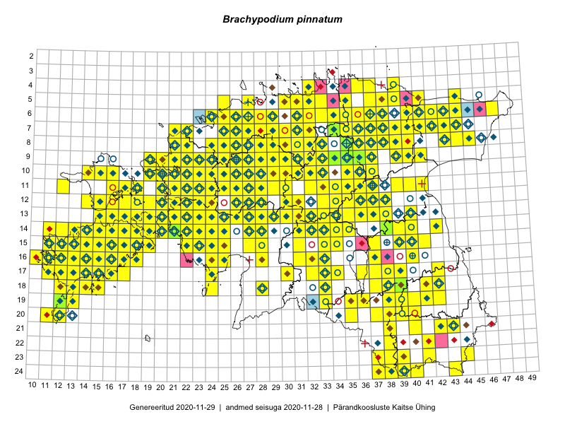

Brachypodium pinnatum — sulg-aruluste
Poaceae :: Brachypodium pinnatum (L.) P.Beauv. (1573)

Kaart põhineb 2784 kirjel:
vaatlusi 1248
herbaareksemplare 325
PKÜ kirjeid1 899
ELFi kirjeid2 310
LVA kirjeid3 2
Taime kaasaegsed ja ajaloolised leiukohad asuvad 372 ruudus.
Tingmärgid ja leidudega ruutude arvud periooditi uues (u) ja 2005 andmestikus (v)
| █ | vahemik | u4 | v5 |
|---|---|---|---|
| █ | 2006–2020 | 330 | – |
| ◆/◇ | 1971–2005 | 265 | 273 |
| ○ | 1921–1970 | 142 | 47 |
| + | kuni 1920 | 9 | 5 |
| × | hävinud | – | 0 |
| ? | kaheldav | – | 0 |
| Ruut | Leidja(d) | Leiuaeg | Kirje |
|---|---|---|---|
| 19-38 | Ott Luuk | 2020-09-12 | punkt: Brachypodium pinnatum (L.) P.Beauv. |
| 15-18 | Ott Luuk | 2020-09-12 | ruut/ala: Brachypodium pinnatum (L.) P.Beauv. |
| 15-18 | Peedu Saar | 2020-09-11 | ruut/ala: Brachypodium pinnatum (L.) P.Beauv. |
| 16-17 | Toomas Kukk | 2020-09-10 | ruut/ala: Brachypodium pinnatum (L.) P.Beauv. |
| 16-16 | Toomas Kukk | 2020-09-10 | ruut/ala: Brachypodium pinnatum (L.) P.Beauv. |
| 16-17 | Peedu Saar | 2020-09-10 | ruut/ala: Brachypodium pinnatum (L.) P.Beauv. |
| 07-43 | Meeli Mesipuu | 2020-08-28 | punkt: Brachypodium pinnatum (L.) P.Beauv. |
| 15-17 | Mari Reitalu, Sirje Azarov | 2020-08-27–2020-09-06 | ruut/ala: Brachypodium pinnatum (L.) P.Beauv. |
| 06-35 | Toomas Kukk, Peedu Saar | 2020-08-27 | ruut/ala: Brachypodium pinnatum (L.) P.Beauv. |
| 15-18 | Mari Reitalu, Sirje Azarov | 2020-08-27 | ruut/ala: Brachypodium pinnatum (L.) P.Beauv. |
| 10-36 | Peedu Saar | 2020-08-25 | ruut/ala: Brachypodium pinnatum (L.) P.Beauv. |
| 10-29 | Ott Luuk | 2020-08-24 | punkt: Brachypodium pinnatum (L.) P.Beauv. |
| 10-29 | Ott Luuk | 2020-08-24 | ruut/ala: Brachypodium pinnatum (L.) P.Beauv. |
| 18-33 | Peedu Saar | 2020-08-21 | ruut/ala: Brachypodium pinnatum (L.) P.Beauv. |
| 18-33 | Ott Luuk, Jaak-Albert Metsoja | 2020-08-21 | ruut/ala: Brachypodium pinnatum (L.) P.Beauv. |
| 14-16 | Mari Reitalu, Sirje Azarov | 2020-08-19–2020-08-20 | ruut/ala: Brachypodium pinnatum (L.) P.Beauv. |
| 19-35 | Meeli Mesipuu | 2020-08-19 | ruut/ala: Brachypodium pinnatum (L.) P.Beauv. |
| 14-19 | Meeli Mesipuu | 2020-08-12 | ruut/ala: Brachypodium pinnatum (L.) P.Beauv. |
| 16-17 | Mari Reitalu, Sirje Azarov | 2020-08-08–2020-08-29 | ruut/ala: Brachypodium pinnatum (L.) P.Beauv. |
| 10-21 | Peedu Saar | 2020-08-07 | ruut/ala: Brachypodium pinnatum (L.) P.Beauv. |
| 09-21 | Ott Luuk | 2020-08-07 | ruut/ala: Brachypodium pinnatum (L.) P.Beauv. |
| 15-15 | Mari Reitalu, Sirje Azarov | 2020-08-07 | ruut/ala: Brachypodium pinnatum (L.) P.Beauv. |
| 10-23 | Peedu Saar | 2020-08-05 | ruut/ala: Brachypodium pinnatum (L.) P.Beauv. |
| 10-23 | Ott Luuk | 2020-08-05 | ruut/ala: Brachypodium pinnatum (L.) P.Beauv. |
| 14-39 | Peedu Saar | 2020-08-03 | ruut/ala: Brachypodium pinnatum (L.) P.Beauv. |
| 12-37 | Ulvi Selgis | 2020-07-31 | punkt: Brachypodium pinnatum (L.) P.Beauv. |
| 14-14 | Mari Reitalu, Sirje Azarov, Aira Alasi | 2020-07-23 | ruut/ala: Brachypodium pinnatum (L.) P.Beauv. |
| 08-25 | Ott Luuk | 2020-07-22–2020-07-23 | ruut/ala: Brachypodium pinnatum (L.) P.Beauv. |
| 16-16 | Mari Reitalu, Sirje Azarov, Anne Teigamägi | 2020-07-22 | ruut/ala: Brachypodium pinnatum (L.) P.Beauv. |
| 09-26 | Ott Luuk | 2020-07-21–2020-07-23 | ruut/ala: Brachypodium pinnatum (L.) P.Beauv. |
| 14-22 | Silvia Pihu | 2020-07-08 | ELF: 43 |
| 14-22 | Silvia Pihu | 2020-07-08 | ELF: 24909 |
| 10-24 | Kaili Kattai | 2020-07-06 | punkt: Brachypodium pinnatum (L.) P.Beauv. |
| 14-21 | Kaili Kattai | 2020-07-05 | punkt: Brachypodium pinnatum (L.) P.Beauv. |
| 13-21 | Kaili Kattai | 2020-07-04 | punkt: Brachypodium pinnatum (L.) P.Beauv. |
| 13-21 | Kaili Kattai | 2020-07-04 | punkt: Brachypodium pinnatum (L.) P.Beauv. |
| 13-26 | Peedu Saar, Toomas Kukk | 2020-06-28 | punkt: Brachypodium pinnatum (L.) P.Beauv. |
| 08-28 | Ott Luuk | 2020-06-21 | ruut/ala: Brachypodium pinnatum (L.) P.Beauv. |
| 07-28 | Ott Luuk | 2020-06-21 | ruut/ala: Brachypodium pinnatum (L.) P.Beauv. |
| 12-21 | Toomas Kukk, Martin Tikk, Rein Kalamees | 2020-06-18 | ruut/ala: Brachypodium pinnatum (L.) P.Beauv. |
| 07-29 | Toomas Kukk, Martin Tikk, Rein Kalamees | 2020-06-17 | ruut/ala: Brachypodium pinnatum (L.) P.Beauv. |
| 06-27 | Toomas Kukk, Martin Tikk, Rein Kalamees | 2020-06-16 | punkt: Brachypodium pinnatum (L.) P.Beauv. |
| 06-27 | Toomas Kukk, Martin Tikk, Rein Kalamees | 2020-06-16 | ruut/ala: Brachypodium pinnatum (L.) P.Beauv. |
| 08-36 | Toomas Kukk, Meeli Mesipuu | 2020-06-08 | ruut/ala: Brachypodium pinnatum (L.) P.Beauv. |
| 07-36 | Toomas Kukk, Meeli Mesipuu | 2020-06-08 | ruut/ala: Brachypodium pinnatum (L.) P.Beauv. |
| 17-13 | Mari Reitalu | 2020-06-07 | ruut/ala: Brachypodium pinnatum (L.) P.Beauv. |
| 14-21 | Kaili Kattai | 2020-06-04 | punkt: Brachypodium pinnatum (L.) P.Beauv. |
| 17-15 | Mari Reitalu, Sirje Azarov, Triin Reitalu | 2020-05-28 | ruut/ala: Brachypodium pinnatum (L.) P.Beauv. |
| 17-14 | Mari Reitalu, Triin Reitalu, Sirje Azarov | 2020-05-26 | ruut/ala: Brachypodium pinnatum (L.) P.Beauv. |
| 17-15 | Toomas Kukk, Peedu Saar | 2019-09-27 | punkt: Brachypodium pinnatum (L.) P.Beauv. |
| 16-17 | Peedu Saar, Toomas Kukk | 2019-09-26 | ruut/ala: Brachypodium pinnatum (L.) P.Beauv. |
| 16-14 | Mari Reitalu, Sirje Azarov | 2019-09-26 | ruut/ala: Brachypodium pinnatum (L.) P.Beauv. |
| 18-28 | Peedu Saar, Toomas Kukk | 2019-09-25 | ruut/ala: Brachypodium pinnatum (L.) P.Beauv. |
| 10-22 | Toomas Kukk, Peedu Saar | 2019-09-19 | ruut/ala: Brachypodium pinnatum (L.) P.Beauv. |
| 11-22 | Peedu Saar, Toomas Kukk | 2019-09-19 | ruut/ala: Brachypodium pinnatum (L.) P.Beauv. |
| 10-20 | Ott Luuk | 2019-09-18 | ruut/ala: Brachypodium pinnatum (L.) P.Beauv. |
| 09-19 | Toomas Kukk, Peedu Saar | 2019-09-17 | ruut/ala: Brachypodium pinnatum (L.) P.Beauv. |
| 06-44 | Ott Luuk, Meeli Mesipuu | 2019-09-11 | ruut/ala: Brachypodium pinnatum (L.) P.Beauv. |
| 05-44 | Meeli Mesipuu, Ott Luuk | 2019-09-11 | ruut/ala: Brachypodium pinnatum (L.) P.Beauv. |
| 06-44 | Meeli Mesipuu, Ott Luuk | 2019-09-11 | punkt: Brachypodium pinnatum (L.) P.Beauv. |
| 08-25 | Ott Luuk, Peedu Saar | 2019-09-05 | ruut/ala: Brachypodium pinnatum (L.) P.Beauv. |
| 08-26 | Ott Luuk, Peedu Saar | 2019-09-05 | ruut/ala: Brachypodium pinnatum (L.) P.Beauv. |
| 09-22 | Ott Luuk | 2019-09-04 | punkt: Brachypodium pinnatum (L.) P.Beauv. |
| 09-23 | Ott Luuk | 2019-09-03 | ruut/ala: Brachypodium pinnatum (L.) P.Beauv. |
| 12-23 | Peedu Saar, Toomas Kukk | 2019-08-30 | ruut/ala: Brachypodium pinnatum (L.) P.Beauv. |
| 08-30 | Ott Luuk, Toivo Sepp | 2019-08-30 | ruut/ala: Brachypodium pinnatum (L.) P.Beauv. |
| 14-32 | Timo Luhamäe, Meeli Mesipuu | 2019-08-29 | punkt: Brachypodium pinnatum (L.) P.Beauv. |
| 13-32 | Ott Luuk, Eerik Leibak | 2019-08-29 | ruut/ala: Brachypodium pinnatum (L.) P.Beauv. |
| 13-31 | Ott Luuk, Eerik Leibak | 2019-08-29 | ruut/ala: Brachypodium pinnatum (L.) P.Beauv. |
| 14-32 | Meeli Mesipuu, Timo Luhamäe | 2019-08-29 | ruut/ala: Brachypodium pinnatum (L.) P.Beauv. |
| 16-32 | Mari Reitalu, Thea Kull, Martin Tikk | 2019-08-29 | ruut/ala: Brachypodium pinnatum (L.) P.Beauv. |
| 13-29 | Mari Reitalu, Thea Kull | 2019-08-28 | ruut/ala: Brachypodium pinnatum (L.) P.Beauv. |
| 07-25 | Rein Kalamees | 2019-08-27 | ruut/ala: Brachypodium pinnatum (L.) P.Beauv. |
| 06-26 | Rein Kalamees | 2019-08-27 | ruut/ala: Brachypodium pinnatum (L.) P.Beauv. |
| 17-32 | Peedu Saar, Martin Tikk, Toomas Kukk | 2019-08-27 | ruut/ala: Brachypodium pinnatum (L.) P.Beauv. |
| 13-36 | Ott Luuk, Eerik Leibak | 2019-08-27 | ruut/ala: Brachypodium pinnatum (L.) P.Beauv. |
| 12-36 | Ott Luuk, Eerik Leibak | 2019-08-27 | ruut/ala: Brachypodium pinnatum (L.) P.Beauv. |
| 12-34 | Ott Luuk, Eerik Leibak | 2019-08-27 | ruut/ala: Brachypodium pinnatum (L.) P.Beauv. |
| 10-23 | Peedu Saar, Ott Luuk, Sten Mander, Kersti Tambets, Kristine Fenske | 2019-08-22 | ruut/ala: Brachypodium pinnatum (L.) P.Beauv. |
| 17-13 | Mari Reitalu, Sirje Azarov | 2019-08-19 | ELF: 16715 |
| 09-22 | Peedu Saar | 2019-08-16 | ruut/ala: Brachypodium pinnatum (L.) P.Beauv. |
| 11-36 | Peedu Saar | 2019-08-10 | ruut/ala: Brachypodium pinnatum (L.) P.Beauv. |
| 11-36 | Peedu Saar | 2019-08-10 | ruut/ala: Brachypodium pinnatum (L.) P.Beauv. |
| 08-39 | Rein Kalamees, Toomas Kukk | 2019-08-08 | ruut/ala: Brachypodium pinnatum (L.) P.Beauv. |
| 07-32 | Ott Luuk, Jaak-Albert Metsoja | 2019-08-08 | ruut/ala: Brachypodium pinnatum (L.) P.Beauv. |
| 08-33 | Ott Luuk, Jaak-Albert Metsoja | 2019-08-08 | ruut/ala: Brachypodium pinnatum (L.) P.Beauv. |
| 07-32 | Ott Luuk, Jaak-Albert Metsoja | 2019-08-08 | punkt: Brachypodium pinnatum (L.) P.Beauv. |
| 07-35 | Toomas Kukk, Rein Kalamees, Kaur Maran | 2019-08-07 | ruut/ala: Brachypodium pinnatum (L.) P.Beauv. |
| 04-37 | Meeli Mesipuu | 2019-08-07 | ruut/ala: Brachypodium pinnatum (L.) P.Beauv. |
| 07-31 | Peedu Saar, Timo Luhamäe | 2019-08-05 | ruut/ala: Brachypodium pinnatum (L.) P.Beauv. |
| 08-36 | Ott Luuk, Jaak-Albert Metsoja | 2019-08-05 | ruut/ala: Brachypodium pinnatum (L.) P.Beauv. |
| 07-36 | Ott Luuk, Jaak-Albert Metsoja | 2019-08-05 | ruut/ala: Brachypodium pinnatum (L.) P.Beauv. |
| 06-38 | Meeli Mesipuu | 2019-08-05 | ruut/ala: Brachypodium pinnatum (L.) P.Beauv. |
| 10-32 | Ott Luuk | 2019-07-31 | punkt: Brachypodium pinnatum (L.) P.Beauv. |
| 10-33 | Ott Luuk | 2019-07-31 | ruut/ala: Brachypodium pinnatum (L.) P.Beauv. |
| 10-32 | Ott Luuk | 2019-07-31 | ruut/ala: Brachypodium pinnatum (L.) P.Beauv. |
| 08-21 | Peedu Saar | 2019-07-26 | ruut/ala: Brachypodium pinnatum (L.) P.Beauv. |
| 07-21 | Peedu Saar | 2019-07-25 | ruut/ala: Brachypodium pinnatum (L.) P.Beauv. |
| 09-31 | Ott Luuk, Toivo Sepp | 2019-07-25 | ruut/ala: Brachypodium pinnatum (L.) P.Beauv. |
| 08-31 | Ott Luuk, Toivo Sepp | 2019-07-24 | ruut/ala: Brachypodium pinnatum (L.) P.Beauv. |
| 17-38 | Meeli Mesipuu | 2019-07-23 | ruut/ala: Brachypodium pinnatum (L.) P.Beauv. |
| 14-27 | Meeli Mesipuu | 2019-07-19 | ruut/ala: Brachypodium pinnatum (L.) P.Beauv. |
| 10-26 | Rein Kalamees | 2019-07-17 | ruut/ala: Brachypodium pinnatum (L.) P.Beauv. |
| 16-40 | Meeli Mesipuu | 2019-07-17 | ruut/ala: Brachypodium pinnatum (L.) P.Beauv. |
| 19-36 | Ott Luuk, Peedu Saar | 2019-07-16 | ruut/ala: Brachypodium pinnatum (L.) P.Beauv. |
| 19-35 | Ott Luuk, Peedu Saar | 2019-07-16 | ruut/ala: Brachypodium pinnatum (L.) P.Beauv. |
| 18-37 | Peedu Saar, Ott Luuk | 2019-07-15 | ruut/ala: Brachypodium pinnatum (L.) P.Beauv. |
| 17-38 | Peedu Saar, Ott Luuk | 2019-07-15 | ruut/ala: Brachypodium pinnatum (L.) P.Beauv. |
| 17-12 | Mari Reitalu | 2019-07-14 | ELF: 24782 |
| 24-39 | Peedu Saar, Timo Luhamäe | 2019-07-12 | ruut/ala: Brachypodium pinnatum (L.) P.Beauv. |
| 22-41 | Toomas Kukk, Indrek Tammekänd | 2019-07-11 | ruut/ala: Brachypodium pinnatum (L.) P.Beauv. |
| 23-37 | Peedu Saar, Timo Luhamäe | 2019-07-11 | ruut/ala: Brachypodium pinnatum (L.) P.Beauv. |
| 18-41 | Meeli Mesipuu | 2019-07-10 | ruut/ala: Brachypodium pinnatum (L.) P.Beauv. |
| 17-11 | Mari Reitalu, Sirje Azarov | 2019-07-10 | ELF: 9983 |
| 18-42 | Thea Kull, Meeli Mesipuu | 2019-07-09 | ruut/ala: Brachypodium pinnatum (L.) P.Beauv. |
| 15-15 | Toomas Kukk, Eerik Leibak | 2019-07-05 | ruut/ala: Brachypodium pinnatum (L.) P.Beauv. |
| 16-11 | Helle Mäemets | 2019-07-04 | punkt: Brachypodium pinnatum (L.) P.Beauv. |
| 10-16 | Toomas Kukk | 2019-07-03 | ruut/ala: Brachypodium pinnatum (L.) P.Beauv. |
| 14-39 | Ott Luuk, Kaili Kattai | 2019-07-03 | ruut/ala: Brachypodium pinnatum (L.) P.Beauv. |
| 17-12 | Mari Reitalu | 2019-07-01 | ELF: 4696 |
| 15-11 | Mari Reitalu | 2019-06-27 | ELF: 129 |
| 13-21 | Ott Luuk, Toomas Kukk, Thea Kull | 2019-06-25 | ruut/ala: Brachypodium pinnatum (L.) P.Beauv. |
| 07-37 | Peedu Saar, Ott Luuk | 2019-06-12 | ruut/ala: Brachypodium pinnatum (L.) P.Beauv. |
| 07-38 | Peedu Saar, Ott Luuk | 2019-06-12 | ruut/ala: Brachypodium pinnatum (L.) P.Beauv. |
| 08-37 | Ott Luuk, Peedu Saar | 2019-06-12 | ruut/ala: Brachypodium pinnatum (L.) P.Beauv. |
| 11-37 | Ott Luuk, Peedu Saar | 2019-06-10 | ruut/ala: Brachypodium pinnatum (L.) P.Beauv. |
| 15-18 | Meeli Mesipuu | 2019-06-03 | ruut/ala: Brachypodium pinnatum (L.) P.Beauv. |
| 12-18 | Toomas Kukk, Indrek Tammekänd | 2019-06-01 | ruut/ala: Brachypodium pinnatum (L.) P.Beauv. |
| 12-18 | Toomas Kukk | 2019-06-01 | ruut/ala: Brachypodium pinnatum (L.) P.Beauv. |
| 14-21 | Meeli Mesipuu | 2019-05-31 | ruut/ala: Brachypodium pinnatum (L.) P.Beauv. |
| 15-17 | Mari Reitalu, Sirje Azarov, Triin Reitalu | 2019-05-01 | ruut/ala: Brachypodium pinnatum (L.) P.Beauv. |
| 06-34 | Rein Kalamees, Kersti Püssa, Kai Rünk, Illi Tarmu | 2018-10-17 | ruut/ala: Brachypodium pinnatum (L.) P.Beauv. |
| 12-37 | Ott Luuk, Meeli Mesipuu | 2018-09-20 | ruut/ala: Brachypodium pinnatum (L.) P.Beauv. |
| 14-20 | Toomas Kukk | 2018-09-19 | ruut/ala: Brachypodium pinnatum (L.) P.Beauv. |
| 14-20 | Peedu Saar | 2018-09-19 | ruut/ala: Brachypodium pinnatum (L.) P.Beauv. |
| 12-18 | Toomas Kukk, Peeter Pärn | 2018-09-15 | ruut/ala: Brachypodium pinnatum (L.) P.Beauv. |
| 09-37 | Rein Kalamees | 2018-09-07 | ruut/ala: Brachypodium pinnatum (L.) P.Beauv. |
| 08-27 | Ott Luuk, Thea Kull | 2018-09-06 | ruut/ala: Brachypodium pinnatum (L.) P.Beauv. |
| 16-17 | Toomas Kukk, Tiit Hallikma | 2018-08-30 | ruut/ala: Brachypodium pinnatum (L.) P.Beauv. |
| 12-18 | Toomas Kukk, Tiit Hallikma | 2018-08-30 | ruut/ala: Brachypodium pinnatum (L.) P.Beauv. |
| 12-19 | Toomas Kukk, Tiit Hallikma | 2018-08-30 | ruut/ala: Brachypodium pinnatum (L.) P.Beauv. |
| 10-31 | Ott Luuk | 2018-08-28 | ruut/ala: Brachypodium pinnatum (L.) P.Beauv. |
| 11-28 | Ott Luuk, Toivo Sepp | 2018-08-24–2018-08-30 | ruut/ala: Brachypodium pinnatum (L.) P.Beauv. |
| 14-38 | Peedu Saar | 2018-08-23 | TAA0146901: Brachypodium pinnatum (L.) P.Beauv. |
| 16-17 | Mari Reitalu, Sirje Azarov | 2018-08-22 | ELF: 103 |
| 14-31 | Toomas Kukk | 2018-08-18 | ruut/ala: Brachypodium pinnatum (L.) P.Beauv. |
| 14-24 | Peedu Saar, Toomas Kukk, Ott Luuk, Kersti Tambets, Sten Mander | 2018-08-17 | ruut/ala: Brachypodium pinnatum (L.) P.Beauv. |
| 12-22 | Peedu Saar, Toomas Kukk, Ott Luuk, Kersti Tambets, Sten Mander | 2018-08-17 | ruut/ala: Brachypodium pinnatum (L.) P.Beauv. |
| 10-27 | Peedu Saar, Toomas Kukk, Ott Luuk, Kersti Tambets, Sten Mander | 2018-08-16 | ruut/ala: Brachypodium pinnatum (L.) P.Beauv. |
| 17-12 | Triin Reitalu, Mari Reitalu | 2018-08-11 | punkt: Brachypodium pinnatum (L.) P.Beauv. |
| 17-12 | Triin Reitalu, Mari Reitalu | 2018-08-11 | punkt: Brachypodium pinnatum (L.) P.Beauv. |
| 16-12 | Triin Reitalu, Mari Reitalu | 2018-08-09 | punkt: Brachypodium pinnatum (L.) P.Beauv. |
| 17-12 | Triin Reitalu, Mari Lepik | 2018-08-08 | punkt: Brachypodium pinnatum (L.) P.Beauv. |
| 17-12 | Triin Reitalu, Mari Lepik | 2018-08-08 | punkt: Brachypodium pinnatum (L.) P.Beauv. |
| 07-28 | Peedu Saar, Toomas Kukk | 2018-08-07 | ruut/ala: Brachypodium pinnatum (L.) P.Beauv. |
| 14-16;14-17 | Mari Reitalu, Sirje Azarov | 2018-08-07 | ELF: 2585 |
| 13-19 | Mari Reitalu, Sirje Azarov | 2018-08-07 | ELF: 24039 |
| 17-12 | Triin Reitalu, Mari Lepik | 2018-08-06 | punkt: Brachypodium pinnatum (L.) P.Beauv. |
| 16-12 | Triin Reitalu, Mari Reitalu | 2018-08-03 | punkt: Brachypodium pinnatum (L.) P.Beauv. |
| 16-12 | Triin Reitalu, Mari Reitalu | 2018-08-03 | punkt: Brachypodium pinnatum (L.) P.Beauv. |
| 08-28 | Tiina Elvisto, Riima Niidas | 2018-08-01 | punkt: Brachypodium pinnatum (L.) P.Beauv. |
| 10-31 | Ott Luuk | 2018-08-01 | ruut/ala: Brachypodium pinnatum (L.) P.Beauv. |
| 14-40 | Peedu Saar | 2018-07-20 | ruut/ala: Brachypodium pinnatum (L.) P.Beauv. |
| 10-22 | Meeli Mesipuu | 2018-07-18 | ruut/ala: Brachypodium pinnatum (L.) P.Beauv. |
| 15-12 | Triin Reitalu, Ansis Blaus | 2018-07-13 | punkt: Brachypodium pinnatum (L.) P.Beauv. |
| 15-12 | Triin Reitalu, Ansis Blaus | 2018-07-12 | punkt: Brachypodium pinnatum (L.) P.Beauv. |
| 15-12 | Triin Reitalu, Ansis Blaus | 2018-07-12 | punkt: Brachypodium pinnatum (L.) P.Beauv. |
| 16-12 | Mari Reitalu, Sirje Azarov | 2018-07-12 | ELF: 2349 |
| 15-13 | Triin Reitalu, Ansis Blaus | 2018-07-11 | punkt: Brachypodium pinnatum (L.) P.Beauv. |
| 14-13 | Triin Reitalu, Ansis Blaus | 2018-07-10 | punkt: Brachypodium pinnatum (L.) P.Beauv. |
| 17-12 | Mari Reitalu, Sirje Azarov | 2018-07-10 | ELF: 16272 |
| 14-14 | Triin Reitalu, Ansis Blaus | 2018-07-09 | punkt: Brachypodium pinnatum (L.) P.Beauv. |
| 14-14 | Triin Reitalu, Ansis Blaus | 2018-07-09 | punkt: Brachypodium pinnatum (L.) P.Beauv. |
| 11-18 | Toomas Kukk | 2018-07-09 | ruut/ala: Brachypodium pinnatum (L.) P.Beauv. |
| 11-18 | Peedu Saar | 2018-07-09 | ruut/ala: Brachypodium pinnatum (L.) P.Beauv. |
| 11-18 | Meeli Mesipuu | 2018-07-09 | ruut/ala: Brachypodium pinnatum (L.) P.Beauv. |
| 08-27 | Mari Reitalu, Sirje Azarov | 2018-07-01 | ruut/ala: Brachypodium pinnatum (L.) P.Beauv. |
| 11-37 | Peedu Saar, Toomas Kukk, Ilmar Uibopuu | 2018-06-30 | ruut/ala: Brachypodium pinnatum (L.) P.Beauv. |
| 07-28 | Mari Reitalu, Sirje Azarov | 2018-06-30 | ruut/ala: Brachypodium pinnatum (L.) P.Beauv. |
| 24-39 | Anneli Palo | 2018-06-16 | LVA: 2100407162 |
| 17-33 | Mari Reitalu, Leena Gerz | 2018-06-03 | ruut/ala: Brachypodium pinnatum (L.) P.Beauv. |
| 18-24 | Indrek Tammekänd | 2018-05-31–2018-06-02 | ruut/ala: Brachypodium pinnatum (L.) P.Beauv. |
| 16-14 | Toomas Kukk, Ilmar Uibopuu, Mari Reitalu | 2018-05-28 | ruut/ala: Brachypodium pinnatum (L.) P.Beauv. |
| 12-19 | Toomas Kukk, Ilmar Uibopuu, Mari Reitalu | 2018-05-27 | ruut/ala: Brachypodium pinnatum (L.) P.Beauv. |
| 12-18 | Toomas Kukk, Ilmar Uibopuu, Mari Reitalu | 2018-05-27 | ruut/ala: Brachypodium pinnatum (L.) P.Beauv. |
| 14-20 | Toomas Kukk, Ilmar Uibopuu | 2018-05-26 | ruut/ala: Brachypodium pinnatum (L.) P.Beauv. |
| 15-19 | Mari Reitalu, Sirje Azarov, Maris Sepp | 2018-05-23 | ruut/ala: Brachypodium pinnatum (L.) P.Beauv. |
| 07-37 | Toomas Kukk, Peedu Saar | 2017-09-28 | ruut/ala: Brachypodium pinnatum (L.) P.Beauv. |
| 08-39 | Peedu Saar, Toomas Kukk | 2017-09-28 | ruut/ala: Brachypodium pinnatum (L.) P.Beauv. |
| 08-38 | Peedu Saar, Toomas Kukk | 2017-09-27 | ruut/ala: Brachypodium pinnatum (L.) P.Beauv. |
| 12-18 | Toomas Kukk, Peeter Pärn | 2017-09-09–2017-09-10 | ruut/ala: Brachypodium pinnatum (L.) P.Beauv. |
| 08-29 | Peedu Saar, Toomas Kukk | 2017-09-08 | ruut/ala: Brachypodium pinnatum (L.) P.Beauv. |
| 10-25 | Peedu Saar, Toomas Kukk | 2017-09-08 | ruut/ala: Brachypodium pinnatum (L.) P.Beauv. |
| 11-32 | Peedu Saar, Ott Luuk | 2017-09-08 | punkt: Brachypodium pinnatum (L.) P.Beauv. |
| 18-38 | Rein Kalamees | 2017-09-07 | ruut/ala: Brachypodium pinnatum (L.) P.Beauv. |
| 10-24 | Peedu Saar, Toomas Kukk | 2017-09-07 | ruut/ala: Brachypodium pinnatum (L.) P.Beauv. |
| 10-21 | Peedu Saar, Toomas Kukk | 2017-09-07 | ruut/ala: Brachypodium pinnatum (L.) P.Beauv. |
| 11-23 | Peedu Saar, Toomas Kukk | 2017-09-07 | ruut/ala: Brachypodium pinnatum (L.) P.Beauv. |
| 08-31 | Rein Kalamees | 2017-09-06 | ruut/ala: Brachypodium pinnatum (L.) P.Beauv. |
| 13-21 | Peedu Saar, Toomas Kukk | 2017-09-06 | ruut/ala: Brachypodium pinnatum (L.) P.Beauv. |
| 14-25 | Peedu Saar, Toomas Kukk | 2017-09-06 | ruut/ala: Brachypodium pinnatum (L.) P.Beauv. |
| 14-35 | Meeli Mesipuu, Ott Luuk, Helen Toom | 2017-08-28 | ruut/ala: Brachypodium pinnatum (L.) P.Beauv. |
| 14-35 | Peedu Saar | 2017-08-15–2017-09-16 | ruut/ala: Brachypodium pinnatum (L.) P.Beauv. |
| 15-37 | Ott Luuk | 2017-08-14 | ruut/ala: Brachypodium pinnatum (L.) P.Beauv. |
| 15-28 | Peedu Saar, Timo Luhamäe | 2017-08-11 | ruut/ala: Brachypodium pinnatum (L.) P.Beauv. |
| 09-24 | Mari Reitalu, Eerik Leibak | 2017-08-11 | ruut/ala: Brachypodium pinnatum (L.) P.Beauv. |
| 11-20 | Ott Luuk, Ilmar Uibopuu | 2017-08-10 | ruut/ala: Brachypodium pinnatum (L.) P.Beauv. |
| 07-25 | Mari Reitalu, Indrek Tammekänd | 2017-08-10 | ruut/ala: Brachypodium pinnatum (L.) P.Beauv. |
| 11-21 | Ilmar Uibopuu, Ott Luuk | 2017-08-10 | ruut/ala: Brachypodium pinnatum (L.) P.Beauv. |
| 08-30 | Thea Kull, Ott Luuk | 2017-08-09 | ruut/ala: Brachypodium pinnatum (L.) P.Beauv. |
| 08-29 | Ott Luuk, Thea Kull | 2017-08-09 | ruut/ala: Brachypodium pinnatum (L.) P.Beauv. |
| 12-27 | Mari Reitalu, Eerik Leibak | 2017-08-09 | ruut/ala: Brachypodium pinnatum (L.) P.Beauv. |
| 12-26 | Mari Reitalu, Eerik Leibak | 2017-08-09 | ruut/ala: Brachypodium pinnatum (L.) P.Beauv. |
| 09-28 | Ilmar Uibopuu, Kadri Kuusksalu, Toomas Kukk, Ott Luuk | 2017-08-09 | ruut/ala: Brachypodium pinnatum (L.) P.Beauv. |
| 08-26 | Toomas Kukk, Ilmar Uibopuu, Kadri Kuusksalu | 2017-08-08 | ruut/ala: Brachypodium pinnatum (L.) P.Beauv. |
| 07-26 | Toomas Kukk, Ilmar Uibopuu, Kadri Kuusksalu | 2017-08-08 | ruut/ala: Brachypodium pinnatum (L.) P.Beauv. |
| 10-28 | Thea Kull, Ott Luuk | 2017-08-08 | ruut/ala: Brachypodium pinnatum (L.) P.Beauv. |
| 07-28 | Peedu Saar, Timo Luhamäe | 2017-08-08 | ruut/ala: Brachypodium pinnatum (L.) P.Beauv. |
| 07-27 | Peedu Saar, Timo Luhamäe | 2017-08-08 | ruut/ala: Brachypodium pinnatum (L.) P.Beauv. |
| 11-28 | Ott Luuk, Thea Kull | 2017-08-08 | ruut/ala: Brachypodium pinnatum (L.) P.Beauv. |
| 09-27 | Meeli Mesipuu, Indrek Tammekänd | 2017-08-08 | ruut/ala: Brachypodium pinnatum (L.) P.Beauv. |
| 08-27 | Mari Reitalu, Eerik Leibak | 2017-08-08 | ruut/ala: Brachypodium pinnatum (L.) P.Beauv. |
| 08-28 | Mari Reitalu, Eerik Leibak | 2017-08-08 | ruut/ala: Brachypodium pinnatum (L.) P.Beauv. |
| 13-37 | Toomas Kukk, Ilmar Uibopuu | 2017-08-07 | ruut/ala: Brachypodium pinnatum (L.) P.Beauv. |
| 12-33 | Thea Kull, Ott Luuk | 2017-08-07 | ruut/ala: Brachypodium pinnatum (L.) P.Beauv. |
| 13-34 | Peedu Saar, Timo Luhamäe | 2017-08-07 | ruut/ala: Brachypodium pinnatum (L.) P.Beauv. |
| 14-19 | Meeli Mesipuu | 2017-08-07 | ruut/ala: Brachypodium pinnatum (L.) P.Beauv. |
| 14-20 | Meeli Mesipuu | 2017-08-07 | ruut/ala: Brachypodium pinnatum (L.) P.Beauv. |
| 14-21 | Mari Reitalu | 2017-08-07 | ruut/ala: Brachypodium pinnatum (L.) P.Beauv. |
| 12-34 | Ott Luuk, Thea Kull | 2017-08-03 | ruut/ala: Brachypodium pinnatum (L.) P.Beauv. |
| 16-37 | Meeli Mesipuu | 2017-07-27 | ruut/ala: Brachypodium pinnatum (L.) P.Beauv. |
| 14-39 | Peedu Saar | 2017-07-26 | ruut/ala: Brachypodium pinnatum (L.) P.Beauv. |
| 06-34 | Meeli Mesipuu | 2017-07-26 | ruut/ala: Brachypodium pinnatum (L.) P.Beauv. |
| 20-38 | Ott Luuk, Peedu Saar | 2017-07-25 | ruut/ala: Brachypodium pinnatum (L.) P.Beauv. |
| 16-40 | Meeli Mesipuu | 2017-07-22–2017-07-30 | ruut/ala: Brachypodium pinnatum (L.) P.Beauv. |
| 20-38 | Triin Reitalu, Ansis Blaus | 2017-07-21 | punkt: Brachypodium pinnatum (L.) P.Beauv. |
| 06-34 | Peedu Saar, Ott Luuk | 2017-07-19 | ruut/ala: Brachypodium pinnatum (L.) P.Beauv. |
| 14-21 | Tiiu Kupper | 2017-07-18 | TU284245: Brachypodium pinnatum (L.) P.Beauv. |
| 14-21 | Tiiu Kupper | 2017-07-18 | TU284246: Brachypodium pinnatum (L.) P.Beauv. |
| 08-40 | Peedu Saar, Ott Luuk | 2017-07-18 | ruut/ala: Brachypodium pinnatum (L.) P.Beauv. |
| 08-38 | Ott Luuk, Peedu Saar | 2017-07-18 | ruut/ala: Brachypodium pinnatum (L.) P.Beauv. |
| 22-38 | Triin Reitalu, Ansis Blaus | 2017-07-17 | punkt: Brachypodium pinnatum (L.) P.Beauv. |
| 16-40 | Peedu Saar | 2017-07-10–2017-07-11 | ruut/ala: Brachypodium pinnatum (L.) P.Beauv. |
| 16-12 | Triin Reitalu, Mari Reitalu | 2017-07-10 | punkt: Brachypodium pinnatum (L.) P.Beauv. |
| 15-41 | Ott Luuk, Peedu Saar | 2017-07-05 | ruut/ala: Brachypodium pinnatum (L.) P.Beauv. |
| 15-19 | Heete Ausmeel, Triin Edovald, Evelin Laanest, Ilmar Uibopuu, Marko Vainu | 2017-07-05 | LVA: 247174792 |
| 17-37 | Helle Mäemets | 2017-07-01 | ruut/ala: Brachypodium pinnatum (L.) P.Beauv. |
| 10-15 | Ott Luuk, Toomas Kukk, Peedu Saar, Sander Laherand | 2017-06-30–2017-07-01 | ruut/ala: Brachypodium pinnatum (L.) P.Beauv. |
| 18-39 | Peedu Saar | 2017-06-25 | punkt: Brachypodium pinnatum (L.) P.Beauv. |
| 12-18 | Toomas Kukk, Peeter Pärn | 2017-06-15 | ruut/ala: Brachypodium pinnatum (L.) P.Beauv. |
| 12-18 | Toomas Kukk, Peeter Pärn | 2017-06-15 | ruut/ala: Brachypodium pinnatum (L.) P.Beauv. |
| 12-18 | Peedu Saar, Ilmar Uibopuu | 2017-06-15 | ruut/ala: Brachypodium pinnatum (L.) P.Beauv. |
| 12-18 | Peedu Saar, Ilmar Uibopuu | 2017-06-15 | ruut/ala: Brachypodium pinnatum (L.) P.Beauv. |
| 15-12 | Toomas Kukk, Meeli Mesipuu | 2016-10-08 | ruut/ala: Brachypodium pinnatum (L.) P.Beauv. |
| 17-13 | Ott Luuk, Peedu Saar | 2016-10-08 | ruut/ala: Brachypodium pinnatum (L.) P.Beauv. |
| 18-12 | Toomas Kukk, Meeli Mesipuu, Mari Reitalu | 2016-10-07 | ruut/ala: Brachypodium pinnatum (L.) P.Beauv. |
| 19-12 | Ott Luuk, Peedu Saar | 2016-10-07 | ruut/ala: Brachypodium pinnatum (L.) P.Beauv. |
| 15-13 | Meeli Mesipuu, Toomas Kukk, Mari Reitalu | 2016-10-06 | ruut/ala: Brachypodium pinnatum (L.) P.Beauv. |
| 16-13 | Toomas Kukk, Meeli Mesipuu | 2016-10-05 | ruut/ala: Brachypodium pinnatum (L.) P.Beauv. |
| 07-32 | Peedu Saar, Ott Luuk | 2016-09-28 | ruut/ala: Brachypodium pinnatum (L.) P.Beauv. |
| 08-32 | Ott Luuk, Peedu Saar | 2016-09-28 | ruut/ala: Brachypodium pinnatum (L.) P.Beauv. |
| 16-14 | Meeli Mesipuu | 2016-09-26 | ruut/ala: Brachypodium pinnatum (L.) P.Beauv. |
| 16-16 | Meeli Mesipuu | 2016-09-25 | ruut/ala: Brachypodium pinnatum (L.) P.Beauv. |
| 15-15 | Meeli Mesipuu | 2016-09-23 | ruut/ala: Brachypodium pinnatum (L.) P.Beauv. |
| 09-32 | Toomas Kukk, Peedu Saar | 2016-09-16 | ruut/ala: Brachypodium pinnatum (L.) P.Beauv. |
| 06-33 | Peedu Saar, Toomas Kukk | 2016-09-14 | ruut/ala: Brachypodium pinnatum (L.) P.Beauv. |
| 07-30 | Toomas Kukk, Peedu Saar | 2016-09-09 | ruut/ala: Brachypodium pinnatum (L.) P.Beauv. |
| 08-30 | Peedu Saar, Toomas Kukk | 2016-09-09 | ruut/ala: Brachypodium pinnatum (L.) P.Beauv. |
| 06-32 | Toomas Kukk, Peedu Saar | 2016-09-08 | ruut/ala: Brachypodium pinnatum (L.) P.Beauv. |
| 06-31 | Peedu Saar, Toomas Kukk | 2016-09-08 | ruut/ala: Brachypodium pinnatum (L.) P.Beauv. |
| 08-28 | Peedu Saar, Ott Luuk | 2016-09-07 | ruut/ala: Brachypodium pinnatum (L.) P.Beauv. |
| 09-30 | Ott Luuk, Peedu Saar | 2016-09-06–2016-09-07 | ruut/ala: Brachypodium pinnatum (L.) P.Beauv. |
| 05-38 | Thea Kull, Toomas Kukk | 2016-09-06 | ruut/ala: Brachypodium pinnatum (L.) P.Beauv. |
| 05-38 | Thea Kull, Toomas Kukk | 2016-09-05 | ruut/ala: Brachypodium pinnatum (L.) P.Beauv. |
| 10-25 | Peedu Saar, Ott Luuk | 2016-09-05 | ruut/ala: Brachypodium pinnatum (L.) P.Beauv. |
| 10-26 | Ott Luuk, Peedu Saar | 2016-09-05 | punkt: Brachypodium pinnatum (L.) P.Beauv. |
| 16-17 | Peedu Saar, Ott Luuk | 2016-09-01 | ruut/ala: Brachypodium pinnatum (L.) P.Beauv. |
| 13-16 | Peedu Saar, Ott Luuk | 2016-08-31 | ruut/ala: Brachypodium pinnatum (L.) P.Beauv. |
| 14-16 | Ott Luuk, Peedu Saar | 2016-08-31 | ruut/ala: Brachypodium pinnatum (L.) P.Beauv. |
| 18-15 | Peedu Saar | 2016-08-30 | ruut/ala: Brachypodium pinnatum (L.) P.Beauv. |
| 18-14 | Ott Luuk | 2016-08-30 | ruut/ala: Brachypodium pinnatum (L.) P.Beauv. |
| 06-29 | Sander Laherand, Toomas Kukk | 2016-08-29 | ruut/ala: Brachypodium pinnatum (L.) P.Beauv. |
| 13-17 | Peedu Saar, Ott Luuk | 2016-08-29 | ruut/ala: Brachypodium pinnatum (L.) P.Beauv. |
| 14-17 | Ott Luuk, Peedu Saar | 2016-08-29 | ruut/ala: Brachypodium pinnatum (L.) P.Beauv. |
| 15-18 | Mari Reitalu, Hannes Pehlak | 2016-08-26 | ruut/ala: Brachypodium pinnatum (L.) P.Beauv. |
| 18-38 | Ott Luuk, Thea Kull | 2016-08-23 | ruut/ala: Brachypodium pinnatum (L.) P.Beauv. |
| 10-29 | Indrek Tammekänd, Janno Tammekänd, Üllar Tammekänd, Andreas Tammekänd, Tene Johanson | 2016-08-20–2016-08-21 | ruut/ala: Brachypodium pinnatum (L.) P.Beauv. |
| 14-19 | Mari Reitalu, Sirje Azarov | 2016-08-18 | ruut/ala: Brachypodium pinnatum (L.) P.Beauv. |
| 13-27 | Indrek Tammekänd | 2016-08-18 | punkt: Brachypodium pinnatum (L.) P.Beauv. |
| 13-20 | Mari Reitalu, Sirje Azarov | 2016-08-17 | ruut/ala: Brachypodium pinnatum (L.) P.Beauv. |
| 14-20 | Mari Reitalu, Sirje Azarov | 2016-08-17 | ruut/ala: Brachypodium pinnatum (L.) P.Beauv. |
| 13-19 | Mari Reitalu, Sirje Azarov | 2016-08-16 | ruut/ala: Brachypodium pinnatum (L.) P.Beauv. |
| 13-18 | Mari Reitalu, Triin Reitalu | 2016-08-15 | ruut/ala: Brachypodium pinnatum (L.) P.Beauv. |
| 14-18 | Mari Reitalu | 2016-08-15 | ruut/ala: Brachypodium pinnatum (L.) P.Beauv. |
| 15-19 | Mari Reitalu, Triin Reitalu | 2016-08-14 | ruut/ala: Brachypodium pinnatum (L.) P.Beauv. |
| 15-17 | Peedu Saar, Toomas Kukk | 2016-08-13 | ruut/ala: Brachypodium pinnatum (L.) P.Beauv. |
| 15-16 | Meeli Mesipuu, Maret Gerz | 2016-08-13 | ruut/ala: Brachypodium pinnatum (L.) P.Beauv. |
| 17-17 | Toomas Kukk, Meeli Mesipuu | 2016-08-12 | ruut/ala: Brachypodium pinnatum (L.) P.Beauv. |
| 17-16 | Toomas Kukk, Meeli Mesipuu | 2016-08-12 | ruut/ala: Brachypodium pinnatum (L.) P.Beauv. |
| 15-14 | Maret Gerz, Peedu Saar | 2016-08-12 | ruut/ala: Brachypodium pinnatum (L.) P.Beauv. |
| 17-14 | Toomas Kukk, Meeli Mesipuu, Johannes Kõdar | 2016-08-11 | ruut/ala: Brachypodium pinnatum (L.) P.Beauv. |
| 14-15 | Peedu Saar, Maret Gerz | 2016-08-11 | ruut/ala: Brachypodium pinnatum (L.) P.Beauv. |
| 08-36 | Ott Luuk, Kersti Tambets, Janika Sammasto, Ülle Jõgar, Sten Mander | 2016-08-11 | ruut/ala: Brachypodium pinnatum (L.) P.Beauv. |
| 09-36 | Ott Luuk | 2016-08-11 | ruut/ala: Brachypodium pinnatum (L.) P.Beauv. |
| 17-15 | Meeli Mesipuu, Toomas Kukk, Johannes Kõdar | 2016-08-11 | ruut/ala: Brachypodium pinnatum (L.) P.Beauv. |
| 13-15 | Maret Gerz, Peedu Saar | 2016-08-11 | ruut/ala: Brachypodium pinnatum (L.) P.Beauv. |
| 14-25 | Indrek Tammekänd | 2016-08-11 | punkt: Brachypodium pinnatum (L.) P.Beauv. |
| 13-25 | Indrek Tammekänd | 2016-08-11 | punkt: Brachypodium pinnatum (L.) P.Beauv. |
| 12-15 | Toomas Kukk, Meeli Mesipuu | 2016-08-10 | ruut/ala: Brachypodium pinnatum (L.) P.Beauv. |
| 14-18 | Mari Reitalu, Sirje Azarov | 2016-08-09–2016-08-10 | ruut/ala: Brachypodium pinnatum (L.) P.Beauv. |
| 10-14 | Sander Laherand, Toomas Kukk, Nele Jõessar | 2016-08-09 | ruut/ala: Brachypodium pinnatum (L.) P.Beauv. |
| 09-39 | Ott Luuk, Eerik Leibak | 2016-08-09 | ruut/ala: Brachypodium pinnatum (L.) P.Beauv. |
| 14-15 | Mari Reitalu, Sirje Azarov | 2016-08-09 | ruut/ala: Brachypodium pinnatum (L.) P.Beauv. |
| 16-18 | Mari Reitalu, Sirje Azarov | 2016-08-08 | ruut/ala: Brachypodium pinnatum (L.) P.Beauv. |
| 20-12 | Mari Reitalu, Sirje Azarov | 2016-08-08 | ruut/ala: Brachypodium pinnatum (L.) P.Beauv. |
| 21-43 | Thea Kull, Peedu Saar | 2016-08-05 | ruut/ala: Brachypodium pinnatum (L.) P.Beauv. |
| 21-43 | Peedu Saar, Thea Kull | 2016-08-05 | punkt: Brachypodium pinnatum (L.) P.Beauv. |
| 21-43 | Peedu Saar, Thea Kull | 2016-08-05 | punkt: Brachypodium pinnatum (L.) P.Beauv. |
| 18-13 | Mari Reitalu, Sirje Azarov | 2016-07-31 | ruut/ala: Brachypodium pinnatum (L.) P.Beauv. |
| 19-13 | Mari Reitalu, Sirje Azarov | 2016-07-31 | ruut/ala: Brachypodium pinnatum (L.) P.Beauv. |
| 07-40 | Toomas Kukk, Tiit Hallikma | 2016-07-29 | ruut/ala: Brachypodium pinnatum (L.) P.Beauv. |
| 05-30 | Sander Laherand, Eerik Leibak | 2016-07-29 | ruut/ala: Brachypodium pinnatum (L.) P.Beauv. |
| 07-39 | Meeli Mesipuu, Liina Oja | 2016-07-29 | ruut/ala: Brachypodium pinnatum (L.) P.Beauv. |
| 06-40 | Sander Laherand, Peedu Saar | 2016-07-28 | ruut/ala: Brachypodium pinnatum (L.) P.Beauv. |
| 05-39 | Ott Luuk, Tiit Hallikma | 2016-07-28 | ruut/ala: Brachypodium pinnatum (L.) P.Beauv. |
| 08-38 | Liina Oja, Eerik Leibak | 2016-07-28 | ruut/ala: Brachypodium pinnatum (L.) P.Beauv. |
| 04-39 | Hannes Pehlak, Toomas Kukk, Susanna Vain | 2016-07-28 | ruut/ala: Brachypodium pinnatum (L.) P.Beauv. |
| 05-37 | Tõnu Ploompuu, Eerik Leibak | 2016-07-27 | ruut/ala: Brachypodium pinnatum (L.) P.Beauv. |
| 07-35 | Toomas Kukk, Sander Laherand, Nele Jõessar | 2016-07-27 | ruut/ala: Brachypodium pinnatum (L.) P.Beauv. |
| 08-36 | Thea Kull, Timo Luhamäe | 2016-07-27 | ruut/ala: Brachypodium pinnatum (L.) P.Beauv. |
| 07-36 | Thea Kull, Timo Luhamäe | 2016-07-27 | ruut/ala: Brachypodium pinnatum (L.) P.Beauv. |
| 06-36 | Peedu Saar, Liina Oja, Susanna Vain | 2016-07-27 | ruut/ala: Brachypodium pinnatum (L.) P.Beauv. |
| 07-37 | Meeli Mesipuu, Tiit Hallikma | 2016-07-27 | ruut/ala: Brachypodium pinnatum (L.) P.Beauv. |
| 06-37 | Meeli Mesipuu, Tiit Hallikma | 2016-07-27 | ruut/ala: Brachypodium pinnatum (L.) P.Beauv. |
| 08-27 | Erkki Otsman, Sergei Smirnov | 2016-07-27 | ruut/ala: Brachypodium pinnatum (L.) P.Beauv. |
| 04-37 | Thea Kull, Eerik Leibak, Susanna Vain | 2016-07-26 | ruut/ala: Brachypodium pinnatum (L.) P.Beauv. |
| 04-32 | Peedu Saar, Timo Luhamäe | 2016-07-26 | ruut/ala: Brachypodium pinnatum (L.) P.Beauv. |
| 04-36 | Meeli Mesipuu, Liina Oja | 2016-07-26 | ruut/ala: Brachypodium pinnatum (L.) P.Beauv. |
| 14-14 | Mari Reitalu, Sirje Azarov | 2016-07-26 | ruut/ala: Brachypodium pinnatum (L.) P.Beauv. |
| 08-36 | Peedu Saar, Liina Oja, Susanna Vain | 2016-07-25 | ruut/ala: Brachypodium pinnatum (L.) P.Beauv. |
| 10-37 | Peedu Saar, Liina Oja, Susanna Vain | 2016-07-25 | ruut/ala: Brachypodium pinnatum (L.) P.Beauv. |
| 09-34 | Ott Luuk, Eerik Leibak | 2016-07-25 | ruut/ala: Brachypodium pinnatum (L.) P.Beauv. |
| 11-36 | Meeli Mesipuu, Timo Luhamäe | 2016-07-25 | ruut/ala: Brachypodium pinnatum (L.) P.Beauv. |
| 10-36 | Meeli Mesipuu, Timo Luhamäe | 2016-07-25 | ruut/ala: Brachypodium pinnatum (L.) P.Beauv. |
| 17-38 | Kersti Püssa, Rein Kalamees | 2016-07-25 | ruut/ala: Brachypodium pinnatum (L.) P.Beauv. |
| 06-38 | Hannes Pehlak, Thea Kull | 2016-07-25 | ruut/ala: Brachypodium pinnatum (L.) P.Beauv. |
| 08-31 | Erkki Otsman, Sergei Smirnov | 2016-07-24 | ruut/ala: Brachypodium pinnatum (L.) P.Beauv. |
| 12-33 | Tõnu Ploompuu, Marko Veinbergs, Eerik Leibak | 2016-07-22 | ruut/ala: Brachypodium pinnatum (L.) P.Beauv. |
| 12-36 | Toomas Kukk, Raivo Kalle | 2016-07-22 | ruut/ala: Brachypodium pinnatum (L.) P.Beauv. |
| 13-36 | Toomas Kukk, Raivo Kalle | 2016-07-22 | ruut/ala: Brachypodium pinnatum (L.) P.Beauv. |
| 10-31 | Toivo Sepp, Peedu Saar | 2016-07-22 | ruut/ala: Brachypodium pinnatum (L.) P.Beauv. |
| 15-34 | Thea Kull, Tiit Hallikma | 2016-07-22 | ruut/ala: Brachypodium pinnatum (L.) P.Beauv. |
| 14-34 | Thea Kull, Tiit Hallikma | 2016-07-22 | ruut/ala: Brachypodium pinnatum (L.) P.Beauv. |
| 13-29 | Sirje Azarov, Oliver Parrest | 2016-07-22 | ruut/ala: Brachypodium pinnatum (L.) P.Beauv. |
| 12-35 | Ott Luuk, Hannes Pehlak | 2016-07-22 | ruut/ala: Brachypodium pinnatum (L.) P.Beauv. |
| 12-34 | Meeli Mesipuu, Timo Luhamäe | 2016-07-22 | ruut/ala: Brachypodium pinnatum (L.) P.Beauv. |
| 13-34 | Meeli Mesipuu, Timo Luhamäe | 2016-07-22 | ruut/ala: Brachypodium pinnatum (L.) P.Beauv. |
| 16-33 | Jaak-Albert Metsoja, Mari Metsoja | 2016-07-22 | ruut/ala: Brachypodium pinnatum (L.) P.Beauv. |
| 15-33 | Jaak-Albert Metsoja, Mari Metsoja | 2016-07-22 | ruut/ala: Brachypodium pinnatum (L.) P.Beauv. |
| 07-31 | Erkki Otsman, Sergei Smirnov | 2016-07-22 | ruut/ala: Brachypodium pinnatum (L.) P.Beauv. |
| 08-31 | Erkki Otsman, Sergei Smirnov | 2016-07-22 | ruut/ala: Brachypodium pinnatum (L.) P.Beauv. |
| 12-31 | Aat Sarv, Indrek Tammekänd | 2016-07-22 | ruut/ala: Brachypodium pinnatum (L.) P.Beauv. |
| 13-30 | Tõnu Ploompuu, Hannes Pehlak, Marko Veinbergs | 2016-07-21 | ruut/ala: Brachypodium pinnatum (L.) P.Beauv. |
| 14-32 | Toomas Kukk, Liina Oja | 2016-07-21 | ruut/ala: Brachypodium pinnatum (L.) P.Beauv. |
| 13-32 | Thea Kull, Raivo Kalle, Susanna Vain | 2016-07-21 | ruut/ala: Brachypodium pinnatum (L.) P.Beauv. |
| 17-39 | Rein Kalamees, Kersti Püssa | 2016-07-21 | ruut/ala: Brachypodium pinnatum (L.) P.Beauv. |
| 11-35 | Peedu Saar, Timo Luhamäe | 2016-07-21 | ruut/ala: Brachypodium pinnatum (L.) P.Beauv. |
| 14-33 | Ott Luuk, Indrek Tammekänd | 2016-07-21 | ruut/ala: Brachypodium pinnatum (L.) P.Beauv. |
| 07-27 | Erkki Otsman, Sergei Smirnov | 2016-07-21 | ruut/ala: Brachypodium pinnatum (L.) P.Beauv. |
| 10-32 | Aat Sarv, Jaak-Albert Metsoja | 2016-07-21 | ruut/ala: Brachypodium pinnatum (L.) P.Beauv. |
| 17-34 | Toivo Sepp, Meeli Mesipuu, Susanna Vain | 2016-07-20 | ruut/ala: Brachypodium pinnatum (L.) P.Beauv. |
| 15-27 | Tiit Hallikma, Tõnu Ploompuu | 2016-07-20 | ruut/ala: Brachypodium pinnatum (L.) P.Beauv. |
| 17-30 | Oliver Parrest, Timo Luhamäe | 2016-07-20 | ruut/ala: Brachypodium pinnatum (L.) P.Beauv. |
| 16-31 | Elle Rajandu, Indrek Tammekänd | 2016-07-20 | ruut/ala: Brachypodium pinnatum (L.) P.Beauv. |
| 15-39 | Kaire Lanno, Karin Kaljund | 2016-07-19 | ruut/ala: Brachypodium pinnatum (L.) P.Beauv. |
| 08-31 | Toivo Sepp, Peedu Saar | 2016-07-18 | ruut/ala: Brachypodium pinnatum (L.) P.Beauv. |
| 20-35 | Thea Kull, Eerik Leibak | 2016-07-18 | ruut/ala: Brachypodium pinnatum (L.) P.Beauv. |
| 07-31 | Peedu Saar, Toivo Sepp | 2016-07-18 | ruut/ala: Brachypodium pinnatum (L.) P.Beauv. |
| 19-33 | Liina Oja, Elle Rajandu | 2016-07-18 | ruut/ala: Brachypodium pinnatum (L.) P.Beauv. |
| 15-40 | Kaire Lanno, Karin Kaljund | 2016-07-18 | ruut/ala: Brachypodium pinnatum (L.) P.Beauv. |
| 14-24 | Aat Sarv, Oliver Parrest | 2016-07-18 | ruut/ala: Brachypodium pinnatum (L.) P.Beauv. |
| 08-28 | Erkki Otsman, Sergei Smirnov | 2016-07-17 | ruut/ala: Brachypodium pinnatum (L.) P.Beauv. |
| 06-28 | Erkki Otsman, Sergei Smirnov | 2016-07-14 | ruut/ala: Brachypodium pinnatum (L.) P.Beauv. |
| 08-37 | Mari Reitalu, Triin Reitalu | 2016-07-12 | ruut/ala: Brachypodium pinnatum (L.) P.Beauv. |
| 09-37 | Mari Reitalu, Triin Reitalu | 2016-07-11 | ruut/ala: Brachypodium pinnatum (L.) P.Beauv. |
| 15-25 | Toomas Kukk, Oliver Parrest | 2016-07-08 | ruut/ala: Brachypodium pinnatum (L.) P.Beauv. |
| 14-28 | Thea Kull, Tiit Hallikma | 2016-07-08 | ruut/ala: Brachypodium pinnatum (L.) P.Beauv. |
| 13-28 | Thea Kull, Tiit Hallikma | 2016-07-08 | ruut/ala: Brachypodium pinnatum (L.) P.Beauv. |
| 08-29 | Sander Laherand, Rein Kalamees | 2016-07-08 | ruut/ala: Brachypodium pinnatum (L.) P.Beauv. |
| 07-29 | Rein Kalamees, Sander Laherand | 2016-07-08 | ruut/ala: Brachypodium pinnatum (L.) P.Beauv. |
| 12-20 | Rein Kalamees, Liina Oja | 2016-07-08 | ruut/ala: Brachypodium pinnatum (L.) P.Beauv. |
| 13-27 | Peedu Saar, Timo Luhamäe | 2016-07-08 | ruut/ala: Brachypodium pinnatum (L.) P.Beauv. |
| 14-27 | Peedu Saar, Timo Luhamäe | 2016-07-08 | ruut/ala: Brachypodium pinnatum (L.) P.Beauv. |
| 11-27 | Meeli Mesipuu | 2016-07-08 | ruut/ala: Brachypodium pinnatum (L.) P.Beauv. |
| 11-27 | Meeli Mesipuu | 2016-07-08 | punkt: Brachypodium pinnatum (L.) P.Beauv. |
| 11-27 | Meeli Mesipuu | 2016-07-08 | punkt: Brachypodium pinnatum (L.) P.Beauv. |
| 13-26 | Maret Gerz, Liina Oja | 2016-07-08 | ruut/ala: Brachypodium pinnatum (L.) P.Beauv. |
| 08-24 | Jaak-Albert Metsoja, Mari Metsoja | 2016-07-08 | ruut/ala: Brachypodium pinnatum (L.) P.Beauv. |
| 09-24 | Jaak-Albert Metsoja, Mari Metsoja | 2016-07-08 | ruut/ala: Brachypodium pinnatum (L.) P.Beauv. |
| 07-22 | Mari Reitalu, Eerik Leibak | 2016-07-07–2016-07-10 | ruut/ala: Brachypodium pinnatum (L.) P.Beauv. |
| 10-22 | Sirje Azarov, Oliver Parrest | 2016-07-07 | ruut/ala: Brachypodium pinnatum (L.) P.Beauv. |
| 07-21 | Meeli Mesipuu | 2016-07-07 | ruut/ala: Brachypodium pinnatum (L.) P.Beauv. |
| 08-22 | Mari Reitalu, Eerik Leibak | 2016-07-07 | ruut/ala: Brachypodium pinnatum (L.) P.Beauv. |
| 09-21 | Jaak-Albert Metsoja, Mari Metsoja | 2016-07-07 | ruut/ala: Brachypodium pinnatum (L.) P.Beauv. |
| 11-20 | Aat Sarv, Maret Gerz | 2016-07-07 | ruut/ala: Brachypodium pinnatum (L.) P.Beauv. |
| 11-21 | Aat Sarv, Maret Gerz | 2016-07-07 | ruut/ala: Brachypodium pinnatum (L.) P.Beauv. |
| 09-29 | Toomas Kukk, Sander Laherand | 2016-07-06 | ruut/ala: Brachypodium pinnatum (L.) P.Beauv. |
| 17-24 | Tiit Hallikma, Tõnu Ploompuu | 2016-07-06 | ruut/ala: Brachypodium pinnatum (L.) P.Beauv. |
| 09-25 | Thea Kull, Oliver Parrest | 2016-07-06 | ruut/ala: Brachypodium pinnatum (L.) P.Beauv. |
| 09-26 | Thea Kull, Oliver Parrest | 2016-07-06 | ruut/ala: Brachypodium pinnatum (L.) P.Beauv. |
| 10-25 | Sirje Azarov, Meeli Mesipuu | 2016-07-06 | ruut/ala: Brachypodium pinnatum (L.) P.Beauv. |
| 09-27 | Rein Kalamees, Liina Oja | 2016-07-06 | ruut/ala: Brachypodium pinnatum (L.) P.Beauv. |
| 09-28 | Rein Kalamees, Liina Oja | 2016-07-06 | ruut/ala: Brachypodium pinnatum (L.) P.Beauv. |
| 10-27 | Peedu Saar, Timo Luhamäe, Johannes Kõdar | 2016-07-06 | ruut/ala: Brachypodium pinnatum (L.) P.Beauv. |
| 10-28 | Peedu Saar, Timo Luhamäe, Johannes Kõdar | 2016-07-06 | ruut/ala: Brachypodium pinnatum (L.) P.Beauv. |
| 10-26 | Meeli Mesipuu, Sirje Azarov | 2016-07-06 | ruut/ala: Brachypodium pinnatum (L.) P.Beauv. |
| 12-28 | Mari Reitalu, Eerik Leibak | 2016-07-06 | ruut/ala: Brachypodium pinnatum (L.) P.Beauv. |
| 09-23 | Jaak-Albert Metsoja, Mari Metsoja | 2016-07-06 | ruut/ala: Brachypodium pinnatum (L.) P.Beauv. |
| 09-22 | Jaak-Albert Metsoja, Mari Metsoja | 2016-07-06 | ruut/ala: Brachypodium pinnatum (L.) P.Beauv. |
| 10-24 | Helle Mäemets, Tiina Elvisto | 2016-07-06 | ruut/ala: Brachypodium pinnatum (L.) P.Beauv. |
| 11-24 | Helle Mäemets, Tiina Elvisto | 2016-07-06 | ruut/ala: Brachypodium pinnatum (L.) P.Beauv. |
| 11-23 | Aat Sarv, Maret Gerz | 2016-07-06 | ruut/ala: Brachypodium pinnatum (L.) P.Beauv. |
| 10-23 | Aat Sarv, Maret Gerz | 2016-07-06 | ruut/ala: Brachypodium pinnatum (L.) P.Beauv. |
| 06-25 | Toomas Kukk, Sander Laherand | 2016-07-05 | ruut/ala: Brachypodium pinnatum (L.) P.Beauv. |
| 14-23 | Thea Kull, Eerik Leibak | 2016-07-05 | ruut/ala: Brachypodium pinnatum (L.) P.Beauv. |
| 13-23 | Thea Kull, Eerik Leibak | 2016-07-05 | ruut/ala: Brachypodium pinnatum (L.) P.Beauv. |
| 12-24 | Sirje Azarov, Meeli Mesipuu | 2016-07-05 | ruut/ala: Brachypodium pinnatum (L.) P.Beauv. |
| 13-24 | Peedu Saar, Timo Luhamäe, Johannes Kõdar | 2016-07-05 | ruut/ala: Brachypodium pinnatum (L.) P.Beauv. |
| 13-25 | Peedu Saar, Timo Luhamäe, Johannes Kõdar | 2016-07-05 | ruut/ala: Brachypodium pinnatum (L.) P.Beauv. |
| 12-22 | Mari Reitalu, Oliver Parrest | 2016-07-05 | ruut/ala: Brachypodium pinnatum (L.) P.Beauv. |
| 12-27 | Jaak-Albert Metsoja, Mari Metsoja | 2016-07-05 | ruut/ala: Brachypodium pinnatum (L.) P.Beauv. |
| 12-26 | Jaak-Albert Metsoja, Mari Metsoja | 2016-07-05 | ruut/ala: Brachypodium pinnatum (L.) P.Beauv. |
| 08-25 | Helle Mäemets, Tiina Elvisto | 2016-07-05 | ruut/ala: Brachypodium pinnatum (L.) P.Beauv. |
| 13-22 | Aat Sarv, Maret Gerz | 2016-07-05 | ruut/ala: Brachypodium pinnatum (L.) P.Beauv. |
| 13-21 | Aat Sarv, Maret Gerz | 2016-07-05 | ruut/ala: Brachypodium pinnatum (L.) P.Beauv. |
| 06-26 | Tiina Elvisto, Eerik Leibak | 2016-07-04 | ruut/ala: Brachypodium pinnatum (L.) P.Beauv. |
| 15-23 | Sirje Azarov, Meeli Mesipuu | 2016-07-04 | ruut/ala: Brachypodium pinnatum (L.) P.Beauv. |
| 14-21 | Mari Reitalu, Oliver Parrest | 2016-07-04 | ruut/ala: Brachypodium pinnatum (L.) P.Beauv. |
| 14-22 | Mari Reitalu, Oliver Parrest | 2016-07-04 | ruut/ala: Brachypodium pinnatum (L.) P.Beauv. |
| 07-26 | Jaak-Albert Metsoja, Mari Metsoja | 2016-07-04 | ruut/ala: Brachypodium pinnatum (L.) P.Beauv. |
| 08-32 | Rein Kalamees, Kersti Püssa | 2016-07-01 | ruut/ala: Brachypodium pinnatum (L.) P.Beauv. |
| 15-19 | Mari Reitalu, Triin Reitalu | 2016-06-30 | ruut/ala: Brachypodium pinnatum (L.) P.Beauv. |
| 14-21 | Ott Luuk, Peedu Saar | 2016-06-29 | punkt: Brachypodium pinnatum (L.) P.Beauv. |
| 14-19 | Meeli Mesipuu | 2016-06-29 | ruut/ala: Brachypodium pinnatum (L.) P.Beauv. |
| 06-35 | Karin Kikas, Elle Rajandu | 2016-06-29 | ruut/ala: Brachypodium pinnatum (L.) P.Beauv. |
| 18-15 | Ulvi Selgis | 2016-06-28 | ruut/ala: Brachypodium pinnatum (L.) P.Beauv. |
| 16-15 | Meeli Mesipuu | 2016-06-28 | ruut/ala: Brachypodium pinnatum (L.) P.Beauv. |
| 06-37 | Karin Kikas, Elle Rajandu | 2016-06-28 | ruut/ala: Brachypodium pinnatum (L.) P.Beauv. |
| 06-36 | Karin Kikas, Elle Rajandu | 2016-06-28 | ruut/ala: Brachypodium pinnatum (L.) P.Beauv. |
| 08-36 | Karin Kikas, Elle Rajandu | 2016-06-27 | ruut/ala: Brachypodium pinnatum (L.) P.Beauv. |
| 15-23 | Indrek Tammekänd | 2016-06-25 | ruut/ala: Brachypodium pinnatum (L.) P.Beauv. |
| 14-21 | Erkki Otsman, Sergei Smirnov | 2016-06-24 | ruut/ala: Brachypodium pinnatum (L.) P.Beauv. |
| 13-26 | Thea Kull | 2016-06-22 | ruut/ala: Brachypodium pinnatum (L.) P.Beauv. |
| 13-25 | Thea Kull | 2016-06-22 | ruut/ala: Brachypodium pinnatum (L.) P.Beauv. |
| 14-23 | Erkki Otsman, Sergei Smirnov | 2016-06-22 | ruut/ala: Brachypodium pinnatum (L.) P.Beauv. |
| 14-24 | Thea Kull | 2016-06-21 | ruut/ala: Brachypodium pinnatum (L.) P.Beauv. |
| 21-43 | Meeli Mesipuu, Timo Luhamäe | 2016-06-17 | ruut/ala: Brachypodium pinnatum (L.) P.Beauv. |
| 21-38 | Jaak-Albert Metsoja, Mari Metsoja | 2016-06-17 | ruut/ala: Brachypodium pinnatum (L.) P.Beauv. |
| 21-42 | Sander Laherand, Ott Luuk | 2016-06-16 | ruut/ala: Brachypodium pinnatum (L.) P.Beauv. |
| 23-41 | Sander Laherand, Ott Luuk, Susanna Vain | 2016-06-15 | ruut/ala: Brachypodium pinnatum (L.) P.Beauv. |
| 23-44 | Rein Kalamees, Eerik Leibak | 2016-06-15 | ruut/ala: Brachypodium pinnatum (L.) P.Beauv. |
| 24-37 | Maret Gerz, Liina Oja | 2016-06-15 | ruut/ala: Brachypodium pinnatum (L.) P.Beauv. |
| 09-40 | Kersti Püssa, Rein Kalamees | 2016-06-15 | ruut/ala: Brachypodium pinnatum (L.) P.Beauv. |
| 09-41 | Kersti Püssa, Rein Kalamees | 2016-06-15 | ruut/ala: Brachypodium pinnatum (L.) P.Beauv. |
| 24-40 | Ott Luuk, Sander Laherand, Susanna Vain | 2016-06-14 | ruut/ala: Brachypodium pinnatum (L.) P.Beauv. |
| 24-39 | Maret Gerz, Liina Oja | 2016-06-14 | ruut/ala: Brachypodium pinnatum (L.) P.Beauv. |
| 19-41 | Ott Luuk, Sander Laherand, Susanna Vain | 2016-06-13 | ruut/ala: Brachypodium pinnatum (L.) P.Beauv. |
| 17-42 | Jaak-Albert Metsoja, Mari Metsoja | 2016-06-13 | ruut/ala: Brachypodium pinnatum (L.) P.Beauv. |
| 18-42 | Jaak-Albert Metsoja, Mari Metsoja | 2016-06-13 | ruut/ala: Brachypodium pinnatum (L.) P.Beauv. |
| 11-39 | Eeva-Maria Jeletsky, Tarmo Niitla | 2016-06-10 | ruut/ala: Brachypodium pinnatum (L.) P.Beauv. |
| 12-38 | Eeva-Maria Jeletsky, Tarmo Niitla | 2016-06-10 | ruut/ala: Brachypodium pinnatum (L.) P.Beauv. |
| 11-37 | Eeva-Maria Jeletsky, Tarmo Niitla | 2016-06-09 | ruut/ala: Brachypodium pinnatum (L.) P.Beauv. |
| 11-40 | Eeva-Maria Jeletsky, Tarmo Niitla | 2016-06-05 | ruut/ala: Brachypodium pinnatum (L.) P.Beauv. |
| 11-41 | Eeva-Maria Jeletsky, Tarmo Niitla | 2016-06-05 | ruut/ala: Brachypodium pinnatum (L.) P.Beauv. |
| 07-26 | Meeli Mesipuu, Thea Kull | 2016-06-03 | ruut/ala: Brachypodium pinnatum (L.) P.Beauv. |
| 07-29 | Thea Kull, Meeli Mesipuu | 2016-06-02 | ruut/ala: Brachypodium pinnatum (L.) P.Beauv. |
| 07-28 | Meeli Mesipuu, Thea Kull | 2016-06-02 | ruut/ala: Brachypodium pinnatum (L.) P.Beauv. |
| 08-29 | Thea Kull, Ott Luuk | 2016-05-30 | ruut/ala: Brachypodium pinnatum (L.) P.Beauv. |
| 07-25 | Mari Metsoja, Jaak-Albert Metsoja | 2016-05-15 | ruut/ala: Brachypodium pinnatum (L.) P.Beauv. |
| 14-33 | Aat Sarv | 2016-04-25 | ruut/ala: Brachypodium pinnatum (L.) P.Beauv. |
| 07-26 | Toomas Kukk, Rein Kalamees | 2015-09-24 | punkt: Brachypodium pinnatum (L.) P.Beauv. |
| 06-31 | Rein Kalamees, Kersti Püssa | 2015-09-13 | ruut/ala: Brachypodium pinnatum (L.) P.Beauv. |
| 05-33 | Rein Kalamees, Kersti Püssa | 2015-09-12 | ruut/ala: Brachypodium pinnatum (L.) P.Beauv. |
| 06-34 | Rein Kalamees, Kersti Püssa | 2015-09-11 | ruut/ala: Brachypodium pinnatum (L.) P.Beauv. |
| 14-34 | Aat Sarv | 2015-09-09 | ruut/ala: Brachypodium pinnatum (L.) P.Beauv. |
| 16-17 | Peedu Saar | 2015-09-07–2015-09-11 | ruut/ala: Brachypodium pinnatum (L.) P.Beauv. |
| 16-12 | Mari Reitalu | 2015-09-03 | ruut/ala: Brachypodium pinnatum (L.) P.Beauv. |
| 04-32 | Rein Kalamees, Kersti Püssa | 2015-08-31 | ruut/ala: Brachypodium pinnatum (L.) P.Beauv. |
| 16-13 | Mari Reitalu | 2015-08-29 | ruut/ala: Brachypodium pinnatum (L.) P.Beauv. |
| 11-30 | Toivo Sepp | 2015-08-27 | ruut/ala: Brachypodium pinnatum (L.) P.Beauv. |
| 12-22 | Thea Kull, Eerik Leibak | 2015-08-27 | ruut/ala: Brachypodium pinnatum (L.) P.Beauv. |
| 17-12 | Mari Reitalu | 2015-08-27 | ruut/ala: Brachypodium pinnatum (L.) P.Beauv. |
| 09-28 | Aat Sarv | 2015-08-27 | ruut/ala: Brachypodium pinnatum (L.) P.Beauv. |
| 12-20 | Meeli Mesipuu, Maret Gerz | 2015-08-25 | ruut/ala: Brachypodium pinnatum (L.) P.Beauv. |
| 12-24 | Tiit Hallikma, Toomas Kukk | 2015-08-24 | ruut/ala: Brachypodium pinnatum (L.) P.Beauv. |
| 04-37 | Rein Kalamees, Kersti Püssa | 2015-08-24 | ruut/ala: Brachypodium pinnatum (L.) P.Beauv. |
| 12-22 | Ott Luuk, Peedu Saar | 2015-08-24 | ruut/ala: Brachypodium pinnatum (L.) P.Beauv. |
| 12-23 | Meeli Mesipuu, Maret Gerz | 2015-08-24 | ruut/ala: Brachypodium pinnatum (L.) P.Beauv. |
| 16-12 | Mari Reitalu | 2015-08-23 | ruut/ala: Brachypodium pinnatum (L.) P.Beauv. |
| 10-21 | Tõnu Ploompuu | 2015-08-21–2015-08-23 | ruut/ala: Brachypodium pinnatum (L.) P.Beauv. |
| 10-22 | Tõnu Ploompuu | 2015-08-21 | ruut/ala: Brachypodium pinnatum (L.) P.Beauv. |
| 10-22 | Tõnu Ploompuu | 2015-08-21 | ruut/ala: Brachypodium pinnatum (L.) P.Beauv. |
| 10-30 | Toivo Sepp, Ott Luuk | 2015-08-21 | ruut/ala: Brachypodium pinnatum (L.) P.Beauv. |
| 11-29 | Ott Luuk, Toivo Sepp | 2015-08-20 | ruut/ala: Brachypodium pinnatum (L.) P.Beauv. |
| 13-23 | Kirsi Loide, Marje Loide | 2015-08-18–2015-08-20 | ruut/ala: Brachypodium pinnatum (L.) P.Beauv. |
| 11-32 | Ott Luuk, Toivo Sepp | 2015-08-18–2015-08-19 | ruut/ala: Brachypodium pinnatum (L.) P.Beauv. |
| 08-24 | Sirje Lagle, Tõnu Ploompuu | 2015-08-18 | ruut/ala: Brachypodium pinnatum (L.) P.Beauv. |
| 11-39 | Peedu Saar, Eerik Leibak | 2015-08-18 | ruut/ala: Brachypodium pinnatum (L.) P.Beauv. |
| 17-16 | Sirje Azarov, Aira Alasi | 2015-08-17 | ruut/ala: Brachypodium pinnatum (L.) P.Beauv. |
| 09-25 | Meelis Muuga, Tõnu Ploompuu | 2015-08-17 | ruut/ala: Brachypodium pinnatum (L.) P.Beauv. |
| 08-25 | Meelis Muuga, Tõnu Ploompuu | 2015-08-17 | ruut/ala: Brachypodium pinnatum (L.) P.Beauv. |
| 05-35 | Rein Kalamees, Kersti Püssa | 2015-08-16 | ruut/ala: Brachypodium pinnatum (L.) P.Beauv. |
| 05-37 | Rein Kalamees, Kersti Püssa | 2015-08-15 | ruut/ala: Brachypodium pinnatum (L.) P.Beauv. |
| 20-12 | Oliver Parrest | 2015-08-15 | ruut/ala: Brachypodium pinnatum (L.) P.Beauv. |
| 15-23 | Maret Gerz, Leena Gerz | 2015-08-15 | ruut/ala: Brachypodium pinnatum (L.) P.Beauv. |
| 15-22 | Maret Gerz, Leena Gerz | 2015-08-15 | ruut/ala: Brachypodium pinnatum (L.) P.Beauv. |
| 09-36 | Jana-Maria Habicht, Ester Valdvee | 2015-08-15 | ruut/ala: Brachypodium pinnatum (L.) P.Beauv. |
| 09-36 | Jana-Maria Habicht, Ester Valdvee | 2015-08-15 | ruut/ala: Brachypodium pinnatum (L.) P.Beauv. |
| 09-36 | Jana-Maria Habicht | 2015-08-15 | TAM0120192: Brachypodium pinnatum (L.) P.Beauv. |
| 24-43 | Ott Luuk, Peedu Saar | 2015-08-13 | ruut/ala: Brachypodium pinnatum (L.) P.Beauv. |
| 11-21 | Hanna-Eliisa Luts, Tõnu Ploompuu | 2015-08-13 | ruut/ala: Brachypodium pinnatum (L.) P.Beauv. |
| 11-20 | Hanna-Eliisa Luts, Tõnu Ploompuu | 2015-08-13 | ruut/ala: Brachypodium pinnatum (L.) P.Beauv. |
| 08-26 | Aat Sarv | 2015-08-13 | ruut/ala: Brachypodium pinnatum (L.) P.Beauv. |
| 16-16 | Sirje Azarov, Aira Alasi | 2015-08-12 | ruut/ala: Brachypodium pinnatum (L.) P.Beauv. |
| 17-16 | Sirje Azarov, Aira Alasi | 2015-08-12 | ruut/ala: Brachypodium pinnatum (L.) P.Beauv. |
| 17-13 | Mari Reitalu, Oliver Parrest | 2015-08-12 | ruut/ala: Brachypodium pinnatum (L.) P.Beauv. |
| 17-24 | Maret Gerz, Leena Gerz | 2015-08-12 | ruut/ala: Brachypodium pinnatum (L.) P.Beauv. |
| 10-26 | Aat Sarv | 2015-08-12 | ruut/ala: Brachypodium pinnatum (L.) P.Beauv. |
| 20-37 | Eeva-Maria Jeletsky, Tarmo Niitla | 2015-08-11 | ruut/ala: Brachypodium pinnatum (L.) P.Beauv. |
| 13-22 | Kirsi Loide, Marje Loide | 2015-08-10–2015-08-13 | ruut/ala: Brachypodium pinnatum (L.) P.Beauv. |
| 05-32 | Rein Kalamees, Kersti Püssa | 2015-08-10 | ruut/ala: Brachypodium pinnatum (L.) P.Beauv. |
| 13-40 | Peedu Saar | 2015-08-10 | ruut/ala: Brachypodium pinnatum (L.) P.Beauv. |
| 15-24 | Maret Gerz, Leena Gerz | 2015-08-10 | ruut/ala: Brachypodium pinnatum (L.) P.Beauv. |
| 16-11 | Triin Reitalu, Mari Reitalu | 2015-08-09–2015-08-10 | ruut/ala: Brachypodium pinnatum (L.) P.Beauv. |
| 16-11 | Mari Reitalu, Triin Reitalu | 2015-08-09–2015-08-10 | ruut/ala: Brachypodium pinnatum (L.) P.Beauv. |
| 13-15 | Toomas Kukk, Eerik Leibak | 2015-08-09 | ruut/ala: Brachypodium pinnatum (L.) P.Beauv. |
| 14-15 | Toomas Kukk, Eerik Leibak | 2015-08-09 | ruut/ala: Brachypodium pinnatum (L.) P.Beauv. |
| 05-31 | Rein Kalamees | 2015-08-09 | ruut/ala: Brachypodium pinnatum (L.) P.Beauv. |
| 16-24 | Maret Gerz, Leena Gerz | 2015-08-09 | ruut/ala: Brachypodium pinnatum (L.) P.Beauv. |
| 16-25 | Maret Gerz, Leena Gerz | 2015-08-09 | ruut/ala: Brachypodium pinnatum (L.) P.Beauv. |
| 15-18 | Toomas Kukk, Eerik Leibak | 2015-08-08 | ruut/ala: Brachypodium pinnatum (L.) P.Beauv. |
| 15-25 | Maret Gerz, Leena Gerz | 2015-08-08 | ruut/ala: Brachypodium pinnatum (L.) P.Beauv. |
| 14-38 | Thea Kull | 2015-08-07 | ruut/ala: Brachypodium pinnatum (L.) P.Beauv. |
| 17-11 | Mari Reitalu, Triin Reitalu | 2015-08-05 | ruut/ala: Brachypodium pinnatum (L.) P.Beauv. |
| 11-23 | Hanna-Eliisa Luts, Marian Hiie, Tõnu Ploompuu | 2015-08-04 | ruut/ala: Brachypodium pinnatum (L.) P.Beauv. |
| 10-32 | Ott Luuk | 2015-08-03–2015-08-10 | ruut/ala: Brachypodium pinnatum (L.) P.Beauv. |
| 18-12 | Mari Reitalu, Sirje Azarov, Oliver Parrest | 2015-08-02 | ruut/ala: Brachypodium pinnatum (L.) P.Beauv. |
| 21-40 | Malle Leht | 2015-08-02 | ruut/ala: Brachypodium pinnatum (L.) P.Beauv. |
| 06-24 | Mari Metsoja, Jaak-Albert Metsoja | 2015-07-31 | ruut/ala: Brachypodium pinnatum (L.) P.Beauv. |
| 15-34 | Maria Abakumova, Helle Mäemets | 2015-07-30 | ruut/ala: Brachypodium pinnatum (L.) P.Beauv. |
| 05-25 | Mari Metsoja, Jaak-Albert Metsoja | 2015-07-30 | ruut/ala: Brachypodium pinnatum (L.) P.Beauv. |
| 09-35 | Jana-Maria Habicht, Ester Valdvee, Kirke Pilvik, Anu Nurk | 2015-07-30 | ruut/ala: Brachypodium pinnatum (L.) P.Beauv. |
| 09-35 | Jana-Maria Habicht | 2015-07-30 | TAM0119869: Brachypodium pinnatum (L.) P.Beauv. |
| 09-35 | Jana-Maria Habicht | 2015-07-30 | TAM0119870: Brachypodium pinnatum (L.) P.Beauv. |
| 12-27 | Aat Sarv | 2015-07-30 | ruut/ala: Brachypodium pinnatum (L.) P.Beauv. |
| 11-25 | Aat Sarv | 2015-07-30 | ruut/ala: Brachypodium pinnatum (L.) P.Beauv. |
| 19-42 | Kirsi Loide, Marje Loide | 2015-07-29–2015-07-30 | ruut/ala: Brachypodium pinnatum (L.) P.Beauv. |
| 09-31 | Ott Luuk, Toivo Sepp | 2015-07-29 | ruut/ala: Brachypodium pinnatum (L.) P.Beauv. |
| 06-26 | Mari Metsoja, Jaak-Albert Metsoja | 2015-07-29 | ruut/ala: Brachypodium pinnatum (L.) P.Beauv. |
| 16-16 | Sirje Azarov, Aira Alasi | 2015-07-28 | ruut/ala: Brachypodium pinnatum (L.) P.Beauv. |
| 20-39 | Malle Leht, Raivo Leht | 2015-07-28 | ruut/ala: Brachypodium pinnatum (L.) P.Beauv. |
| 18-42 | Kirsi Loide, Marje Loide | 2015-07-28 | ruut/ala: Brachypodium pinnatum (L.) P.Beauv. |
| 11-25 | Hanna-Eliisa Luts, Tõnu Ploompuu | 2015-07-28 | ruut/ala: Brachypodium pinnatum (L.) P.Beauv. |
| 11-26 | Hanna-Eliisa Luts, Tõnu Ploompuu | 2015-07-28 | ruut/ala: Brachypodium pinnatum (L.) P.Beauv. |
| 20-40 | Malle Leht, Raivo Leht | 2015-07-27–2015-07-30 | ruut/ala: Brachypodium pinnatum (L.) P.Beauv. |
| 10-35 | Peedu Saar, Ott Luuk | 2015-07-27 | ruut/ala: Brachypodium pinnatum (L.) P.Beauv. |
| 11-35 | Ott Luuk, Peedu Saar | 2015-07-27 | ruut/ala: Brachypodium pinnatum (L.) P.Beauv. |
| 16-13 | Mari Reitalu, Oliver Parrest | 2015-07-27 | ruut/ala: Brachypodium pinnatum (L.) P.Beauv. |
| 16-12 | Mari Reitalu | 2015-07-27 | ruut/ala: Brachypodium pinnatum (L.) P.Beauv. |
| 09-34 | Jana-Maria Habicht | 2015-07-26 | TAM0118859: Brachypodium pinnatum (L.) P.Beauv. |
| 24-40 | Eeva-Maria Jeletsky, Tarmo Niitla | 2015-07-26 | ruut/ala: Brachypodium pinnatum (L.) P.Beauv. |
| 09-34 | Jana-Maria Habicht, Ester Valdvee, Kirke Pilvik | 2015-07-25–2015-07-26 | ruut/ala: Brachypodium pinnatum (L.) P.Beauv. |
| 06-25 | Mari Metsoja, Jaak-Albert Metsoja | 2015-07-25 | ruut/ala: Brachypodium pinnatum (L.) P.Beauv. |
| 24-39 | Eeva-Maria Jeletsky, Tarmo Niitla | 2015-07-25 | ruut/ala: Brachypodium pinnatum (L.) P.Beauv. |
| 11-27 | Aat Sarv | 2015-07-25 | ruut/ala: Brachypodium pinnatum (L.) P.Beauv. |
| 11-28 | Aat Sarv | 2015-07-25 | ruut/ala: Brachypodium pinnatum (L.) P.Beauv. |
| 11-36 | Ülle Jõgar, Illi Tarmu, Kai Rünk | 2015-07-24 | ruut/ala: Brachypodium pinnatum (L.) P.Beauv. |
| 11-37 | Ülle Jõgar, Illi Tarmu, K. Rünk | 2015-07-24 | ruut/ala: Brachypodium pinnatum (L.) P.Beauv. |
| 06-41 | Toomas Kukk, Tiit Hallikma | 2015-07-24 | ruut/ala: Brachypodium pinnatum (L.) P.Beauv. |
| 05-41 | Meeli Mesipuu, Timo Luhamäe | 2015-07-24 | ruut/ala: Brachypodium pinnatum (L.) P.Beauv. |
| 14-13 | Mari Reitalu, Oliver Parrest | 2015-07-24 | ruut/ala: Brachypodium pinnatum (L.) P.Beauv. |
| 15-13 | Mari Reitalu, Oliver Parrest | 2015-07-24 | ruut/ala: Brachypodium pinnatum (L.) P.Beauv. |
| 06-40 | Mari Metsoja, Jaak-Albert Metsoja | 2015-07-24 | ruut/ala: Brachypodium pinnatum (L.) P.Beauv. |
| 15-18 | Karin Kikas, Elle Rajandu | 2015-07-24 | ruut/ala: Brachypodium pinnatum (L.) P.Beauv. |
| 23-39 | Eeva-Maria Jeletsky, Tarmo Niitla | 2015-07-24 | ruut/ala: Brachypodium pinnatum (L.) P.Beauv. |
| 09-27 | Aat Sarv | 2015-07-24 | ruut/ala: Brachypodium pinnatum (L.) P.Beauv. |
| 08-26 | Aat Sarv | 2015-07-24 | ruut/ala: Brachypodium pinnatum (L.) P.Beauv. |
| 13-37 | Ülle Jõgar, Illi Tarmu, Kai Rünk | 2015-07-23 | ruut/ala: Brachypodium pinnatum (L.) P.Beauv. |
| 12-37 | Ülle Jõgar, Illi Tarmu, K. Rünk | 2015-07-23 | ruut/ala: Brachypodium pinnatum (L.) P.Beauv. |
| 07-41 | Tiit Hallikma, Toomas Kukk | 2015-07-23 | ruut/ala: Brachypodium pinnatum (L.) P.Beauv. |
| 07-40 | Ott Luuk, Hannes Pehlak | 2015-07-23 | ruut/ala: Brachypodium pinnatum (L.) P.Beauv. |
| 15-33 | Maria Abakumova | 2015-07-23 | ruut/ala: Brachypodium pinnatum (L.) P.Beauv. |
| 07-42 | Mari Metsoja, Jaak-Albert Metsoja | 2015-07-23 | ruut/ala: Brachypodium pinnatum (L.) P.Beauv. |
| 15-14 | Karin Kikas, Elle Rajandu | 2015-07-23 | ruut/ala: Brachypodium pinnatum (L.) P.Beauv. |
| 15-16 | Karin Kikas, Elle Rajandu | 2015-07-23 | ruut/ala: Brachypodium pinnatum (L.) P.Beauv. |
| 08-27 | Aat Sarv | 2015-07-23 | ruut/ala: Brachypodium pinnatum (L.) P.Beauv. |
| 17-12 | Mari Reitalu, Triin Reitalu | 2015-07-22–2015-07-31 | ruut/ala: Brachypodium pinnatum (L.) P.Beauv. |
| 08-45 | Peedu Saar, Liina Oja | 2015-07-22 | ruut/ala: Brachypodium pinnatum (L.) P.Beauv. |
| 07-43 | Meeli Mesipuu, Timo Luhamäe | 2015-07-22 | ruut/ala: Brachypodium pinnatum (L.) P.Beauv. |
| 06-47 | Mari Metsoja, Jaak-Albert Metsoja | 2015-07-22 | ruut/ala: Brachypodium pinnatum (L.) P.Beauv. |
| 17-14 | Karin Kikas, Elle Rajandu | 2015-07-22 | ruut/ala: Brachypodium pinnatum (L.) P.Beauv. |
| 17-15 | Karin Kikas, Elle Rajandu | 2015-07-22 | ruut/ala: Brachypodium pinnatum (L.) P.Beauv. |
| 13-28 | Indrek Tammekänd, Kadri Hänni, Tuuli Teppo | 2015-07-22 | ruut/ala: Brachypodium pinnatum (L.) P.Beauv. |
| 10-26 | Aat Sarv | 2015-07-22 | ruut/ala: Brachypodium pinnatum (L.) P.Beauv. |
| 14-18 | Karin Kikas, Elle Rajandu | 2015-07-21–2015-07-24 | ruut/ala: Brachypodium pinnatum (L.) P.Beauv. |
| 06-44 | Peedu Saar, Liina Oja | 2015-07-21 | ruut/ala: Brachypodium pinnatum (L.) P.Beauv. |
| 15-12 | Mari Reitalu, Oliver Parrest | 2015-07-21 | ruut/ala: Brachypodium pinnatum (L.) P.Beauv. |
| 14-12 | Mari Reitalu, Oliver Parrest | 2015-07-21 | ruut/ala: Brachypodium pinnatum (L.) P.Beauv. |
| 15-13 | Mari Reitalu, Oliver Parrest | 2015-07-21 | ruut/ala: Brachypodium pinnatum (L.) P.Beauv. |
| 06-42 | Mari Metsoja, Jaak-Albert Metsoja | 2015-07-21 | ruut/ala: Brachypodium pinnatum (L.) P.Beauv. |
| 11-28 | Hanna-Eliisa Luts, Tõnu Ploompuu | 2015-07-21 | ruut/ala: Brachypodium pinnatum (L.) P.Beauv. |
| 11-26 | Aat Sarv | 2015-07-21 | ruut/ala: Brachypodium pinnatum (L.) P.Beauv. |
| 10-20 | Tõnu Ploompuu, Anna-Grete Rebane, Hanna-Eliisa Luts | 2015-07-20 | ruut/ala: Brachypodium pinnatum (L.) P.Beauv. |
| 07-44 | Tiit Hallikma, Toomas Kukk | 2015-07-20 | ruut/ala: Brachypodium pinnatum (L.) P.Beauv. |
| 16-13 | Sirje Azarov, Aira Alasi | 2015-07-20 | ruut/ala: Brachypodium pinnatum (L.) P.Beauv. |
| 08-44 | Peedu Saar, Liina Oja | 2015-07-20 | ruut/ala: Brachypodium pinnatum (L.) P.Beauv. |
| 06-43 | Mari Metsoja, Jaak-Albert Metsoja | 2015-07-20 | ruut/ala: Brachypodium pinnatum (L.) P.Beauv. |
| 16-14 | Karin Kikas, Elle Rajandu | 2015-07-20 | ruut/ala: Brachypodium pinnatum (L.) P.Beauv. |
| 16-15 | Karin Kikas, Elle Rajandu | 2015-07-20 | ruut/ala: Brachypodium pinnatum (L.) P.Beauv. |
| 06-38 | Kaili Orav, Silvia Pihu | 2015-07-20 | ruut/ala: Brachypodium pinnatum (L.) P.Beauv. |
| 07-34 | Jana-Maria Habicht, Ester Valdvee | 2015-07-20 | ruut/ala: Brachypodium pinnatum (L.) P.Beauv. |
| 07-34 | Jana-Maria Habicht | 2015-07-20 | TAM0118860: Brachypodium pinnatum (L.) P.Beauv. |
| 11-23 | Hanna-Eliisa Luts, Anna-Grete Rebane, Tõnu Ploompuu | 2015-07-20 | ruut/ala: Brachypodium pinnatum (L.) P.Beauv. |
| 20-11 | Mari Reitalu, Triin Reitalu | 2015-07-19 | ruut/ala: Brachypodium pinnatum (L.) P.Beauv. |
| 10-24 | Hanna-Eliisa Luts, Tõnu Ploompuu, Anna-Grete Rebane | 2015-07-19 | ruut/ala: Brachypodium pinnatum (L.) P.Beauv. |
| 19-40 | Malle Leht | 2015-07-18–2015-07-21 | ruut/ala: Brachypodium pinnatum (L.) P.Beauv. |
| 07-25 | Erkki Otsman, Sergei Smirnov | 2015-07-17–2015-07-19 | ruut/ala: Brachypodium pinnatum (L.) P.Beauv. |
| 23-38 | Eeva-Maria Jeletsky, Tarmo Niitla | 2015-07-17 | ruut/ala: Brachypodium pinnatum (L.) P.Beauv. |
| 15-11 | Mari Reitalu, Oliver Parrest | 2015-07-16 | ruut/ala: Brachypodium pinnatum (L.) P.Beauv. |
| 10-23 | Hanna-Eliisa Luts, Tõnu Ploompuu | 2015-07-16 | ruut/ala: Brachypodium pinnatum (L.) P.Beauv. |
| 09-23 | Hanna-Eliisa Luts, Tõnu Ploompuu | 2015-07-16 | ruut/ala: Brachypodium pinnatum (L.) P.Beauv. |
| 09-27 | Aat Sarv | 2015-07-16 | ruut/ala: Brachypodium pinnatum (L.) P.Beauv. |
| 15-39 | Peedu Saar | 2015-07-15 | ruut/ala: Brachypodium pinnatum (L.) P.Beauv. |
| 09-22 | Tõnu Ploompuu | 2015-07-14–2015-08-22 | ruut/ala: Brachypodium pinnatum (L.) P.Beauv. |
| 08-35 | Jana-Maria Habicht, Ester Valdvee, Kirke Pilvik | 2015-07-14–2015-07-26 | ruut/ala: Brachypodium pinnatum (L.) P.Beauv. |
| 14-27 | Meeli Mesipuu | 2015-07-14 | punkt: Brachypodium pinnatum (L.) P.Beauv. |
| 14-27 | Meeli Mesipuu | 2015-07-14 | ruut/ala: Brachypodium pinnatum (L.) P.Beauv. |
| 15-12 | Mari Reitalu, Oliver Parrest | 2015-07-14 | ruut/ala: Brachypodium pinnatum (L.) P.Beauv. |
| 14-12 | Mari Reitalu, Oliver Parrest | 2015-07-14 | ruut/ala: Brachypodium pinnatum (L.) P.Beauv. |
| 09-21 | Kadi-Liis Kesler, Tõnu Ploompuu | 2015-07-14 | ruut/ala: Brachypodium pinnatum (L.) P.Beauv. |
| 08-35 | Jana-Maria Habicht | 2015-07-14 | TAM0118861: Brachypodium pinnatum (L.) P.Beauv. |
| 08-35 | Jana-Maria Habicht | 2015-07-14 | TAM0118862: Brachypodium pinnatum (L.) P.Beauv. |
| 13-20 | Meeli Mesipuu | 2015-07-13 | ruut/ala: Brachypodium pinnatum (L.) P.Beauv. |
| 13-20 | Peedu Saar, Elle Roosaluste | 2015-07-12 | ruut/ala: Brachypodium pinnatum (L.) P.Beauv. |
| 10-31 | Ott Luuk, Toivo Sepp | 2015-07-12 | ruut/ala: Brachypodium pinnatum (L.) P.Beauv. |
| 14-19 | Meeli Mesipuu | 2015-07-11 | ruut/ala: Brachypodium pinnatum (L.) P.Beauv. |
| 19-33 | Silvia Pihu | 2015-07-10–2016-06-22 | ruut/ala: Brachypodium pinnatum (L.) P.Beauv. |
| 14-16 | Meeli Mesipuu | 2015-07-10 | ruut/ala: Brachypodium pinnatum (L.) P.Beauv. |
| 14-16 | Meeli Mesipuu | 2015-07-10 | punkt: Brachypodium pinnatum (L.) P.Beauv. |
| 18-39 | Malle Leht | 2015-07-09–2015-07-19 | ruut/ala: Brachypodium pinnatum (L.) P.Beauv. |
| 13-16 | Meeli Mesipuu | 2015-07-09 | ruut/ala: Brachypodium pinnatum (L.) P.Beauv. |
| 18-39 | Malle Leht | 2015-07-09 | TAA0119692: Brachypodium pinnatum (L.) P.Beauv. |
| 13-17 | Meeli Mesipuu, Kadri Tali | 2015-07-08 | ruut/ala: Brachypodium pinnatum (L.) P.Beauv. |
| 14-17 | Meeli Mesipuu, Kadri Tali | 2015-07-08 | ruut/ala: Brachypodium pinnatum (L.) P.Beauv. |
| 16-12 | Mari Reitalu | 2015-07-08 | ruut/ala: Brachypodium pinnatum (L.) P.Beauv. |
| 19-39 | Malle Leht | 2015-07-08 | ruut/ala: Brachypodium pinnatum (L.) P.Beauv. |
| 05-27 | Erkki Otsman, Sergei Smirnov | 2015-07-08 | ruut/ala: Brachypodium pinnatum (L.) P.Beauv. |
| 16-32 | Maria Abakumova | 2015-07-07 | ruut/ala: Brachypodium pinnatum (L.) P.Beauv. |
| 09-36 | Jana-Maria Habicht, Ester Valdvee, Tiiu Liimets | 2015-07-07 | ruut/ala: Brachypodium pinnatum (L.) P.Beauv. |
| 09-36 | Jana-Maria Habicht, Ester Valdvee, Tiiu Liimets | 2015-07-07 | ruut/ala: Brachypodium pinnatum (L.) P.Beauv. |
| 09-36 | Jana-Maria Habicht | 2015-07-07 | TAM0120193: Brachypodium pinnatum (L.) P.Beauv. |
| 09-36 | Jana-Maria Habicht | 2015-07-07 | TAM0120194: Brachypodium pinnatum (L.) P.Beauv. |
| 16-17 | Meeli Mesipuu, Kadri Tali | 2015-07-06 | ruut/ala: Brachypodium pinnatum (L.) P.Beauv. |
| 16-18 | Meeli Mesipuu, Kadri Tali | 2015-07-06 | ruut/ala: Brachypodium pinnatum (L.) P.Beauv. |
| 13-38 | Ülle Jõgar, Illi Tarmu, Kai Rünk | 2015-07-03 | ruut/ala: Brachypodium pinnatum (L.) P.Beauv. |
| 17-34 | Maria Abakumova, Helle Mäemets | 2015-07-03 | ruut/ala: Brachypodium pinnatum (L.) P.Beauv. |
| 16-12 | Mari Reitalu, Triin Reitalu | 2015-07-03 | ruut/ala: Brachypodium pinnatum (L.) P.Beauv. |
| 17-12 | Mari Reitalu | 2015-07-02 | ruut/ala: Brachypodium pinnatum (L.) P.Beauv. |
| 10-27 | Aat Sarv | 2015-07-02 | ruut/ala: Brachypodium pinnatum (L.) P.Beauv. |
| 19-13 | Oliver Parrest | 2015-07-01 | ruut/ala: Brachypodium pinnatum (L.) P.Beauv. |
| 14-21 | Toomas Kukk, Ott Luuk, Thea Kull, Peedu Saar | 2015-06-29 | punkt: Brachypodium pinnatum (L.) P.Beauv. |
| 17-33 | Maria Abakumova | 2015-06-29 | ruut/ala: Brachypodium pinnatum (L.) P.Beauv. |
| 10-25 | Aat Sarv | 2015-06-29 | ruut/ala: Brachypodium pinnatum (L.) P.Beauv. |
| 13-26 | Toomas Kukk, Thea Kull, Timo Luhamäe, Ott Luuk, Peedu Saar | 2015-06-28 | ruut/ala: Brachypodium pinnatum (L.) P.Beauv. |
| 13-21 | Rein Kalamees, Kersti Püssa | 2015-06-28 | ruut/ala: Brachypodium pinnatum (L.) P.Beauv. |
| 13-26 | Ott Luuk | 2015-06-28 | ruut/ala: Brachypodium pinnatum (L.) P.Beauv. |
| 16-12 | Mari Reitalu | 2015-06-28 | ruut/ala: Brachypodium pinnatum (L.) P.Beauv. |
| 06-29 | Kadi-Liis Kesler, Tiina Elvisto, Maria Ksenofontov | 2015-06-27 | ruut/ala: Brachypodium pinnatum (L.) P.Beauv. |
| 11-12 | Eeva-Maria Jeletsky, Tarmo Niitla | 2015-06-27 | ruut/ala: Brachypodium pinnatum (L.) P.Beauv. |
| 14-20 | Meeli Mesipuu, Kadri Tali | 2015-06-26 | ruut/ala: Brachypodium pinnatum (L.) P.Beauv. |
| 17-12 | Mari Reitalu | 2015-06-26 | ruut/ala: Brachypodium pinnatum (L.) P.Beauv. |
| 09-20 | Kadi-Liis Kesler | 2015-06-25–2015-10-11 | ruut/ala: Brachypodium pinnatum (L.) P.Beauv. |
| 13-18 | Meeli Mesipuu, Kadri Tali | 2015-06-25 | ruut/ala: Brachypodium pinnatum (L.) P.Beauv. |
| 16-33 | Maria Abakumova | 2015-06-25 | ruut/ala: Brachypodium pinnatum (L.) P.Beauv. |
| 17-36 | Helle Mäemets, Mare Leis, Malle Timm | 2015-06-25 | ruut/ala: Brachypodium pinnatum (L.) P.Beauv. |
| 12-14 | Eeva-Maria Jeletsky, Tarmo Niitla | 2015-06-25 | ruut/ala: Brachypodium pinnatum (L.) P.Beauv. |
| 12-15 | Eeva-Maria Jeletsky, Tarmo Niitla | 2015-06-25 | ruut/ala: Brachypodium pinnatum (L.) P.Beauv. |
| 13-19 | Meeli Mesipuu, Kadri Tali | 2015-06-24 | ruut/ala: Brachypodium pinnatum (L.) P.Beauv. |
| 17-11 | Mari Reitalu, Triin Reitalu | 2015-06-24 | ruut/ala: Brachypodium pinnatum (L.) P.Beauv. |
| 16-11 | Sirje Azarov, Mari Reitalu | 2015-06-22–2015-06-23 | ruut/ala: Brachypodium pinnatum (L.) P.Beauv. |
| 16-10 | Sirje Azarov, Mari Reitalu | 2015-06-22 | ruut/ala: Brachypodium pinnatum (L.) P.Beauv. |
| 17-33 | Maria Abakumova | 2015-06-22 | ruut/ala: Brachypodium pinnatum (L.) P.Beauv. |
| 15-41 | Thea Kull | 2015-06-21–2015-07-28 | ruut/ala: Brachypodium pinnatum (L.) P.Beauv. |
| 15-19 | Meeli Mesipuu | 2015-06-21 | ruut/ala: Brachypodium pinnatum (L.) P.Beauv. |
| 12-16 | Eeva-Maria Jeletsky, Tarmo Niitla | 2015-06-21 | ruut/ala: Brachypodium pinnatum (L.) P.Beauv. |
| 12-17 | Eeva-Maria Jeletsky, Tarmo Niitla | 2015-06-21 | ruut/ala: Brachypodium pinnatum (L.) P.Beauv. |
| 14-19 | Meeli Mesipuu | 2015-06-20 | ruut/ala: Brachypodium pinnatum (L.) P.Beauv. |
| 11-16 | Eeva-Maria Jeletsky, Tarmo Niitla | 2015-06-20 | ruut/ala: Brachypodium pinnatum (L.) P.Beauv. |
| 11-17 | Eeva-Maria Jeletsky, Tarmo Niitla | 2015-06-20 | ruut/ala: Brachypodium pinnatum (L.) P.Beauv. |
| 17-12 | Mari Reitalu | 2015-06-19 | ruut/ala: Brachypodium pinnatum (L.) P.Beauv. |
| 05-41 | Kaili Orav, Silvia Pihu | 2015-06-18 | ruut/ala: Brachypodium pinnatum (L.) P.Beauv. |
| 14-18 | Ott Luuk, Elle Roosaluste, Jaak-Albert Metsoja | 2015-06-17 | ruut/ala: Brachypodium pinnatum (L.) P.Beauv. |
| 07-38 | Kaili Orav, Silvia Pihu | 2015-06-17 | ruut/ala: Brachypodium pinnatum (L.) P.Beauv. |
| 11-18 | Eeva-Maria Jeletsky, Tarmo Niitla | 2015-06-17 | ruut/ala: Brachypodium pinnatum (L.) P.Beauv. |
| 18-15 | Ott Luuk, Elle Roosaluste, Jaak-Albert Metsoja | 2015-06-16 | ruut/ala: Brachypodium pinnatum (L.) P.Beauv. |
| 16-12 | Mari Reitalu | 2015-06-16 | ruut/ala: Brachypodium pinnatum (L.) P.Beauv. |
| 16-16 | Ott Luuk, Elle Roosaluste, Jaak-Albert Metsoja | 2015-06-15 | ruut/ala: Brachypodium pinnatum (L.) P.Beauv. |
| 14-16 | Ott Luuk, Elle Roosaluste, Jaak-Albert Metsoja | 2015-06-15 | ruut/ala: Brachypodium pinnatum (L.) P.Beauv. |
| 12-35 | Toomas Kukk, Tiit Hallikma | 2015-06-12 | ruut/ala: Brachypodium pinnatum (L.) P.Beauv. |
| 13-35 | Peedu Saar, Liina Oja | 2015-06-12 | ruut/ala: Brachypodium pinnatum (L.) P.Beauv. |
| 12-36 | Peedu Saar, Liina Oja | 2015-06-12 | ruut/ala: Brachypodium pinnatum (L.) P.Beauv. |
| 13-36 | Meeli Mesipuu, Timo Luhamäe | 2015-06-12 | ruut/ala: Brachypodium pinnatum (L.) P.Beauv. |
| 15-28 | Mari Metsoja, Jaak-Albert Metsoja | 2015-06-12 | ruut/ala: Brachypodium pinnatum (L.) P.Beauv. |
| 13-34 | Mari Metsoja, Jaak-Albert Metsoja | 2015-06-11 | ruut/ala: Brachypodium pinnatum (L.) P.Beauv. |
| 13-33 | Mari Metsoja, Jaak-Albert Metsoja | 2015-06-11 | ruut/ala: Brachypodium pinnatum (L.) P.Beauv. |
| 15-31 | Toomas Kukk, Tiit Hallikma | 2015-06-10 | ruut/ala: Brachypodium pinnatum (L.) P.Beauv. |
| 13-30 | Meeli Mesipuu, Timo Luhamäe | 2015-06-10 | ruut/ala: Brachypodium pinnatum (L.) P.Beauv. |
| 16-12 | Mari Reitalu | 2015-06-10 | ruut/ala: Brachypodium pinnatum (L.) P.Beauv. |
| 12-28 | Tiit Hallikma, Toomas Kukk, Indrek Tammekänd | 2015-06-09 | ruut/ala: Brachypodium pinnatum (L.) P.Beauv. |
| 12-30 | Ott Luuk, Hannes Pehlak | 2015-06-09 | ruut/ala: Brachypodium pinnatum (L.) P.Beauv. |
| 12-31 | Ott Luuk, Hannes Pehlak | 2015-06-09 | ruut/ala: Brachypodium pinnatum (L.) P.Beauv. |
| 14-27 | Tiit Hallikma, Toomas Kukk, Indrek Tammekänd | 2015-06-08 | ruut/ala: Brachypodium pinnatum (L.) P.Beauv. |
| 11-33 | Ott Luuk, Hannes Pehlak | 2015-06-08 | ruut/ala: Brachypodium pinnatum (L.) P.Beauv. |
| 11-34 | Ott Luuk, Hannes Pehlak | 2015-06-08 | ruut/ala: Brachypodium pinnatum (L.) P.Beauv. |
| 13-32 | Meeli Mesipuu, Timo Luhamäe | 2015-06-08 | ruut/ala: Brachypodium pinnatum (L.) P.Beauv. |
| 13-31 | Meeli Mesipuu, Timo Luhamäe | 2015-06-08 | ruut/ala: Brachypodium pinnatum (L.) P.Beauv. |
| 17-12 | Mari Reitalu | 2015-06-07 | ruut/ala: Brachypodium pinnatum (L.) P.Beauv. |
| 08-39 | Karin Kikas, Elle Rajandu | 2015-06-05–2015-08-14 | ruut/ala: Brachypodium pinnatum (L.) P.Beauv. |
| 13-20 | Kadri Tali | 2015-06-05–2015-07-30 | ruut/ala: Brachypodium pinnatum (L.) P.Beauv. |
| 13-19 | Kadri Tali | 2015-06-03–2015-07-06 | ruut/ala: Brachypodium pinnatum (L.) P.Beauv. |
| 07-37 | Karin Kikas, Elle Rajandu | 2015-06-02–2015-06-05 | ruut/ala: Brachypodium pinnatum (L.) P.Beauv. |
| 10-37 | Karin Kikas, Elle Rajandu | 2015-06-01–2015-07-13 | ruut/ala: Brachypodium pinnatum (L.) P.Beauv. |
| 08-25 | Mari Metsoja, Jaak-Albert Metsoja | 2015-05-31 | ruut/ala: Brachypodium pinnatum (L.) P.Beauv. |
| 16-11 | Mari Reitalu, Triin Reitalu | 2015-05-28 | ruut/ala: Brachypodium pinnatum (L.) P.Beauv. |
| 14-11 | Mari Reitalu, Triin Reitalu | 2015-05-24 | ruut/ala: Brachypodium pinnatum (L.) P.Beauv. |
| 06-26 | Mari Metsoja, Jaak-Albert Metsoja | 2015-05-24 | ruut/ala: Brachypodium pinnatum (L.) P.Beauv. |
| 08-24 | Mari Metsoja, Jaak-Albert Metsoja | 2015-05-23 | ruut/ala: Brachypodium pinnatum (L.) P.Beauv. |
| 16-10 | Sirje Azarov, Mari Reitalu | 2015-05-22–2015-05-23 | ruut/ala: Brachypodium pinnatum (L.) P.Beauv. |
| 16-13 | Mari Reitalu, Oliver Parrest | 2015-05-22 | ruut/ala: Brachypodium pinnatum (L.) P.Beauv. |
| 18-12 | Mari Reitalu, Oliver Parrest | 2015-05-22 | ruut/ala: Brachypodium pinnatum (L.) P.Beauv. |
| 09-26 | Tõnu Ploompuu | 2015-05-20 | ruut/ala: Brachypodium pinnatum (L.) P.Beauv. |
| 17-11 | Mari Reitalu, Triin Reitalu | 2015-05-19–2015-05-20 | ruut/ala: Brachypodium pinnatum (L.) P.Beauv. |
| 14-42 | Karin Kikas, Elle Rajandu | 2015-05-18 | ruut/ala: Brachypodium pinnatum (L.) P.Beauv. |
| 12-26 | Andrus Jair, Tõnu Ploompuu | 2015-05-17 | ruut/ala: Brachypodium pinnatum (L.) P.Beauv. |
| 11-27 | Andrus Jair, Tõnu Ploompuu | 2015-05-17 | ruut/ala: Brachypodium pinnatum (L.) P.Beauv. |
| 16-18 | Mari Reitalu, Sirje Azarov | 2015-05-16 | ruut/ala: Brachypodium pinnatum (L.) P.Beauv. |
| 15-19 | Mari Reitalu, Sirje Azarov | 2015-05-16 | ruut/ala: Brachypodium pinnatum (L.) P.Beauv. |
| 14-13 | Mari Reitalu, Oliver Parrest | 2015-05-14 | ruut/ala: Brachypodium pinnatum (L.) P.Beauv. |
| 14-16 | Mari Reitalu, Sirje Azarov | 2015-05-09 | ruut/ala: Brachypodium pinnatum (L.) P.Beauv. |
| 13-28 | Liina Oja, Ott Luuk | 2015-05-09 | ruut/ala: Brachypodium pinnatum (L.) P.Beauv. |
| 17-12 | Mari Reitalu, Triin Reitalu | 2015-05-05 | ruut/ala: Brachypodium pinnatum (L.) P.Beauv. |
| 17-37 | Helle Mäemets | 2015-05-03–2015-07-14 | ruut/ala: Brachypodium pinnatum (L.) P.Beauv. |
| 10-21 | Tõnu Ploompuu | 2015-05-02 | ruut/ala: Brachypodium pinnatum (L.) P.Beauv. |
| 16-12 | Mari Reitalu, Triin Reitalu | 2015-04-30 | ruut/ala: Brachypodium pinnatum (L.) P.Beauv. |
| 15-11 | Mari Reitalu, Triin Reitalu | 2015-04-25 | ruut/ala: Brachypodium pinnatum (L.) P.Beauv. |
| 17-13 | Triin Reitalu, Mari Reitalu | 2015-04-19 | ruut/ala: Brachypodium pinnatum (L.) P.Beauv. |
| 15-23 | Indrek Tammekänd | 2015-04-06–2015-07-15 | ruut/ala: Brachypodium pinnatum (L.) P.Beauv. |
| 07-37 | Peedu Saar, Ott Luuk | 2014-10-08 | ruut/ala: Brachypodium pinnatum (L.) P.Beauv. |
| 07-37 | Ott Luuk, Peedu Saar | 2014-10-08 | PKÜ: 17685 |
| 07-37 | Ott Luuk, Peedu Saar | 2014-10-08 | PKÜ: 17687 |
| 07-37 | Ott Luuk, Peedu Saar | 2014-10-08 | PKÜ: 17694 |
| 06-41 | Toomas Kukk, Peedu Saar | 2014-09-24 | ruut/ala: Brachypodium pinnatum (L.) P.Beauv. |
| 07-42 | Toomas Kukk, Peedu Saar | 2014-09-23 | ruut/ala: Brachypodium pinnatum (L.) P.Beauv. |
| 07-42 | Toomas Kukk, Peedu Saar | 2014-09-23 | ELF: 24138 |
| 06-40 | Aat Sarv, Eerik Leibak | 2014-09-23 | ELF: 24063 |
| 07-41 | Toomas Kukk, Peedu Saar | 2014-09-12 | ruut/ala: Brachypodium pinnatum (L.) P.Beauv. |
| 07-41 | Toomas Kukk, Peedu Saar | 2014-09-12 | ELF: 24136 |
| 06-44 | Toomas Kukk, Peedu Saar | 2014-09-11 | ruut/ala: Brachypodium pinnatum (L.) P.Beauv. |
| 06-43 | Toomas Kukk, Peedu Saar | 2014-09-11 | ruut/ala: Brachypodium pinnatum (L.) P.Beauv. |
| 08-35 | Peedu Saar, Ott Luuk | 2014-09-02 | ruut/ala: Brachypodium pinnatum (L.) P.Beauv. |
| 17-12 | Mari Reitalu | 2014-09-02 | ruut/ala: Brachypodium pinnatum (L.) P.Beauv. |
| 17-12 | Mari Reitalu | 2014-08-31 | ruut/ala: Brachypodium pinnatum (L.) P.Beauv. |
| 13-23 | Ott Luuk, Peedu Saar | 2014-08-29 | ruut/ala: Brachypodium pinnatum (L.) P.Beauv. |
| 12-28 | Ott Luuk, Peedu Saar | 2014-08-29 | ruut/ala: Brachypodium pinnatum (L.) P.Beauv. |
| 14-24 | Toomas Kukk, Ott Luuk, Sander Laherand | 2014-08-24 | ruut/ala: Brachypodium pinnatum (L.) P.Beauv. |
| 08-44 | Jaanus Paal | 2014-08-23 | ELF: 24294 |
| 10-23 | Toomas Kukk, Thea Kull | 2014-08-22 | ruut/ala: Brachypodium pinnatum (L.) P.Beauv. |
| 09-22 | Ott Luuk, Peedu Saar, Maret Gerz | 2014-08-21–2014-08-22 | ruut/ala: Brachypodium pinnatum (L.) P.Beauv. |
| 10-22 | Toomas Kukk, Thea Kull | 2014-08-21 | ruut/ala: Brachypodium pinnatum (L.) P.Beauv. |
| 11-22 | Toomas Kukk, Thea Kull | 2014-08-21 | ruut/ala: Brachypodium pinnatum (L.) P.Beauv. |
| 07-43;08-43 | Jaanus Paal | 2014-08-21 | ELF: 24243 |
| 07-43 | Jaanus Paal | 2014-08-21 | ELF: 24247 |
| 07-29 | Toomas Kukk, Thea Kull | 2014-08-20 | ruut/ala: Brachypodium pinnatum (L.) P.Beauv. |
| 20-11 | Mari Reitalu, Triin Reitalu | 2014-08-15–2014-08-17 | ruut/ala: Brachypodium pinnatum (L.) P.Beauv. |
| 10-30 | Ott Luuk, Peedu Saar | 2014-08-14 | ruut/ala: Brachypodium pinnatum (L.) P.Beauv. |
| 08-27 | Jaanus Paal, Mare Leis, Indrek Sell, Kaarin Parts | 2014-08-07 | ELF: 24057 |
| 08-27 | Jaanus Paal, Indrek Sell, Kaarin Parts | 2014-08-07 | ELF: 7701 |
| 09-33 | Peedu Saar, Ott Luuk | 2014-08-05 | ruut/ala: Brachypodium pinnatum (L.) P.Beauv. |
| 07-44 | Elle Rajandu | 2014-08-01 | ELF: 24409 |
| 07-44 | Elle Rajandu | 2014-08-01 | ELF: 24410 |
| 10-20 | Ott Luuk, Peedu Saar | 2014-07-29 | ruut/ala: Brachypodium pinnatum (L.) P.Beauv. |
| 07-44 | Elle Rajandu | 2014-07-29 | ELF: 24398 |
| 18-38 | Toomas Kukk, Peedu Saar, Mall Värva, Sander Laherand | 2014-07-27 | ruut/ala: Brachypodium pinnatum (L.) P.Beauv. |
| 16-14 | Mari Reitalu | 2014-07-21 | ruut/ala: Brachypodium pinnatum (L.) P.Beauv. |
| 17-14 | Mari Reitalu | 2014-07-21 | ruut/ala: Brachypodium pinnatum (L.) P.Beauv. |
| 18-14 | Mari Reitalu, Triin Reitalu | 2014-07-17–2014-07-18 | ruut/ala: Brachypodium pinnatum (L.) P.Beauv. |
| 09-33 | Thea Kull | 2014-07-14 | ruut/ala: Brachypodium pinnatum (L.) P.Beauv. |
| 07-41 | Toomas Kukk, Peedu Saar | 2014-07-10 | ruut/ala: Brachypodium pinnatum (L.) P.Beauv. |
| 06-41 | Toomas Kukk, Peedu Saar | 2014-07-10 | ELF: 24115 |
| 06-43 | Meeli Mesipuu, Thea Kull, Eerik Leibak | 2014-07-10 | ELF: 24186 |
| 06-45 | Jaanus Paal | 2014-07-10 | ELF: 24340 |
| 06-43 | Thea Kull, Meeli Mesipuu, Eerik Leibak | 2014-07-09–2014-07-10 | ruut/ala: Brachypodium pinnatum (L.) P.Beauv. |
| 08-43 | Toomas Kukk, Peedu Saar | 2014-07-09 | ruut/ala: Brachypodium pinnatum (L.) P.Beauv. |
| 08-45 | Jaanus Paal | 2014-07-04 | ELF: 24419 |
| 14-21 | Toomas Kukk, Peedu Saar | 2014-07-03 | ruut/ala: Brachypodium pinnatum (L.) P.Beauv. |
| 13-21 | Ott Luuk, Maret Gerz | 2014-07-03 | ruut/ala: Brachypodium pinnatum (L.) P.Beauv. |
| 16-12 | Peedu Saar, Toomas Kukk, Mari Reitalu, Thea Kull | 2014-06-28 | ruut/ala: Brachypodium pinnatum (L.) P.Beauv. |
| 14-16 | Toomas Kukk, Thea Kull, Ott Luuk, Peedu Saar | 2014-06-27 | ruut/ala: Brachypodium pinnatum (L.) P.Beauv. |
| 07-43 | Jaanus Paal, Elle Rajandu | 2014-06-27 | ELF: 24232 |
| 16-40 | Maret Gerz, Ott Luuk | 2014-06-25 | ruut/ala: Brachypodium pinnatum (L.) P.Beauv. |
| 16-12 | Toomas Kukk, Mari Reitalu | 2014-06-20 | ruut/ala: Brachypodium pinnatum (L.) P.Beauv. |
| 18-14 | Toomas Kukk | 2014-06-18 | ruut/ala: Brachypodium pinnatum (L.) P.Beauv. |
| 15-19 | Toomas Kukk | 2014-06-17 | ruut/ala: Brachypodium pinnatum (L.) P.Beauv. |
| 10-26 | Thea Kull, Meeli Mesipuu | 2014-06-12 | ruut/ala: Brachypodium pinnatum (L.) P.Beauv. |
| 10-26 | Peedu Saar, Rein Kalamees, Kersti Püssa | 2014-06-12 | ruut/ala: Brachypodium pinnatum (L.) P.Beauv. |
| 09-26 | Thea Kull, Meeli Mesipuu, Eerik Leibak | 2014-06-11 | ruut/ala: Brachypodium pinnatum (L.) P.Beauv. |
| 09-25 | Thea Kull, Meeli Mesipuu, Eerik Leibak | 2014-06-11 | ruut/ala: Brachypodium pinnatum (L.) P.Beauv. |
| 09-26 | Peedu Saar, Kersti Püssa, Rein Kalamees, Toomas Kukk | 2014-06-11 | ruut/ala: Brachypodium pinnatum (L.) P.Beauv. |
| 10-25 | Ott Luuk, Jaak-Albert Metsoja, Maret Gerz | 2014-06-11 | ruut/ala: Brachypodium pinnatum (L.) P.Beauv. |
| 10-26 | Maret Gerz, Jaak-Albert Metsoja, Ott Luuk, Toomas Kukk, Meeli Mesipuu, Thea Kull | 2014-06-11 | ruut/ala: Brachypodium pinnatum (L.) P.Beauv. |
| 10-26 | Jaak-Albert Metsoja, Ott Luuk, Maret Gerz | 2014-06-11 | ruut/ala: Brachypodium pinnatum (L.) P.Beauv. |
| 10-27 | Peedu Saar, Ott Luuk, Meeli Mesipuu, Thea Kull, Kersti Püssa, Rein Kalamees, Toomas Kukk | 2014-06-10 | ruut/ala: Brachypodium pinnatum (L.) P.Beauv. |
| 24-39 | Toomas Kukk, Peedu Saar, Kersti Püssa, Rein Kalamees | 2014-06-09 | ruut/ala: Brachypodium pinnatum (L.) P.Beauv. |
| 24-39 | Meeli Mesipuu, Thea Kull, Eerik Leibak | 2014-06-09 | ruut/ala: Brachypodium pinnatum (L.) P.Beauv. |
| 24-39 | Maret Gerz, Jaak-Albert Metsoja, Ott Luuk, Toomas Kukk, Meeli Mesipuu, Thea Kull | 2014-06-09 | ruut/ala: Brachypodium pinnatum (L.) P.Beauv. |
| 14-19 | Meeli Mesipuu | 2014-06-01 | punkt: Brachypodium pinnatum (L.) P.Beauv. |
| 15-11 | Mari Reitalu | 2014-05-18 | ruut/ala: Brachypodium pinnatum (L.) P.Beauv. |
| 10-26 | Lauri Lutsar, Kaarin Parts | 2013-08-07 | ELF: 4959 |
| 24-38 | Meeli Mesipuu, Thea Kull | 2013-07-20 | punkt: Brachypodium pinnatum (L.) P.Beauv. |
| 09-29 | Ott Luuk, Peedu Saar | 2013-06-11 | punkt: Brachypodium pinnatum (L.) P.Beauv. |
| 09-29 | Ott Luuk, Peedu Saar | 2013-06-11 | punkt: Brachypodium pinnatum (L.) P.Beauv. |
| 09-29 | Ott Luuk, Peedu Saar | 2013-06-11 | punkt: Brachypodium pinnatum (L.) P.Beauv. |
| 09-29 | Ott Luuk, Peedu Saar | 2013-06-11 | punkt: Brachypodium pinnatum (L.) P.Beauv. |
| 09-29 | Ott Luuk, Peedu Saar | 2013-06-11 | punkt: Brachypodium pinnatum (L.) P.Beauv. |
| 09-29 | Ott Luuk, Peedu Saar | 2013-06-11 | punkt: Brachypodium pinnatum (L.) P.Beauv. |
| 15-12 | Peedu Saar | 2012-09-18 | punkt: Brachypodium pinnatum (L.) P.Beauv. |
| 17-12 | Mari Reitalu | 2012-09-02 | ELF: 23028 |
| 14-33 | Peedu Saar | 2012-08-29 | ELF: 23907 |
| 15-13 | Mari Reitalu | 2012-08-21 | ruut/ala: Brachypodium pinnatum (L.) P.Beauv. |
| 09-27 | Eerik Leibak | 2012-08-18 | ELF: 23824 |
| 16-11 | Mari Reitalu | 2012-08-02 | ELF: 23030 |
| 11-22 | Tõnu Ploompuu | 2012-07-12 | ELF: 23255 |
| 10-22;11-22 | Tõnu Ploompuu | 2012-07-12 | ELF: 23865 |
| 14-21 | Toomas Kukk | 2012-06-25 | ruut/ala: Brachypodium pinnatum (L.) P.Beauv. |
| 14-21 | Toomas Kukk | 2012-06-25 | ruut/ala: Brachypodium pinnatum (L.) P.Beauv. |
| 17-39 | Peedu Saar | 2012-06-07 | ELF: 2447 |
| 17-36 | Peedu Saar, Ott Luuk | 2011-09-21 | ELF: 23691 |
| 04-35 | Meeli Mesipuu | 2011-08-31 | PKÜ: 17041 |
| 04-35 | Meeli Mesipuu | 2011-07-11 | PKÜ: 17146 |
| 04-35 | Meeli Mesipuu | 2011-07-06 | PKÜ: 17136 |
| 14-21 | Toomas Kukk, Meeli Mesipuu | 2011-07-01 | ruut/ala: Brachypodium pinnatum (L.) P.Beauv. |
| 15-18 | Kadri Tali | 2010-11-22 | ELF: 20357 |
| 15-18 | Kadri Tali | 2010-11-22 | ELF: 20358 |
| 16-17 | Kadri Tali | 2010-11-21 | ELF: 20350 |
| 14-18 | Kadri Tali | 2010-11-20 | ELF: 20339 |
| 13-17 | Kadri Tali | 2010-10-24 | ELF: 20313 |
| 16-13 | Mari Reitalu | 2010-10-07 | ELF: 17148 |
| 16-13 | Sirje Azarov | 2010-10-03 | ELF: 15914 |
| 14-19 | Meeli Mesipuu | 2010-09-30 | ELF: 18265 |
| 14-19 | Meeli Mesipuu | 2010-09-30 | ELF: 18266 |
| 14-19 | Meeli Mesipuu | 2010-09-29 | ELF: 9937 |
| 19-36;19-37 | Peedu Saar | 2010-09-24 | ELF: 18098 |
| 14-19 | Meeli Mesipuu | 2010-09-22 | ELF: 18255 |
| 15-17 | Sirje Azarov | 2010-09-19 | ELF: 16686 |
| 15-16 | Sirje Azarov | 2010-09-16 | ELF: 16669 |
| 14-17 | Kadri Tali | 2010-09-15 | ELF: 20328 |
| 07-21 | Karin Kaja | 2010-09-05 | ELF: 21013 |
| 16-16 | Sirje Azarov | 2010-09-02 | ELF: 16644 |
| 07-22 | Liis Multer | 2010-08-25 | ELF: 21143 |
| 15-18 | Kadri Tali | 2010-08-24 | ELF: 18663 |
| 16-18 | Kadri Tali, Uku-Laur Tali | 2010-08-17 | ELF: 3589 |
| 16-18 | Kadri Tali, Uku-Laur Tali | 2010-08-17 | ELF: 18640 |
| 17-13 | Oliver Parrest | 2010-08-11 | ELF: 16718 |
| 06-23 | Liis Multer, Kuldar Pärn | 2010-08-08 | ELF: 21380 |
| 14-14 | Eerik Leibak, Katre Halliko, Vilge Lahtmets | 2010-07-27 | ELF: 15784 |
| 06-29 | Kuldar Pärn, Liis Multer | 2010-07-20 | ELF: 15298 |
| 09-24 | Johanna-Iisebel Järvelill, Sirje Sildever | 2010-07-20 | ELF: 21286 |
| 17-12 | Mari Reitalu | 2010-07-19 | ELF: 16333 |
| 04-37 | Meeli Mesipuu | 2010-07-18 | PKÜ: 17341 |
| 06-26 | Eerik Leibak | 2010-07-17 | ELF: 15743 |
| 05-34 | Meeli Mesipuu, Thea Kull | 2010-07-04 | PKÜ: 16442 |
| 05-34 | Meeli Mesipuu, Thea Kull | 2010-07-04 | PKÜ: 16440 |
| 04-33 | Jaak-Albert Metsoja, Mari Metsoja | 2010-07-04 | PKÜ: 16364 |
| 05-33 | Virve Sõber, Inga Hiiesalu | 2010-07-02 | PKÜ: 16300 |
| 05-33 | Virve Sõber, Inga Hiiesalu | 2010-07-02 | PKÜ: 16299 |
| 14-19 | Meeli Mesipuu | 2010-06-24 | ELF: 18224 |
| 04-33 | Kalle Sõber, Virve Sõber | 2010-06-23 | PKÜ: 16308 |
| 16-11 | Mari Reitalu | 2010-06-16 | ELF: 16219 |
| 08-32 | Meeli Mesipuu, Ott Luuk | 2009-10-11 | PKÜ: 15874 |
| 14-21 | Meeli Mesipuu | 2009-10-11 | PKÜ: 15649 |
| 15-17 | Meeli Mesipuu | 2009-10-10 | PKÜ: 15936 |
| 14-21 | Meeli Mesipuu | 2009-10-09 | PKÜ: 15730 |
| 14-21 | Meeli Mesipuu | 2009-10-09 | PKÜ: 15647 |
| 15-23 | Meeli Mesipuu | 2009-10-02 | PKÜ: 15517 |
| 15-24 | Meeli Mesipuu | 2009-10-02 | PKÜ: 15520 |
| 14-24 | Meeli Mesipuu | 2009-09-30 | PKÜ: 15489 |
| 15-36 | Meeli Mesipuu, Jaak-Albert Metsoja | 2009-09-23 | PKÜ: 15428 |
| 12-37 | Meeli Mesipuu | 2009-09-21 | PKÜ: 15398 |
| 12-37 | Meeli Mesipuu | 2009-09-21 | PKÜ: 15966 |
| 12-37 | Meeli Mesipuu | 2009-09-21 | PKÜ: 15399 |
| 10-25 | Meeli Mesipuu, Helen Toom | 2009-09-13 | PKÜ: 14805 |
| 15-24;15-25 | Toomas Kukk, Ott Luuk | 2009-09-11 | PKÜ: 15514 |
| 15-24 | Toomas Kukk, Ott Luuk | 2009-09-11 | PKÜ: 15516 |
| 15-24 | Meeli Mesipuu, Jaak-Albert Metsoja | 2009-09-11 | PKÜ: 15518 |
| 14-21 | Meeli Mesipuu | 2009-09-10 | PKÜ: 15648 |
| 15-24 | Meeli Mesipuu, Jaak-Albert Metsoja | 2009-09-09 | PKÜ: 15519 |
| 10-30 | Meeli Mesipuu, Karin Kaljund | 2009-09-03 | PKÜ: 15414 |
| 10-30 | Meeli Mesipuu, Karin Kaljund | 2009-09-03 | PKÜ: 15413 |
| 10-30 | Meeli Mesipuu, Karin Kaljund | 2009-09-03 | PKÜ: 15411 |
| 08-27 | Meeli Mesipuu, Karin Kaljund | 2009-09-02 | PKÜ: 15466 |
| 08-24 | Eerik Leibak | 2009-08-31 | ELF: 11755 |
| 17-15 | Mari Reitalu | 2009-08-27 | ruut/ala: Brachypodium pinnatum (L.) P.Beauv. |
| 18-12 | Meeli Mesipuu | 2009-08-17 | PKÜ: 15325 |
| 19-12 | Meeli Mesipuu | 2009-08-15 | PKÜ: 15355 |
| 18-13 | Meeli Mesipuu | 2009-08-15 | PKÜ: 15340 |
| 19-12 | Meeli Mesipuu | 2009-08-15 | PKÜ: 15350 |
| 16-15 | Meeli Mesipuu | 2009-08-14 | PKÜ: 15335 |
| 17-15 | Meeli Mesipuu | 2009-08-14 | PKÜ: 15338 |
| 15-18 | Meeli Mesipuu | 2009-08-12 | PKÜ: 15371 |
| 15-18 | Meeli Mesipuu | 2009-08-12 | PKÜ: 15366 |
| 15-18 | Meeli Mesipuu, Bert Holm | 2009-08-11 | PKÜ: 15360 |
| 15-18 | Meeli Mesipuu, Bert Holm | 2009-08-11 | PKÜ: 15361 |
| 15-18 | Meeli Mesipuu, Bert Holm | 2009-08-11 | PKÜ: 15932 |
| 17-16 | Mari Reitalu | 2009-08-08 | ruut/ala: Brachypodium pinnatum (L.) P.Beauv. |
| 18-14 | Meeli Mesipuu | 2009-07-31 | PKÜ: 15511 |
| 17-12 | Mari Reitalu | 2009-07-30 | ELF: 11173 |
| 14-18 | Meeli Mesipuu | 2009-07-28 | PKÜ: 15497 |
| 13-19 | Meeli Mesipuu | 2009-07-27 | PKÜ: 15501 |
| 13-19 | Meeli Mesipuu | 2009-07-27 | PKÜ: 15499 |
| 17-12 | Mari Reitalu | 2009-07-26 | ELF: 11162 |
| 10-23 | Meeli Mesipuu, Virve Sõber | 2009-07-25 | PKÜ: 15290 |
| 10-25 | Thea Kull | 2009-07-24 | ELF: 11086 |
| 13-21 | Meeli Mesipuu | 2009-07-23 | PKÜ: 15291 |
| 13-21 | Meeli Mesipuu | 2009-07-23 | PKÜ: 15292 |
| 11-22 | Meeli Mesipuu | 2009-07-22 | PKÜ: 15268 |
| 14-21 | Meeli Mesipuu | 2009-07-21 | PKÜ: 15877 |
| 14-21 | Meeli Mesipuu | 2009-07-21 | PKÜ: 15825 |
| 14-21 | Meeli Mesipuu | 2009-07-21 | PKÜ: 15731 |
| 14-21 | Meeli Mesipuu | 2009-07-21 | PKÜ: 15875 |
| 14-21 | Meeli Mesipuu | 2009-07-21 | PKÜ: 15820 |
| 12-22 | Meeli Mesipuu | 2009-07-20 | PKÜ: 15280 |
| 12-22 | Meeli Mesipuu | 2009-07-20 | PKÜ: 15281 |
| 11-20 | Meeli Mesipuu | 2009-07-20 | PKÜ: 15274 |
| 11-20 | Meeli Mesipuu | 2009-07-20 | PKÜ: 15272 |
| 12-22 | Meeli Mesipuu | 2009-07-20 | PKÜ: 15279 |
| 11-20 | Meeli Mesipuu | 2009-07-20 | PKÜ: 15275 |
| 19-12 | J.-M. Habicht | 2009-07-15 | TAM0015570: Brachypodium pinnatum (L.) P.Beauv. |
| 12-24 | Kaili Kattai, Karin Kaljund | 2009-07-14 | PKÜ: 15215 |
| 07-32 | Ott Luuk, Karin Kaljund | 2009-07-11 | PKÜ: 15762 |
| 07-32 | Ott Luuk, Karin Kaljund | 2009-07-11 | PKÜ: 15764 |
| 12-24 | Meeli Mesipuu, Thea Kull | 2009-07-02 | PKÜ: 15236 |
| 12-24 | Meeli Mesipuu, Thea Kull | 2009-07-01 | PKÜ: 15235 |
| 14-21 | Toomas Kukk, Ott Luuk | 2009-06-29 | ruut/ala: Brachypodium pinnatum (L.) P.Beauv. |
| 14-21 | Toomas Kukk, Ott Luuk | 2009-06-29 | ruut/ala: Brachypodium pinnatum (L.) P.Beauv. |
| 14-21 | Toomas Kukk, Ott Luuk | 2009-06-29 | ruut/ala: Brachypodium pinnatum (L.) P.Beauv. |
| 14-21 | Toomas Kukk | 2009-06-29 | ruut/ala: Brachypodium pinnatum (L.) P.Beauv. |
| 12-24 | Meeli Mesipuu, Thea Kull | 2009-06-29 | PKÜ: 15239 |
| 12-24 | Meeli Mesipuu, Thea Kull | 2009-06-29 | PKÜ: 15238 |
| 17-16 | Mari Reitalu, Reet Viira | 2009-06-26 | ELF: 4314 |
| 17-16 | Mari Reitalu | 2009-06-25 | ruut/ala: Brachypodium pinnatum (L.) P.Beauv. |
| 19-32 | Heidi Öövel | 2009-06-22 | ELF: 12658 |
| 17-12 | Mari Reitalu | 2009-06-17 | ELF: 11255 |
| 14-21 | Toomas Kukk, Ott Luuk | 2009-06-09 | ruut/ala: Brachypodium pinnatum (L.) P.Beauv. |
| 14-21 | Toomas Kukk, Ott Luuk | 2009-06-07 | ruut/ala: Brachypodium pinnatum (L.) P.Beauv. |
| 14-21 | Toomas Kukk | 2009-06-07 | ruut/ala: Brachypodium pinnatum (L.) P.Beauv. |
| 14-21 | Toomas Kukk | 2009-06-06 | ruut/ala: Brachypodium pinnatum (L.) P.Beauv. |
| 16-12 | Mari Reitalu | 2009-06-02 | ELF: 4695 |
| 16-12 | Mari Reitalu | 2009-06-02 | ELF: 11245 |
| 18-12 | Mari Reitalu | 2008-11-20 | ruut/ala: Brachypodium pinnatum (L.) P.Beauv. |
| 16-12 | Mari Reitalu, Eerik Leibak | 2008-10-04 | ELF: 9857 |
| 16-12 | Mari Reitalu, Eerik Leibak | 2008-10-04 | ELF: 9859 |
| 15-13 | Mari Reitalu, Eerik Leibak | 2008-10-03 | ruut/ala: Brachypodium pinnatum (L.) P.Beauv. |
| 18-13 | Mari Reitalu, Eerik Leibak | 2008-10-02 | ELF: 9836 |
| 18-13 | Mari Reitalu, Eerik Leibak | 2008-10-02 | ELF: 9838 |
| 18-13 | Mari Reitalu, Eerik Leibak | 2008-10-02 | ELF: 9839 |
| 10-27 | Toomas Kukk, Eerik Leibak, Marko Vaino | 2008-09-14 | PKÜ: 14795 |
| 10-27 | Toomas Kukk, Eerik Leibak, Marko Vaino | 2008-09-14 | PKÜ: 14792 |
| 11-26 | Ott Luuk, Tanel Kosk | 2008-09-14 | PKÜ: 14767 |
| 10-27 | Meeli Mesipuu, Helen Toom | 2008-09-14 | PKÜ: 14796 |
| 11-25 | Meeli Mesipuu, Helen Toom | 2008-09-14 | PKÜ: 14774 |
| 10-27 | Meeli Mesipuu, Helen Toom | 2008-09-14 | PKÜ: 14797 |
| 11-25 | Meeli Mesipuu, Helen Toom | 2008-09-14 | PKÜ: 14777 |
| 10-28 | Toomas Kukk, Eerik Leibak, Marko Vaino | 2008-09-13 | PKÜ: 14779 |
| 10-25 | Meeli Mesipuu, Helen Toom | 2008-09-13 | PKÜ: 14802 |
| 10-25 | Meeli Mesipuu, Helen Toom | 2008-09-13 | PKÜ: 14801 |
| 10-25 | Meeli Mesipuu, Helen Toom | 2008-09-13 | PKÜ: 14803 |
| 10-25 | Meeli Mesipuu, Helen Toom | 2008-09-13 | PKÜ: 14748 |
| 10-25 | Meeli Mesipuu, Helen Toom | 2008-09-13 | PKÜ: 14800 |
| 10-25 | Meeli Mesipuu, Helen Toom | 2008-09-13 | PKÜ: 14806 |
| 14-34 | Eerik Leibak | 2008-09-06 | ELF: 9822 |
| 13-24 | Elle Roosaluste | 2008-08-30 | PKÜ: 15173 |
| 16-16 | Mari Reitalu | 2008-08-29 | ruut/ala: Brachypodium pinnatum (L.) P.Beauv. |
| 14-18 | Mari Reitalu | 2008-08-28 | ruut/ala: Brachypodium pinnatum (L.) P.Beauv. |
| 14-13 | Mari Reitalu | 2008-08-28 | ruut/ala: Brachypodium pinnatum (L.) P.Beauv. |
| 13-16 | Mari Reitalu | 2008-08-26 | ruut/ala: Brachypodium pinnatum (L.) P.Beauv. |
| 14-21 | Meeli Mesipuu, Bert Holm | 2008-08-23 | PKÜ: 14702 |
| 14-21 | Meeli Mesipuu, Bert Holm | 2008-08-23 | PKÜ: 14728 |
| 12-21 | Meeli Mesipuu, Bert Holm | 2008-08-23 | PKÜ: 14747 |
| 14-21 | Meeli Mesipuu, Bert Holm | 2008-08-23 | PKÜ: 14701 |
| 14-21 | Meeli Mesipuu, Bert Holm | 2008-08-23 | PKÜ: 14700 |
| 15-11 | Mari Reitalu | 2008-08-22 | ruut/ala: Brachypodium pinnatum (L.) P.Beauv. |
| 12-22 | Meeli Mesipuu, Ott Luuk | 2008-08-20 | PKÜ: 14727 |
| 12-22 | Meeli Mesipuu, Ott Luuk | 2008-08-19 | PKÜ: 14741 |
| 12-22 | Meeli Mesipuu, Ott Luuk | 2008-08-19 | PKÜ: 14740 |
| 13-21 | Meeli Mesipuu, Ott Luuk | 2008-08-19 | PKÜ: 14750 |
| 13-21 | Meeli Mesipuu, Ott Luuk | 2008-08-19 | PKÜ: 14749 |
| 10-24;11-24 | Meeli Mesipuu, Ott Luuk | 2008-08-18 | PKÜ: 14744 |
| 14-13 | Mari Reitalu | 2008-07-28 | ruut/ala: Brachypodium pinnatum (L.) P.Beauv. |
| 15-13 | Mari Reitalu | 2008-07-28 | ruut/ala: Brachypodium pinnatum (L.) P.Beauv. |
| 15-12 | Mari Reitalu, Triin Reitalu | 2008-07-21 | ruut/ala: Brachypodium pinnatum (L.) P.Beauv. |
| 15-14 | Mari Reitalu | 2008-07-10 | ruut/ala: Brachypodium pinnatum (L.) P.Beauv. |
| 14-21 | Toomas Kukk | 2008-07-09 | ruut/ala: Brachypodium pinnatum (L.) P.Beauv. |
| 14-21 | Toomas Kukk | 2008-07-09 | ruut/ala: Brachypodium pinnatum (L.) P.Beauv. |
| 14-21 | Toomas Kukk | 2008-07-09 | ruut/ala: Brachypodium pinnatum (L.) P.Beauv. |
| 14-21 | Toomas Kukk | 2008-07-09 | PKÜ: 15170 |
| 14-21 | Toomas Kukk | 2008-07-09 | PKÜ: 15171 |
| 14-21 | 2008-07-09 | punkt: Brachypodium pinnatum (L.) P.Beauv. | |
| 16-17 | Mari Reitalu | 2008-07-08–2008-07-11 | ruut/ala: Brachypodium pinnatum (L.) P.Beauv. |
| 13-21 | Toomas Kukk | 2008-07-04 | ruut/ala: Brachypodium pinnatum (L.) P.Beauv. |
| 16-16 | Mari Reitalu | 2008-07-04 | ruut/ala: Brachypodium pinnatum (L.) P.Beauv. |
| 14-21 | Toomas Kukk | 2008-07-03 | ruut/ala: Brachypodium pinnatum (L.) P.Beauv. |
| 14-21 | Toomas Kukk | 2008-07-03 | ruut/ala: Brachypodium pinnatum (L.) P.Beauv. |
| 14-21 | Toomas Kukk | 2008-07-03 | PKÜ: 15167 |
| 14-21 | Toomas Kukk | 2008-07-03 | PKÜ: 15169 |
| 15-17 | Mari Reitalu | 2008-07-03 | ruut/ala: Brachypodium pinnatum (L.) P.Beauv. |
| 17-14 | Mari Reitalu | 2008-05-29 | ruut/ala: Brachypodium pinnatum (L.) P.Beauv. |
| 16-16 | Mari Reitalu | 2008-05-23 | ruut/ala: Brachypodium pinnatum (L.) P.Beauv. |
| 06-43 | Meeli Mesipuu | 2007-10-14 | PKÜ: 14612 |
| 07-42 | Meeli Mesipuu | 2007-10-14 | PKÜ: 14642 |
| 07-42 | Meeli Mesipuu | 2007-10-14 | PKÜ: 14606 |
| 07-42 | Meeli Mesipuu | 2007-10-14 | PKÜ: 14609 |
| 06-41 | Toomas Kukk, Eerik Leibak | 2007-10-13 | PKÜ: 14062 |
| 06-41 | Toomas Kukk, Eerik Leibak | 2007-10-13 | PKÜ: 14058 |
| 06-41 | Toomas Kukk, Eerik Leibak | 2007-10-13 | PKÜ: 14060 |
| 06-41 | Toomas Kukk, Eerik Leibak | 2007-10-13 | PKÜ: 14061 |
| 08-44 | Toomas Kukk, Eerik Leibak | 2007-09-23 | PKÜ: 13965 |
| 08-44 | Toomas Kukk, Eerik Leibak | 2007-09-23 | PKÜ: 13970 |
| 06-46 | Toomas Kukk, Eerik Leibak | 2007-09-22 | PKÜ: 13956 |
| 06-46 | Toomas Kukk, Eerik Leibak | 2007-09-22 | PKÜ: 13958 |
| 15-11 | Mari Reitalu | 2007-09-12 | ruut/ala: Brachypodium pinnatum (L.) P.Beauv. |
| 05-40 | Meeli Mesipuu, Tsipe Aavik | 2007-08-24 | PKÜ: 14034 |
| 05-40 | Meeli Mesipuu, Tsipe Aavik | 2007-08-24 | PKÜ: 14018 |
| 09-19 | Mari Reitalu | 2007-07-26 | ruut/ala: Brachypodium pinnatum (L.) P.Beauv. |
| 10-19 | Toomas Kukk, Mari Reitalu, Mare Leis | 2007-07-25 | ruut/ala: Brachypodium pinnatum (L.) P.Beauv. |
| 10-19 | Toomas Kukk, Mari Reitalu, Mare Leis | 2007-07-25 | ruut/ala: Brachypodium pinnatum (L.) P.Beauv. |
| 05-40 | Meeli Mesipuu, Helen Toom | 2007-07-11 | PKÜ: 14589 |
| 05-40 | Meeli Mesipuu, Helen Toom | 2007-07-11 | PKÜ: 14587 |
| 05-40;05-41 | Meeli Mesipuu, Helen Toom | 2007-07-11 | PKÜ: 14586 |
| 05-40 | Meeli Mesipuu, Helen Toom | 2007-07-10 | PKÜ: 14262 |
| 05-40 | Meeli Mesipuu, Helen Toom | 2007-07-10 | PKÜ: 14219 |
| 05-40 | Meeli Mesipuu, Helen Toom | 2007-07-10 | PKÜ: 14261 |
| 05-40 | Meeli Mesipuu, Helen Toom | 2007-07-09 | PKÜ: 14083 |
| 20-12 | Mari Reitalu, Triin Reitalu | 2007-07-03 | ruut/ala: Brachypodium pinnatum (L.) P.Beauv. |
| 22-42 | Kaili Kattai, Vivika Meltsov | 2007-06-11 | PKÜ: 13774 |
| 16-11 | Mari Reitalu | 2007-06-10–2007-07-02 | ruut/ala: Brachypodium pinnatum (L.) P.Beauv. |
| 15-11 | Mari Reitalu | 2007-05-31–2007-09-14 | ruut/ala: Brachypodium pinnatum (L.) P.Beauv. |
| 20-12 | Mari Reitalu | 2007-05-10–2007-07-03 | ruut/ala: Brachypodium pinnatum (L.) P.Beauv. |
| 15-16 | Mari Reitalu | 2007-05-03–2007-08-03 | ruut/ala: Brachypodium pinnatum (L.) P.Beauv. |
| 14-19 | Mari Reitalu | 2007-05-03–2007-08-03 | ruut/ala: Brachypodium pinnatum (L.) P.Beauv. |
| 16-13 | Mari Reitalu | 2007-04-26–2007-07-12 | ruut/ala: Brachypodium pinnatum (L.) P.Beauv. |
| 15-12 | Mari Reitalu | 2007-04-26–2007-07-10 | ruut/ala: Brachypodium pinnatum (L.) P.Beauv. |
| 07-38 | Toomas Kukk, Eerik Leibak | 2006-10-08 | PKÜ: 13209 |
| 15-11 | Mari Reitalu | 2006-09-19–2006-10-16 | ruut/ala: Brachypodium pinnatum (L.) P.Beauv. |
| 15-12 | Mari Reitalu | 2006-09-13–2006-09-21 | ruut/ala: Brachypodium pinnatum (L.) P.Beauv. |
| 17-15 | Mari Reitalu | 2006-09-12 | ruut/ala: Brachypodium pinnatum (L.) P.Beauv. |
| 17-15 | Mari Reitalu | 2006-09-12 | ruut/ala: Brachypodium pinnatum (L.) P.Beauv. |
| 16-28 | Toomas Kukk, Thea Kull | 2006-09-08 | ruut/ala: Brachypodium pinnatum (L.) P.Beauv. |
| 15-22 | Marje Loide, Marja-Liisa Meriste | 2006-08-25 | PKÜ: 12732 |
| 13-26 | Kaili Kattai, Helen Toom | 2006-08-25 | PKÜ: 12616 |
| 13-26 | Kaili Kattai, Helen Toom | 2006-08-25 | PKÜ: 12615 |
| 13-26 | Kaili Kattai, Helen Toom | 2006-08-25 | PKÜ: 12613 |
| 13-26 | Kaili Kattai, Helen Toom | 2006-08-25 | PKÜ: 12614 |
| 13-25 | Meeli Mesipuu, Erki Uustalu | 2006-08-24 | PKÜ: 12673 |
| 13-25 | Meeli Mesipuu, Erki Uustalu | 2006-08-24 | PKÜ: 12670 |
| 13-25 | Margit Reintal, Ott Luuk | 2006-08-24 | PKÜ: 12667 |
| 14-22;14-23 | Elle Meier, Aive Rahula | 2006-08-02 | PKÜ: 13628 |
| 15-22 | Toomas Kukk, Tõnu Feldmann | 2006-07-23 | PKÜ: 13559 |
| 07-38;08-38 | Rein Kalamees, Toomas Kukk | 2006-07-18 | PKÜ: 13168 |
| 16-16 | Mari Reitalu | 2006-07-13 | ruut/ala: Brachypodium pinnatum (L.) P.Beauv. |
| 16-11 | Mari Reitalu | 2006-07-06 | ruut/ala: Brachypodium pinnatum (L.) P.Beauv. |
| 14-21 | Meeli Mesipuu, Karin Kikas | 2006-06-20 | PKÜ: 13547 |
| 14-21 | Meeli Mesipuu, Karin Kikas | 2006-06-20 | PKÜ: 13542 |
| 14-21 | Meeli Mesipuu, Karin Kikas | 2006-06-20 | PKÜ: 13543 |
| 14-21 | Meeli Mesipuu, Karin Kikas | 2006-06-20 | PKÜ: 13545 |
| 09-22 | Toomas Kukk | 2006-06-19–2006-06-21 | ruut/ala: Brachypodium pinnatum (L.) P.Beauv. |
| 14-21 | Meeli Mesipuu, Karin Kikas | 2006-06-19 | PKÜ: 13540 |
| 14-24 | Toomas Kukk, Tõnu Feldmann | 2006-06-09 | PKÜ: 12578 |
| 14-23 | Vivika Meltsov, Kaili Kattai, Margit Reintal | 2006-06-08 | PKÜ: 12429 |
| 13-23 | Meeli Mesipuu, Helen Toom | 2006-06-08 | PKÜ: 12356 |
| 13-24 | Vivika Meltsov, Kaili Kattai | 2006-06-07 | PKÜ: 12409 |
| 14-24 | Vivika Meltsov, Kaili Kattai | 2006-06-07 | PKÜ: 12425 |
| 13-24 | Vivika Meltsov, Kaili Kattai | 2006-06-07 | PKÜ: 12403 |
| 14-24 | Toomas Kukk, Tõnu Feldmann | 2006-06-07 | PKÜ: 12526 |
| 14-25 | Toomas Kukk, Tõnu Feldmann | 2006-06-07 | PKÜ: 12528 |
| 14-24 | Toomas Kukk, Tõnu Feldmann | 2006-06-07 | PKÜ: 12542 |
| 14-24 | Toomas Kukk, Tõnu Feldmann | 2006-06-06 | PKÜ: 12499 |
| 14-24 | Toomas Kukk, Tõnu Feldmann | 2006-06-06 | PKÜ: 12500 |
| 15-25 | Thea Kull, Jaak-Albert Metsoja | 2006-06-06 | PKÜ: 12453 |
| 14-25 | Thea Kull, Jaak-Albert Metsoja | 2006-06-06 | PKÜ: 12459 |
| 14-23 | Meeli Mesipuu, Helen Toom | 2006-06-06 | PKÜ: 12370 |
| 14-24 | Toomas Kukk, Tõnu Feldmann | 2006-06-05 | PKÜ: 12481 |
| 14-23 | Meeli Mesipuu, Helen Toom | 2006-06-05 | PKÜ: 12363 |
| 16-18 | Mari Reitalu | 2006-05-20 | ruut/ala: Brachypodium pinnatum (L.) P.Beauv. |
| 12-21 | Marje Loide, Marja-Liisa Meriste | 2005-08-12 | PKÜ: 12132 |
| 12-21;13-21 | Meeli Mesipuu, Helen Toom | 2005-08-06 | PKÜ: 12199 |
| 12-21 | Meeli Mesipuu, Helen Toom | 2005-08-06 | PKÜ: 12197 |
| 13-21 | Meeli Mesipuu, Helen Toom | 2005-08-05 | PKÜ: 12194 |
| 13-21 | Meeli Mesipuu, Helen Toom | 2005-08-05 | PKÜ: 12191 |
| 13-21 | Meeli Mesipuu, Helen Toom | 2005-08-05 | PKÜ: 12192 |
| 13-21 | Meeli Mesipuu, Helen Toom | 2005-08-05 | PKÜ: 12190 |
| 12-21 | Meeli Mesipuu, Helen Toom | 2005-08-04 | PKÜ: 12183 |
| 12-21 | Meeli Mesipuu, Helen Toom | 2005-08-04 | PKÜ: 12188 |
| 12-21 | Meeli Mesipuu, Helen Toom | 2005-08-04 | PKÜ: 12187 |
| 12-21;13-21 | Meeli Mesipuu, Helen Toom | 2005-08-04 | PKÜ: 12186 |
| 13-21 | Marje Loide, Marja-Liisa Meriste | 2005-08-01 | PKÜ: 12130 |
| 12-21 | Marje Loide, Marja-Liisa Meriste | 2005-07-28 | PKÜ: 12126 |
| 17-15 | Toomas Kukk | 2005-07-25 | ruut/ala: Brachypodium pinnatum (L.) P.Beauv. |
| 14-21 | Marek Sammul | 2005-07-08 | TAA0064304: Brachypodium pinnatum (L.) P.Beauv. |
| 09-40 | Toomas Kukk, Thea Kull | 2005-07-06 | ruut/ala: Brachypodium pinnatum (L.) P.Beauv. |
| 09-27 | Tõnu Ploompuu | 2005 | ruut/ala: Brachypodium pinnatum (L.) P.Beauv. |
| 10-20 | Meeli Mesipuu | 2004-09-05 | PKÜ: 11839 |
| 10-20 | Meeli Mesipuu | 2004-09-05 | PKÜ: 11841 |
| 10-20 | Meeli Mesipuu | 2004-09-05 | PKÜ: 11840 |
| 07-25 | Kaili Kattai | 2004-07-22 | TAA0064232: Brachypodium pinnatum (L.) P.Beauv. |
| 14-21 | Kaili Kattai | 2004-07-08 | TAA0064233: Brachypodium pinnatum (L.) P.Beauv. |
| 14-21 | Kaili Kattai | 2004-07-08 | TAA0064234: Brachypodium pinnatum (L.) P.Beauv. |
| 12-22 | Meeli Mesipuu, Katrin Jürgens | 2004-06-01 | PKÜ: 12262 |
| 12-22 | Meeli Mesipuu, Katrin Jürgens | 2004-06-01 | PKÜ: 12261 |
| 14-27 | Meeli Mesipuu, Katrin Jürgens | 2003-10-02 | PKÜ: 10712 |
| 17-14 | Meeli Mesipuu, Katrin Jürgens | 2003-08-28 | PKÜ: 11618 |
| 15-18 | Meeli Mesipuu, Katrin Jürgens | 2003-08-26 | PKÜ: 11636 |
| 15-18 | Meeli Mesipuu, Katrin Jürgens | 2003-08-26 | PKÜ: 11635 |
| 15-18 | Meeli Mesipuu, Katrin Jürgens | 2003-08-26 | PKÜ: 11637 |
| 15-18 | Meeli Mesipuu, Katrin Jürgens | 2003-08-26 | PKÜ: 11639 |
| 15-16 | Meeli Mesipuu, Katrin Jürgens | 2003-08-25 | PKÜ: 11628 |
| 16-16 | Meeli Mesipuu, Katrin Jürgens | 2003-08-25 | PKÜ: 11654 |
| 15-17 | Meeli Mesipuu, Katrin Jürgens | 2003-08-25 | PKÜ: 11631 |
| 15-17 | Meeli Mesipuu, Katrin Jürgens | 2003-08-25 | PKÜ: 1436 |
| 17-12 | Meeli Mesipuu, Katrin Jürgens | 2003-08-24 | PKÜ: 11643 |
| 14-13 | Meeli Mesipuu, Katrin Jürgens | 2003-08-24 | PKÜ: 11614 |
| 16-12 | Meeli Mesipuu, Katrin Jürgens | 2003-08-24 | PKÜ: 11616 |
| 17-14 | Meeli Mesipuu, Katrin Jürgens | 2003-08-24 | PKÜ: 11620 |
| 15-13 | Meeli Mesipuu, Katrin Jürgens | 2003-08-23 | PKÜ: 11612 |
| 15-17 | Meeli Mesipuu, Katrin Jürgens | 2003-08-23 | PKÜ: 11611 |
| 15-17 | Meeli Mesipuu, Katrin Jürgens | 2003-08-23 | PKÜ: 11598 |
| 14-24 | Vivika Meltsov, Katrin Jürgens | 2003-08-18 | PKÜ: 11460 |
| 17-24 | Meeli Mesipuu, Katrin Jürgens | 2003-08-05 | PKÜ: 11456 |
| 14-25 | Meeli Mesipuu, Katrin Jürgens | 2003-08-04 | PKÜ: 11451 |
| 14-25 | Meeli Mesipuu, Katrin Jürgens | 2003-08-04 | PKÜ: 11449 |
| 15-23 | Meeli Mesipuu, Katrin Jürgens | 2003-08-04 | PKÜ: 11446 |
| 14-25 | Meeli Mesipuu, Katrin Jürgens | 2003-08-04 | PKÜ: 11450 |
| 14-24 | Meeli Mesipuu, Katrin Jürgens | 2003-08-04 | PKÜ: 11447 |
| 14-24 | Meeli Mesipuu, Katrin Jürgens | 2003-08-03 | PKÜ: 11445 |
| 13-24 | Meeli Mesipuu, Katrin Jürgens | 2003-08-03 | PKÜ: 11443 |
| 14-24 | Meeli Mesipuu, Katrin Jürgens | 2003-08-03 | PKÜ: 11444 |
| 14-27 | Meeli Mesipuu, Katrin Jürgens | 2003-08-02 | PKÜ: 11431 |
| 14-27 | Meeli Mesipuu, Katrin Jürgens | 2003-08-02 | PKÜ: 11432 |
| 16-18 | Mari Reitalu | 2003-07-31 | ruut/ala: Brachypodium pinnatum (L.) P.Beauv. |
| 16-11 | Meeli Mesipuu, Bert Holm, Arvo Kullapere, Evelin Saul | 2003-07-28 | PKÜ: 11516 |
| 12-31 | Aveliina Helm, Katrin Jürgens | 2003-07-15 | PKÜ: 11407 |
| 05-41 | Aveliina Helm, Katrin Jürgens | 2003-07-12 | PKÜ: 10869 |
| 05-41 | Aveliina Helm, Katrin Jürgens | 2003-07-12 | PKÜ: 10870 |
| 16-16 | Meeli Mesipuu, Kadri Tali | 2003-07-06 | PKÜ: 11381 |
| 15-13 | Meeli Mesipuu, Kadri Tali | 2003-07-05 | PKÜ: 11315 |
| 17-15 | Meeli Mesipuu, Kadri Tali | 2003-07-04 | PKÜ: 11317 |
| 17-15 | Meeli Mesipuu, Kadri Tali | 2003-07-04 | PKÜ: 11316 |
| 17-12 | Vivika Meltsov, Kaili Kattai | 2003-06-17 | PKÜ: 11003 |
| 19-12 | Vivika Meltsov, Kaili Kattai | 2003-06-16 | PKÜ: 10928 |
| 10-36 | Heli Laarmann, Marko Kohv | 2002-11-01 | PKÜ: 8358 |
| 09-26 | Toomas Kukk, Bert Holm | 2002-10-30 | PKÜ: 10138 |
| 14-18;15-18 | Meeli Mesipuu, Katrin Jürgens | 2002-10-09 | PKÜ: 9625 |
| 14-18 | Meeli Mesipuu, Katrin Jürgens | 2002-10-09 | PKÜ: 9626 |
| 15-18 | Meeli Mesipuu, Katrin Jürgens | 2002-10-09 | PKÜ: 9614 |
| 14-17 | Toomas Kukk, Tõnu Feldmann | 2002-10-06 | PKÜ: 10078 |
| 13-17;14-17 | Toomas Kukk, Tõnu Feldmann | 2002-10-06 | PKÜ: 10077 |
| 14-18 | Toomas Kukk, Tõnu Feldmann | 2002-10-06 | PKÜ: 10068 |
| 14-18 | Toomas Kukk, Tõnu Feldmann | 2002-10-06 | PKÜ: 10075 |
| 16-17 | Toomas Kukk, Tõnu Feldmann | 2002-10-05 | PKÜ: 10066 |
| 16-17 | Toomas Kukk, Tõnu Feldmann | 2002-10-05 | PKÜ: 10065 |
| 16-17 | Toomas Kukk, Tõnu Feldmann | 2002-10-05 | PKÜ: 10064 |
| 09-25 | Eerik Leibak | 2002-09-28 | ELF: 6612 |
| 14-21 | Meeli Mesipuu, Tõnu Feldmann | 2002-09-27 | PKÜ: 9867 |
| 15-23 | Toomas Kukk, Aivo Lepp | 2002-09-26 | PKÜ: 1950 |
| 15-16;15-17 | Toomas Kukk, Tõnu Feldmann | 2002-09-22 | PKÜ: 9394 |
| 16-16 | Toomas Kukk, Tõnu Feldmann | 2002-09-22 | PKÜ: 9376 |
| 16-16 | Toomas Kukk, Tõnu Feldmann | 2002-09-22 | PKÜ: 9383 |
| 18-12 | Toomas Kukk, Tõnu Feldmann | 2002-09-21 | PKÜ: 9447 |
| 15-13 | Toomas Kukk, Tõnu Feldmann | 2002-09-21 | PKÜ: 9411 |
| 17-33 | Tõnu Feldmann, Elle Roosaluste | 2002-09-14 | PKÜ: 10705 |
| 14-24 | Meeli Mesipuu, Bert Holm | 2002-09-08 | PKÜ: 9423 |
| 14-24 | Meeli Mesipuu, Bert Holm | 2002-09-07 | PKÜ: 9426 |
| 14-24 | Meeli Mesipuu, Bert Holm | 2002-09-07 | PKÜ: 9424 |
| 15-18 | Toomas Kukk, Bert Holm | 2002-08-26 | PKÜ: 10599 |
| 15-18 | Toomas Kukk, Bert Holm | 2002-08-26 | PKÜ: 10601 |
| 15-18 | Toomas Kukk, Bert Holm | 2002-08-26 | PKÜ: 10602 |
| 15-18 | Kaili Kattai, Tõnu Feldmann | 2002-08-26 | PKÜ: 10614 |
| 15-18 | Kaili Kattai, Tõnu Feldmann | 2002-08-26 | PKÜ: 10600 |
| 19-12 | Toomas Kukk, Bert Holm | 2002-08-25 | PKÜ: 10598 |
| 19-13 | Toomas Kukk, Bert Holm | 2002-08-25 | PKÜ: 10597 |
| 11-25 | Vivika Meltsov, Kaili Kattai | 2002-08-22 | PKÜ: 9688 |
| 10-25 | Vivika Meltsov, Kaili Kattai | 2002-08-21 | PKÜ: 9032 |
| 13-19 | Meeli Mesipuu, Katrin Jürgens | 2002-08-21 | PKÜ: 8900 |
| 12-22 | Marje Loide, Marja-Liisa Meriste | 2002-08-21 | PKÜ: 10243 |
| 09-27 | Vivika Meltsov, Kaili Kattai | 2002-08-20 | PKÜ: 9548 |
| 09-27 | Vivika Meltsov, Kaili Kattai | 2002-08-20 | PKÜ: 9549 |
| 13-19 | Meeli Mesipuu, Katrin Jürgens | 2002-08-20 | PKÜ: 8885 |
| 13-19 | Meeli Mesipuu, Katrin Jürgens | 2002-08-20 | PKÜ: 8957 |
| 13-19 | Meeli Mesipuu, Katrin Jürgens | 2002-08-20 | PKÜ: 8890 |
| 13-19;14-19 | Meeli Mesipuu, Katrin Jürgens | 2002-08-19 | PKÜ: 8954 |
| 14-19 | Meeli Mesipuu, Katrin Jürgens | 2002-08-19 | PKÜ: 8873 |
| 13-19;14-19 | Meeli Mesipuu, Katrin Jürgens | 2002-08-19 | PKÜ: 8955 |
| 14-19 | Meeli Mesipuu, Katrin Jürgens | 2002-08-19 | PKÜ: 8953 |
| 14-19 | Meeli Mesipuu, Katrin Jürgens | 2002-08-19 | PKÜ: 8870 |
| 14-19 | Meeli Mesipuu | 2002-08-19 | PKÜ: 8959 |
| 17-16 | Toomas Kukk, Bert Holm | 2002-08-18 | PKÜ: 9255 |
| 17-16 | Toomas Kukk, Bert Holm | 2002-08-18 | PKÜ: 9251 |
| 17-16 | Toomas Kukk, Bert Holm | 2002-08-18 | PKÜ: 9247 |
| 16-16 | Toomas Kukk, Bert Holm | 2002-08-18 | PKÜ: 9221 |
| 17-15 | Toomas Kukk, Bert Holm | 2002-08-18 | PKÜ: 9244 |
| 14-19 | Meeli Mesipuu, Katrin Jürgens | 2002-08-18 | PKÜ: 8861 |
| 16-14;16-15 | Toomas Kukk, Bert Holm | 2002-08-17 | PKÜ: 9208 |
| 16-15 | Toomas Kukk, Bert Holm | 2002-08-17 | PKÜ: 9211 |
| 16-14;16-15 | Toomas Kukk, Bert Holm | 2002-08-17 | PKÜ: 9206 |
| 16-12 | Toomas Kukk, Bert Holm | 2002-08-17 | PKÜ: 9137 |
| 16-12 | Toomas Kukk, Eerik Leibak | 2002-08-16 | PKÜ: 8261 |
| 16-12 | Toomas Kukk, Bert Holm, Urmas Lambut | 2002-08-16 | PKÜ: 9135 |
| 15-11 | Toomas Kukk, Bert Holm, Urmas Lambut | 2002-08-16 | PKÜ: 9100 |
| 15-12 | Toomas Kukk, Bert Holm, Urmas Lambut | 2002-08-16 | PKÜ: 9115 |
| 15-12 | Toomas Kukk, Bert Holm, Urmas Lambut | 2002-08-16 | PKÜ: 9117 |
| 10-25 | Vivika Meltsov, Katrin Jürgens | 2002-08-15 | PKÜ: 9499 |
| 11-25 | Vivika Meltsov, Katrin Jürgens | 2002-08-15 | PKÜ: 9507 |
| 10-25;10-26 | Vivika Meltsov, Katrin Jürgens | 2002-08-15 | PKÜ: 9503 |
| 16-18 | Toomas Kukk, Bert Holm, Mart Herman, Vello Raud | 2002-08-15 | PKÜ: 9227 |
| 15-18 | Toomas Kukk, Bert Holm, Mart Herman, Vello Raud | 2002-08-15 | PKÜ: 10433 |
| 15-18 | Toomas Kukk, Bert Holm, Mart Herman, Vello Rand | 2002-08-15 | PKÜ: 9122 |
| 15-18 | Toomas Kukk, Bert Holm, Mart Herman, Vello Rand | 2002-08-15 | PKÜ: 9124 |
| 10-27 | Vivika Meltsov, Katrin Jürgens | 2002-08-13 | PKÜ: 9470 |
| 18-39 | Malle Leht, Raivo Leht | 2002-08-12 | PKÜ: 9639 |
| 12-22 | Marje Loide, Marja-Liisa Meriste | 2002-08-11 | PKÜ: 10238 |
| 12-22 | Marje Loide, Marja-Liisa Meriste | 2002-08-11 | PKÜ: 10237 |
| 10-25 | Vivika Meltsov, Kaili Kattai | 2002-08-01 | PKÜ: 8969 |
| 12-31 | Silvia Pihu, Raul Pihu | 2002-07-12 | PKÜ: 9809 |
| 07-27 | Uudo Timm, Tiina Troškin, Eerik Leibak | 2002-07-04 | ELF: 7810 |
| 14-22 | Meeli Mesipuu, Katrin Jürgens | 2002-06-23 | PKÜ: 10017 |
| 14-22 | Meeli Mesipuu, Katrin Jürgens | 2002-06-22 | PKÜ: 10022 |
| 13-31 | Silvia Sepp, Raul Pihu | 2002-06-16 | PKÜ: 9815 |
| 15-18 | Elle Meier, Katrin Jürgens | 2002-06-14 | PKÜ: 8519 |
| 16-15 | Elle Meier, Katrin Jürgens | 2002-06-11 | PKÜ: 8521 |
| 16-15 | Elle Meier, Katrin Jürgens | 2002-06-11 | PKÜ: 8528 |
| 10-29 | Eerik Leibak | 2002-06-06 | ELF: 7744 |
| 10-29 | Eerik Leibak | 2002-06-06 | ELF: 7745 |
| 10-29 | Eerik Leibak | 2002-06-06 | ELF: 7746 |
| 10-29;10-30 | Eerik Leibak | 2002-06-06 | ELF: 7748 |
| 14-19 | Meeli Mesipuu, Katrin Jürgens | 2002-06-04 | PKÜ: 8550 |
| 14-19 | Meeli Mesipuu, Katrin Jürgens | 2002-06-04 | PKÜ: 8549 |
| 16-16 | Meeli Mesipuu, Erki Uustalu | 2001-11-25 | PKÜ: 8103 |
| 09-30 | Elle Meier, Eerik Leibak | 2001-11-15 | PKÜ: 7365 |
| 14-16 | Toomas Kukk, Kaupo Kohv | 2001-10-26 | PKÜ: 7557 |
| 15-18 | Toomas Kukk, Kaupo Kohv | 2001-10-25 | PKÜ: 7519 |
| 15-18 | Toomas Kukk, Kaupo Kohv | 2001-10-25 | PKÜ: 7523 |
| 15-18 | Toomas Kukk, Kaupo Kohv | 2001-10-25 | PKÜ: 7529 |
| 15-18 | Toomas Kukk, Kaupo Kohv | 2001-10-25 | PKÜ: 7517 |
| 14-19 | Meeli Mesipuu, Katrin Jürgens | 2001-10-25 | PKÜ: 8046 |
| 13-19 | Meeli Mesipuu, Katrin Jürgens | 2001-10-24 | PKÜ: 7787 |
| 13-19;14-19 | Meeli Mesipuu, Katrin Jürgens | 2001-10-24 | PKÜ: 8039 |
| 13-19 | Meeli Mesipuu, Katrin Jürgens | 2001-10-23 | PKÜ: 7738 |
| 13-19 | Meeli Mesipuu, Katrin Jürgens | 2001-10-23 | PKÜ: 7739 |
| 08-35 | Heli Laarmann, Katrin Jürgens | 2001-10-17 | PKÜ: 8307 |
| 11-33 | Toomas Kukk, Marko Kohv | 2001-10-14 | PKÜ: 8195 |
| 11-33 | Toomas Kukk, Marko Kohv | 2001-10-14 | PKÜ: 8191 |
| 14-17 | Meeli Mesipuu, Bert Holm | 2001-10-11 | PKÜ: 10772 |
| 14-17 | Meeli Mesipuu, Bert Holm | 2001-10-11 | PKÜ: 10773 |
| 14-16 | Meeli Mesipuu, Bert Holm | 2001-10-11 | PKÜ: 10765 |
| 13-16 | Meeli Mesipuu, Bert Holm | 2001-10-10 | PKÜ: 10756 |
| 14-17 | Meeli Mesipuu, Bert Holm | 2001-10-10 | PKÜ: 10767 |
| 13-16 | Meeli Mesipuu, Bert Holm | 2001-10-10 | PKÜ: 10761 |
| 14-17 | Meeli Mesipuu, Bert Holm | 2001-10-10 | PKÜ: 10769 |
| 14-17 | Meeli Mesipuu, Bert Holm | 2001-10-10 | PKÜ: 10764 |
| 13-17 | Meeli Mesipuu, Bert Holm | 2001-10-09 | PKÜ: 10742 |
| 14-18 | Meeli Mesipuu, Bert Holm | 2001-10-09 | PKÜ: 10722 |
| 13-17 | Meeli Mesipuu, Bert Holm | 2001-10-09 | PKÜ: 10746 |
| 14-18 | Meeli Mesipuu, Bert Holm | 2001-10-08 | PKÜ: 10720 |
| 10-29 | Marek Sammul | 2001-09-29 | PKÜ: 10684 |
| 14-17 | Toomas Kukk, Marko Kohv | 2001-09-21 | PKÜ: 7254 |
| 14-18 | Toomas Kukk, Marko Kohv | 2001-09-21 | PKÜ: 7260 |
| 17-11 | Toomas Kukk, Kaupo Kohv | 2001-09-07 | PKÜ: 7339 |
| 17-12 | Toomas Kukk, Kaupo Kohv | 2001-09-06 | PKÜ: 7317 |
| 16-12 | Toomas Kukk, Kaupo Kohv | 2001-09-06 | PKÜ: 7319 |
| 17-12 | Toomas Kukk, Kaupo Kohv | 2001-09-06 | PKÜ: 7323 |
| 17-12 | Toomas Kukk, Kaupo Kohv | 2001-09-05 | PKÜ: 7299 |
| 18-12 | Toomas Kukk, Kaupo Kohv | 2001-09-05 | PKÜ: 7294 |
| 18-12 | Toomas Kukk, Kaupo Kohv | 2001-09-05 | PKÜ: 7353 |
| 08-29 | Urmas Laansoo, Eerik Leibak | 2001-09-04 | PKÜ: 7424 |
| 10-15 | Toomas Kukk, Kaupo Kohv, Maie Jeeser | 2001-08-30 | PKÜ: 8458 |
| 08-27 | Elle Meier, Eerik Leibak | 2001-08-30 | PKÜ: 7397 |
| 08-27 | Elle Meier, Eerik Leibak | 2001-08-30 | PKÜ: 7396 |
| 09-30 | Elle Meier, Eerik Leibak | 2001-08-29 | PKÜ: 7381 |
| 09-30 | Elle Meier, Eerik Leibak | 2001-08-28 | ELF: 6634 |
| 10-29 | Meeli Mesipuu, Katrin Jürgens | 2001-08-17 | PKÜ: 7247 |
| 10-28 | Toomas Kukk, Bert Holm | 2001-08-15 | PKÜ: 7135 |
| 11-25 | Toomas Kukk, Bert Holm | 2001-08-13 | PKÜ: 7081 |
| 11-25 | Toomas Kukk, Bert Holm | 2001-08-13 | PKÜ: 7080 |
| 09-26 | Thea Kull, Eerik Leibak | 2001-08-13 | PKÜ: 7212 |
| 09-26 | Toomas Kukk, Bert Holm | 2001-08-12 | PKÜ: 7122 |
| 09-27 | Toomas Kukk, Bert Holm | 2001-08-12 | PKÜ: 7115 |
| 09-27 | Toomas Kukk, Bert Holm | 2001-08-12 | PKÜ: 7114 |
| 09-27 | Toomas Kukk, Bert Holm | 2001-08-12 | PKÜ: 7112 |
| 09-27 | Toomas Kukk, Bert Holm | 2001-08-12 | PKÜ: 7161 |
| 08-29 | Toomas Kukk, Bert Holm | 2001-08-11 | PKÜ: 7098 |
| 08-29 | Toomas Kukk, Bert Holm | 2001-08-11 | PKÜ: 7096 |
| 10-25 | Thea Kull, Eerik Leibak | 2001-08-11 | PKÜ: 7232 |
| 10-25 | Thea Kull, Eerik Leibak | 2001-08-11 | PKÜ: 7238 |
| 10-25 | Thea Kull, Eerik Leibak | 2001-08-11 | PKÜ: 7239 |
| 11-28 | Meeli Mesipuu, Hannes Pehlak | 2001-08-11 | PKÜ: 7650 |
| 12-27 | Meeli Mesipuu, Hannes Pehlak | 2001-08-10 | PKÜ: 7272 |
| 12-26 | Meeli Mesipuu, Hannes Pehlak | 2001-08-09 | PKÜ: 7615 |
| 12-26 | Meeli Mesipuu, Hannes Pehlak | 2001-08-09 | PKÜ: 7619 |
| 12-26 | Meeli Mesipuu, Hannes Pehlak | 2001-08-09 | PKÜ: 7617 |
| 12-26 | Meeli Mesipuu, Hannes Pehlak | 2001-08-09 | PKÜ: 7616 |
| 12-26 | Meeli Mesipuu, Hannes Pehlak | 2001-08-09 | PKÜ: 7621 |
| 15-40 | Toomas Kukk, Thea Kull, Malle Leht | 2001-08-08 | PKÜ: 8380 |
| 13-26 | Meeli Mesipuu, Hannes Pehlak | 2001-08-08 | PKÜ: 7662 |
| 16-12 | Toomas Kukk, Eerik Leibak | 2001-07-27 | PKÜ: 7450 |
| 19-12 | Toomas Kukk, Eerik Leibak | 2001-07-26 | PKÜ: 1070 |
| 18-13 | Toomas Kukk, Eerik Leibak | 2001-07-25 | PKÜ: 7473 |
| 20-12 | Toomas Kukk, Eerik Leibak | 2001-07-24 | PKÜ: 7459 |
| 20-12 | Toomas Kukk, Eerik Leibak | 2001-07-24 | PKÜ: 7458 |
| 16-15 | Toomas Kukk, Eerik Leibak | 2001-07-23 | PKÜ: 7457 |
| 18-33 | Marek Sammul | 2001-07-21 | PKÜ: 8381 |
| 09-27 | Tõnu Ploompuu, Katrin Jürgens | 2001-07-20 | PKÜ: 7067 |
| 09-27 | Tõnu Ploompuu, Katrin Jürgens | 2001-07-20 | PKÜ: 7068 |
| 09-27 | Tõnu Ploompuu, Katrin Jürgens | 2001-07-20 | PKÜ: 7071 |
| 09-27 | Tõnu Ploompuu, Katrin Jürgens | 2001-07-19 | PKÜ: 7061 |
| 09-27 | Tõnu Ploompuu, Katrin Jürgens | 2001-07-19 | PKÜ: 7063 |
| 08-27 | Tõnu Ploompuu, Katrin Jürgens | 2001-07-19 | PKÜ: 7059 |
| 16-17 | Toomas Kukk, Hannes Pehlak | 2001-07-19 | PKÜ: 7798 |
| 16-17 | Toomas Kukk, Hannes Pehlak | 2001-07-19 | PKÜ: 7801 |
| 16-17 | Toomas Kukk, Hannes Pehlak | 2001-07-19 | PKÜ: 7803 |
| 08-27 | Tõnu Ploompuu, Katrin Jürgens | 2001-07-18 | PKÜ: 7053 |
| 16-16 | Toomas Kukk, Hannes Pehlak | 2001-07-18 | PKÜ: 7818 |
| 15-16 | Toomas Kukk, Hannes Pehlak | 2001-07-18 | PKÜ: 7810 |
| 15-17 | Toomas Kukk, Hannes Pehlak | 2001-07-18 | PKÜ: 7840 |
| 16-17 | Toomas Kukk, Hannes Pehlak | 2001-07-18 | PKÜ: 7821 |
| 07-43 | Marek Sammul, Thea Kull | 2001-07-18 | PKÜ: 8241 |
| 16-16 | Toomas Kukk, Hannes Pehlak, Veiko Maripuu | 2001-07-17 | PKÜ: 7826 |
| 16-16 | Toomas Kukk, Hannes Pehlak | 2001-07-17 | PKÜ: 7833 |
| 16-16 | Toomas Kukk, Hannes Pehlak | 2001-07-17 | PKÜ: 7806 |
| 15-17 | Toomas Kukk, Hannes Pehlak | 2001-07-17 | PKÜ: 7835 |
| 15-17 | Toomas Kukk, Hannes Pehlak | 2001-07-17 | PKÜ: 7838 |
| 13-18 | Toomas Kukk, Eerik Leibak | 2001-07-16 | ELF: 4279 |
| 15-13 | Toomas Kukk, Eerik Leibak | 2001-07-15 | PKÜ: 8246 |
| 16-15 | Toomas Kukk, Eerik Leibak | 2001-07-13 | PKÜ: 8269 |
| 10-26 | Silvia Sepp, Katrin Jürgens | 2001-07-12 | PKÜ: 7044 |
| 11-27 | Silvia Sepp, Katrin Jürgens | 2001-07-11 | PKÜ: 7036 |
| 10-26 | Silvia Sepp, Katrin Jürgens | 2001-07-11 | PKÜ: 7039 |
| 12-27 | Silvia Sepp, Katrin Jürgens | 2001-07-10 | PKÜ: 7016 |
| 12-27 | Silvia Sepp, Katrin Jürgens | 2001-07-09 | PKÜ: 7013 |
| 13-34 | Toomas Kukk, Marek Sammul, Roman Djomin | 2001-06-22 | PKÜ: 8296 |
| 12-38 | Toomas Kukk, Marek Sammul, Roman Djomin | 2001-06-22 | PKÜ: 8293 |
| 10-20 | Toomas Kukk | 2001-06-07 | ruut/ala: Brachypodium pinnatum (L.) P.Beauv. |
| 14-21 | Toomas Kukk | 2001-01-29 | PKÜ: 3517 |
| 13-21 | Toomas Kukk, Bert Holm | 2000-12-10 | PKÜ: 3278 |
| 08-30 | Eerik Leibak | 2000-12-05 | PKÜ: 4694 |
| 16-25 | Toomas Kukk, Eerik Leibak | 2000-11-20 | PKÜ: 3230 |
| 07-26 | Katrin Jürgens, Jaak Sultson | 2000-11-18 | PKÜ: 5742 |
| 09-26 | Katrin Jürgens, Jaak Sultson | 2000-11-17 | PKÜ: 5774 |
| 09-26 | Katrin Jürgens, Jaak Sultson | 2000-11-17 | PKÜ: 5760 |
| 09-36 | Ülle Reier, Erki Uustalu | 2000-11-15 | PKÜ: 6536 |
| 10-34 | Ülle Reier, Erki Uustalu | 2000-11-14 | PKÜ: 6532 |
| 09-25 | Katrin Jürgens, Jaak Sultson | 2000-11-14 | PKÜ: 5757 |
| 16-33 | Kai Vellak, Ain Vellak | 2000-11-12 | PKÜ: 3370 |
| 16-32 | Kai Vellak, Ain Vellak | 2000-11-12 | PKÜ: 3368 |
| 06-30 | Uve Ramst, Rein Ramst | 2000-11-11 | PKÜ: 6069 |
| 06-30 | Uve Ramst, Rein Ramst | 2000-11-11 | PKÜ: 6092 |
| 08-35 | Ülle Reier, Erki Uustalu | 2000-11-06 | PKÜ: 4834 |
| 08-35 | Ülle Reier, Erki Uustalu | 2000-11-06 | PKÜ: 4837 |
| 08-35 | Ülle Reier, Erki Uustalu | 2000-11-06 | PKÜ: 4838 |
| 14-22 | Toomas Kukk, Heikki Luhamaa | 2000-11-06 | PKÜ: 3098 |
| 07-37 | Ülle Reier, Erki Uustalu | 2000-11-05 | PKÜ: 4808 |
| 14-22 | Toomas Kukk, Heikki Luhamaa | 2000-11-05 | PKÜ: 3099 |
| 24-39 | Meeli Mesipuu, Bert Holm | 2000-11-05 | PKÜ: 6525 |
| 23-39;24-39 | Anneli Tamm, Andres Kuresoo, Leho Luigujõe | 2000-11-05 | PKÜ: 2051 |
| 21-43;21-44 | Silvia Sepp, Kadri Tali | 2000-10-25 | PKÜ: 5527 |
| 21-43;21-44 | Silvia Sepp, Kadri Tali | 2000-10-25 | PKÜ: 5528 |
| 06-31 | Laimi Truus, Andres Tõnisson | 2000-10-25 | PKÜ: 5597 |
| 07-32 | Laimi Truus, Andres Tõnisson | 2000-10-25 | PKÜ: 5631 |
| 13-31;13-32 | Meeli Mesipuu, Erki Uustalu | 2000-10-22 | PKÜ: 6412 |
| 07-38 | Ülle Reier, Bert Holm | 2000-10-21 | PKÜ: 4728 |
| 06-26 | Tõnu Ploompuu, Eerik Leibak | 2000-10-20 | PKÜ: 4546 |
| 06-26 | Tõnu Ploompuu, Eerik Leibak | 2000-10-20 | PKÜ: 4549 |
| 06-27 | Tõnu Ploompuu, Eerik Leibak | 2000-10-20 | PKÜ: 4581 |
| 06-39 | Ülle Reier, Bert Holm | 2000-10-19 | PKÜ: 4739 |
| 09-27 | Erki Uustalu, Ülle Reier | 2000-10-15 | PKÜ: 3349 |
| 09-27 | Erki Uustalu, Ülle Reier | 2000-10-15 | PKÜ: 3355 |
| 09-27 | Erki Uustalu, Ülle Reier | 2000-10-15 | PKÜ: 3346 |
| 09-27 | Erki Uustalu, Ülle Reier | 2000-10-15 | PKÜ: 3353 |
| 09-27 | Erki Uustalu, Ülle Reier | 2000-10-15 | PKÜ: 3336 |
| 09-27 | Erki Uustalu, Ülle Reier | 2000-10-15 | PKÜ: 3347 |
| 09-26 | Erki Uustalu, Ülle Reier | 2000-10-14 | PKÜ: 3361 |
| 11-27 | Erki Uustalu, Ülle Reier | 2000-10-13 | PKÜ: 3302 |
| 11-27 | Erki Uustalu, Ülle Reier | 2000-10-13 | PKÜ: 3301 |
| 10-26 | Erki Uustalu, Ülle Reier | 2000-10-12 | PKÜ: 3328 |
| 10-26 | Erki Uustalu, Ülle Reier | 2000-10-12 | PKÜ: 3320 |
| 10-26 | Erki Uustalu, Ülle Reier | 2000-10-12 | PKÜ: 3326 |
| 10-26 | Erki Uustalu, Ülle Reier | 2000-10-12 | PKÜ: 3319 |
| 11-28 | Bert Holm, Marju Erit | 2000-10-12 | PKÜ: 3148 |
| 10-27 | Bert Holm, Marju Erit | 2000-10-12 | PKÜ: 3167 |
| 10-27 | Erki Uustalu, Ülle Reier | 2000-10-11 | PKÜ: 3313 |
| 10-27 | Bert Holm, Marju Erit | 2000-10-11 | PKÜ: 3143 |
| 10-28 | Bert Holm, Marju Erit | 2000-10-11 | PKÜ: 3160 |
| 10-27 | Bert Holm, Marju Erit | 2000-10-11 | PKÜ: 3144 |
| 10-28 | Bert Holm, Marju Erit | 2000-10-11 | PKÜ: 3157 |
| 10-27 | Bert Holm, Marju Erit | 2000-10-11 | PKÜ: 3142 |
| 15-23 | Elle Roosaluste, Urmas Vahur | 2000-10-09 | PKÜ: 4250 |
| 15-23 | Elle Roosaluste, Urmas Vahur | 2000-10-09 | PKÜ: 4249 |
| 05-41 | Ülle Reier, Bert Holm | 2000-10-03 | PKÜ: 3447 |
| 05-40 | Toomas Kukk, Eerik Leibak | 2000-10-03 | PKÜ: 3779 |
| 14-24;15-24 | Silvia Sepp, Erki Uustalu | 2000-10-02 | PKÜ: 5242 |
| 15-25 | Silvia Sepp, Erki Uustalu | 2000-10-02 | PKÜ: 5231 |
| 06-43 | Ülle Reier, Bert Holm | 2000-10-01 | PKÜ: 3482 |
| 06-43 | Ülle Reier, Bert Holm | 2000-10-01 | PKÜ: 3483 |
| 06-43 | Ülle Reier, Bert Holm | 2000-10-01 | PKÜ: 3486 |
| 09-21 | Tõnu Ploompuu | 2000-10-01 | PKÜ: 2836 |
| 09-21 | Tõnu Ploompuu | 2000-10-01 | PKÜ: 2833 |
| 09-21 | Tõnu Ploompuu | 2000-10-01 | PKÜ: 2829 |
| 09-21 | Tõnu Ploompuu | 2000-10-01 | PKÜ: 2827 |
| 13-25 | Elle Roosaluste, Urmas Vahur | 2000-10-01 | PKÜ: 4237 |
| 13-25 | Elle Roosaluste, Urmas Vahur | 2000-10-01 | PKÜ: 4229 |
| 13-25 | Elle Roosaluste, Urmas Vahur | 2000-10-01 | PKÜ: 4224 |
| 09-21 | Elle Meier, Meelis Muuga | 2000-10-01 | PKÜ: 2839 |
| 17-30 | Silvia Sepp, Erki Uustalu | 2000-09-30 | PKÜ: 5268 |
| 14-25;15-25 | Elle Roosaluste, Urmas Vahur | 2000-09-30 | PKÜ: 4213 |
| 14-25 | Elle Roosaluste, Urmas Vahur | 2000-09-30 | PKÜ: 4216 |
| 14-25 | Elle Roosaluste, Urmas Vahur | 2000-09-30 | PKÜ: 4215 |
| 14-24 | Elle Roosaluste, Urmas Vahur | 2000-09-30 | PKÜ: 4218 |
| 14-25 | Elle Roosaluste, Urmas Vahur | 2000-09-30 | PKÜ: 4214 |
| 13-25 | Elle Roosaluste, Urmas Vahur | 2000-09-30 | PKÜ: 4222 |
| 10-22 | Tõnu Ploompuu | 2000-09-29 | PKÜ: 2760 |
| 05-31 | Laimi Truus, Andres Tõnisson | 2000-09-29 | PKÜ: 5594 |
| 20-34 | Erki Uustalu, Tarmo Niitla | 2000-09-29 | PKÜ: 4382 |
| 20-34 | Erki Uustalu, Tarmo Niitla | 2000-09-29 | PKÜ: 4385 |
| 20-34 | Erki Uustalu, Tarmo Niitla | 2000-09-29 | PKÜ: 4383 |
| 10-22 | Tõnu Ploompuu | 2000-09-28 | PKÜ: 2754 |
| 10-22 | Tõnu Ploompuu | 2000-09-28 | PKÜ: 2755 |
| 10-22 | Tõnu Ploompuu | 2000-09-28 | PKÜ: 2756 |
| 07-31 | Laimi Truus, Andres Tõnisson | 2000-09-28 | PKÜ: 5629 |
| 19-35 | Erki Uustalu, Tarmo Niitla | 2000-09-24 | PKÜ: 5347 |
| 19-35 | Erki Uustalu, Tarmo Niitla | 2000-09-24 | PKÜ: 5348 |
| 08-24 | Laimi Truus, Angelika Portsmuth | 2000-09-22 | PKÜ: 5789 |
| 13-40;13-41 | Kersti Püssa, Merit Otsus | 2000-09-20 | PKÜ: 5500 |
| 08-27 | Eerik Leibak | 2000-09-20 | PKÜ: 3210 |
| 08-27 | Eerik Leibak | 2000-09-20 | PKÜ: 3214 |
| 08-27 | Eerik Leibak | 2000-09-19 | PKÜ: 3206 |
| 08-27 | Eerik Leibak | 2000-09-19 | PKÜ: 4527 |
| 09-27 | Eerik Leibak | 2000-09-18 | PKÜ: 3198 |
| 09-21 | Tõnu Ploompuu, Mats Ploompuu | 2000-09-17 | PKÜ: 2574 |
| 10-21 | Tõnu Ploompuu, Mats Ploompuu | 2000-09-17 | PKÜ: 2577 |
| 10-21 | Tõnu Ploompuu, Mats Ploompuu | 2000-09-17 | PKÜ: 2572 |
| 09-21;10-21 | Tõnu Ploompuu, Mats Ploompuu | 2000-09-17 | PKÜ: 2573 |
| 06-27 | Mari Tobias, Kersti Oras | 2000-09-17 | PKÜ: 6269 |
| 06-27 | Mari Tobias, Kersti Oras | 2000-09-17 | PKÜ: 6263 |
| 09-21;10-21 | Elle Meier, Ingmar Kokk | 2000-09-17 | PKÜ: 2557 |
| 09-21 | Elle Meier, Ingmar Kokk | 2000-09-17 | PKÜ: 2556 |
| 09-28;09-29 | Eerik Leibak | 2000-09-17 | PKÜ: 3185 |
| 09-22 | Tõnu Ploompuu | 2000-09-16 | PKÜ: 2811 |
| 20-38;21-38 | Erki Uustalu, Tarmo Niitla | 2000-09-14 | PKÜ: 5279 |
| 16-17 | Anneli Tamm | 2000-09-13 | PKÜ: 6861 |
| 16-17 | Anneli Tamm | 2000-09-13 | PKÜ: 6863 |
| 07-27 | Mari Tobias, Kersti Oras | 2000-09-12 | PKÜ: 6288 |
| 16-17 | Anneli Tamm | 2000-09-12 | PKÜ: 6853 |
| 16-16 | Anneli Tamm | 2000-09-12 | PKÜ: 6851 |
| 16-17 | Anneli Tamm | 2000-09-12 | PKÜ: 6854 |
| 07-27 | Uve Ramst, Loore Ehrlich | 2000-09-11 | PKÜ: 4791 |
| 21-44 | Reelika Rohtla, Bert Holm | 2000-09-10 | PKÜ: 3600 |
| 10-17;11-17 | Toomas Kukk, Bert Holm | 2000-09-09 | PKÜ: 3893 |
| 19-36 | Ülle Reier, Erki Uustalu | 2000-09-08 | PKÜ: 6934 |
| 19-36 | Ülle Reier, Erki Uustalu | 2000-09-08 | PKÜ: 6933 |
| 19-36 | Ülle Reier, Erki Uustalu | 2000-09-08 | PKÜ: 6935 |
| 19-36 | Ülle Reier, Erki Uustalu | 2000-09-07 | PKÜ: 6940 |
| 19-37 | Ülle Reier, Erki Uustalu | 2000-09-07 | PKÜ: 6923 |
| 08-29 | Laimi Truus, Mati Ilomets | 2000-09-07 | PKÜ: 4299 |
| 08-38 | Anneli Tamm | 2000-09-07 | PKÜ: 6868 |
| 18-39 | Ülle Reier, Erki Uustalu | 2000-09-05 | PKÜ: 6891 |
| 18-39 | Ülle Reier, Erki Uustalu | 2000-09-05 | PKÜ: 6892 |
| 10-15 | Toomas Kukk, Bert Holm | 2000-09-05 | PKÜ: 3843 |
| 10-15 | Toomas Kukk, Bert Holm | 2000-09-05 | PKÜ: 3839 |
| 19-38 | Ülle Reier, Marek Sammul | 2000-09-01 | PKÜ: 6906 |
| 18-38 | Ülle Reier, Marek Sammul | 2000-09-01 | PKÜ: 6902 |
| 24-38 | Eerik Leibak, Pille Tomson | 2000-09-01 | PKÜ: 5566 |
| 24-37 | Eerik Leibak, Pille Tomson | 2000-09-01 | PKÜ: 5564 |
| 18-38 | Ülle Reier, Marek Sammul | 2000-08-31 | PKÜ: 6822 |
| 08-27 | Mari Tobias, Kersti Oras | 2000-08-31 | PKÜ: 6218 |
| 08-27 | Mari Tobias, Kersti Oras | 2000-08-31 | PKÜ: 6219 |
| 18-38 | Ülle Reier, Marek Sammul | 2000-08-30 | PKÜ: 6826 |
| 07-26 | Mari Tobias, Kersti Oras | 2000-08-29 | PKÜ: 6271 |
| 07-26 | Mari Tobias, Kersti Oras | 2000-08-29 | PKÜ: 6276 |
| 06-25 | Laimi Truus, Angelika Portsmuth | 2000-08-29 | PKÜ: 5709 |
| 06-25;06-26 | Laimi Truus, Angelika Portsmuth | 2000-08-29 | PKÜ: 5707 |
| 06-25 | Laimi Truus, Angelika Portsmuth | 2000-08-29 | PKÜ: 5717 |
| 07-25 | Laimi Truus, Angelika Portsmuth | 2000-08-28 | PKÜ: 5702 |
| 06-26;07-26 | Laimi Truus, Angelika Portsmuth | 2000-08-28 | PKÜ: 5703 |
| 06-27 | Mari Tobias, Kersti Oras | 2000-08-26 | PKÜ: 6249 |
| 11-28 | Toomas Kukk, Bert Holm | 2000-08-25 | PKÜ: 2646 |
| 05-32 | Priit Holtsmann, Marju Erit | 2000-08-24 | PKÜ: 5811 |
| 11-27 | Aivi Raak, Toomas Kukk, Bert Holm | 2000-08-24 | PKÜ: 2622 |
| 10-25;11-25 | Toomas Kukk, Bert Holm | 2000-08-23 | PKÜ: 2660 |
| 11-25;11-26 | Toomas Kukk, Bert Holm | 2000-08-23 | PKÜ: 2661 |
| 10-25 | Aivi Raak, Eerik Leibak | 2000-08-23 | PKÜ: 2962 |
| 10-25 | Aivi Raak, Eerik Leibak | 2000-08-23 | PKÜ: 2963 |
| 09-21 | Tõnu Ploompuu, Hannu Ploompuu, Mats Ploompuu | 2000-08-22 | PKÜ: 2568 |
| 09-21 | Tõnu Ploompuu, Hannu Ploompuu, Mats Ploompuu | 2000-08-22 | PKÜ: 2571 |
| 10-25;10-26 | Toomas Kukk, Bert Holm, Kalevi Kull | 2000-08-22 | PKÜ: 2667 |
| 10-25 | Toomas Kukk, Bert Holm | 2000-08-22 | PKÜ: 2607 |
| 10-25 | Toomas Kukk, Bert Holm | 2000-08-22 | PKÜ: 2652 |
| 10-25 | Toomas Kukk, Bert Holm | 2000-08-22 | PKÜ: 2666 |
| 09-21 | Elle Meier, Kaja Luks | 2000-08-22 | PKÜ: 2552 |
| 10-26 | Aivi Raak, Eerik Leibak | 2000-08-22 | PKÜ: 2980 |
| 10-25 | Aivi Raak, Eerik Leibak | 2000-08-22 | PKÜ: 2961 |
| 10-26;11-26 | Toomas Kukk, Kalevi Kull | 2000-08-21 | PKÜ: 2613 |
| 11-26 | Toomas Kukk, Kalevi Kull | 2000-08-21 | PKÜ: 2616 |
| 09-22 | Tõnu Ploompuu, Mats Ploompuu, Hannu Ploompuu | 2000-08-20 | PKÜ: 2814 |
| 09-22 | Tõnu Ploompuu, Mats Ploompuu, Hannu Ploompuu | 2000-08-20 | PKÜ: 2815 |
| 10-22 | Tõnu Ploompuu, Hannu Ploompuu, Mats Ploompuu | 2000-08-18 | PKÜ: 2559 |
| 14-18 | Kadri Tali | 2000-08-18 | PKÜ: 4180 |
| 13-23 | Erki Uustalu, Reelika Rohtla, Malle Leht | 2000-08-18 | PKÜ: 3043 |
| 09-22;10-22 | Elle Meier, Kaja Luks | 2000-08-18 | PKÜ: 2774 |
| 14-24 | Aivo Lepp, Elle Roosaluste | 2000-08-18 | PKÜ: 2148 |
| 13-24 | Aivo Lepp, Elle Roosaluste | 2000-08-18 | PKÜ: 2145 |
| 13-24 | Aivo Lepp, Elle Roosaluste | 2000-08-18 | PKÜ: 2147 |
| 14-24 | Aivo Lepp, Elle Roosaluste | 2000-08-18 | PKÜ: 2136 |
| 14-24 | Aivo Lepp, Elle Roosaluste | 2000-08-18 | PKÜ: 2137 |
| 22-40 | Ülle Reier, Bert Holm | 2000-08-17 | PKÜ: 6790 |
| 22-40 | Ülle Reier, Bert Holm | 2000-08-17 | PKÜ: 6789 |
| 18-41 | Nele Ingerpuu, Silvia Sepp | 2000-08-17 | PKÜ: 2113 |
| 08-27 | Eerik Leibak | 2000-08-17 | PKÜ: 2738 |
| 14-23 | Aivo Lepp, Elle Roosaluste | 2000-08-17 | PKÜ: 2162 |
| 13-23;14-23 | Aivo Lepp, Elle Roosaluste | 2000-08-17 | PKÜ: 2155 |
| 13-24 | Aivo Lepp, Elle Roosaluste | 2000-08-17 | PKÜ: 2139 |
| 13-24 | Aivo Lepp, Elle Roosaluste | 2000-08-17 | PKÜ: 2140 |
| 14-23 | Aivo Lepp, Elle Roosaluste | 2000-08-17 | PKÜ: 2165 |
| 18-41 | Nele Ingerpuu, Silvia Sepp | 2000-08-16 | PKÜ: 2110 |
| 16-24 | Aivo Lepp, Elle Roosaluste | 2000-08-16 | PKÜ: 2181 |
| 15-23 | Aivo Lepp, Elle Roosaluste | 2000-08-16 | PKÜ: 2173 |
| 15-24 | Aivo Lepp, Elle Roosaluste | 2000-08-16 | PKÜ: 2178 |
| 16-23 | Aivo Lepp, Elle Roosaluste | 2000-08-15 | PKÜ: 2193 |
| 17-12 | Toomas Kukk, Aigar Sirel, Elle Meier | 2000-08-12 | PKÜ: 4124 |
| 07-27 | Uve Ramst, Loore Ehrlich | 2000-08-07 | PKÜ: 4797 |
| 07-27 | Uve Ramst, Loore Ehrlich | 2000-08-07 | PKÜ: 4802 |
| 12-20 | Marek Sammul | 2000-08-07 | PKÜ: 2591 |
| 09-28 | Eerik Leibak | 2000-08-03 | PKÜ: 2879 |
| 09-28 | Eerik Leibak | 2000-08-03 | PKÜ: 2880 |
| 08-28 | Helina Reino, Eerik Leibak | 2000-08-02 | PKÜ: 2746 |
| 08-28 | Helina Reino, Eerik Leibak | 2000-08-02 | PKÜ: 2745 |
| 08-28 | Helina Reino, Eerik Leibak | 2000-08-02 | PKÜ: 2744 |
| 06-29 | Uve Ramst, Loore Ehrlich | 2000-08-01 | PKÜ: 4480 |
| 04-29;05-29 | Mari Tobias, Kersti Oras | 2000-07-30 | PKÜ: 3712 |
| 12-23 | Toomas Kukk, Peter Veen, Bert Holm | 2000-07-29 | PKÜ: 2372 |
| 05-29 | Uve Ramst | 2000-07-28 | TAM0101519: Brachypodium pinnatum (L.) P.Beauv. |
| 10-24 | Toomas Kukk, Bert Holm, Peter Veen | 2000-07-28 | PKÜ: 2288 |
| 05-30;06-30 | Uve Ramst, Loore Ehrlich | 2000-07-27 | PKÜ: 4416 |
| 05-29 | Uve Ramst, Loore Ehrlich | 2000-07-27 | PKÜ: 4417 |
| 13-21 | Toomas Kukk, Bert Holm | 2000-07-27 | PKÜ: 2334 |
| 05-31 | Loore Ehrlich, Uve Ramst | 2000-07-26 | PKÜ: 4460 |
| 12-22;13-22 | Toomas Kukk, Bert Holm | 2000-07-25 | PKÜ: 2321 |
| 12-23 | Toomas Kukk, Bert Holm | 2000-07-25 | PKÜ: 2362 |
| 12-22 | Toomas Kukk, Bert Holm | 2000-07-25 | PKÜ: 2322 |
| 12-22 | Toomas Kukk, Bert Holm | 2000-07-25 | PKÜ: 2358 |
| 12-23 | Toomas Kukk, Bert Holm | 2000-07-25 | PKÜ: 2361 |
| 13-39 | Malle Leht, Aivo Lepp | 2000-07-25 | PKÜ: 6022 |
| 06-30 | Helina Reino, Martin Pärn | 2000-07-24 | PKÜ: 6181 |
| 10-24 | Helina Reino | 2000-07-22 | PKÜ: 2926 |
| 10-24;10-25 | Helina Reino | 2000-07-22 | PKÜ: 2941 |
| 10-25 | Helina Reino, Eerik Leibak | 2000-07-21 | PKÜ: 2972 |
| 10-14 | Elle Roosaluste | 2000-07-21 | PKÜ: 4195 |
| 15-22 | Toomas Kukk, Aivo Lepp | 2000-07-19 | PKÜ: 1930 |
| 11-35 | Virve Sõber | 2000-07-18 | TAA0064090: Brachypodium pinnatum (L.) P.Beauv. |
| 14-21 | Toomas Kukk, Aivo Lepp | 2000-07-17 | PKÜ: 1896 |
| 14-21 | Toomas Kukk, Aivo Lepp | 2000-07-17 | PKÜ: 1900 |
| 10-36 | Bert Holm, Virve Sõber | 2000-07-16 | PKÜ: 3648 |
| 08-29 | Helina Reino, Eerik Leibak | 2000-07-14 | PKÜ: 2843 |
| 08-29 | Helina Reino, Eerik Leibak | 2000-07-14 | PKÜ: 2859 |
| 14-27 | Reelika Rohtla, Toomas Talinurm | 2000-07-13 | PKÜ: 4959 |
| 06-29 | Uve Ramst | 2000-07-12 | TAM0101520: Brachypodium pinnatum (L.) P.Beauv. |
| 13-26 | Reelika Rohtla, Toomas Talinurm | 2000-07-12 | PKÜ: 5011 |
| 08-28 | Helina Reino, Eerik Leibak | 2000-07-12 | PKÜ: 2847 |
| 14-27 | Reelika Rohtla, Toomas Talinurm | 2000-07-11 | PKÜ: 4984 |
| 17-24 | Elle Roosaluste, Aiki Undrits | 2000-07-08 | PKÜ: 1895 |
| 14-19;14-20 | Toomas Kukk, Bert Holm | 2000-06-27 | PKÜ: 6629 |
| 13-19 | Toomas Kukk, Kadri Tali | 2000-06-26 | PKÜ: 6623 |
| 14-19 | Toomas Kukk, Bert Holm | 2000-06-26 | PKÜ: 6647 |
| 14-19 | Toomas Kukk, Matis Mägi | 2000-06-25 | PKÜ: 6705 |
| 14-19 | Toomas Kukk, Matis Mägi | 2000-06-25 | PKÜ: 6643 |
| 14-19 | Toomas Kukk, Matis Mägi | 2000-06-25 | PKÜ: 6635 |
| 14-19 | Toomas Kukk, Matis Mägi | 2000-06-25 | PKÜ: 6642 |
| 10-22 | Tõnu Ploompuu, Hannu Ploompuu | 2000-06-24 | PKÜ: 2751 |
| 10-22 | Tõnu Ploompuu, Hannu Ploompuu | 2000-06-24 | PKÜ: 2750 |
| 13-19 | Toomas Kukk, Kadri Tali | 2000-06-24 | PKÜ: 6620 |
| 14-20 | Toomas Kukk, Kadri Tali | 2000-06-24 | PKÜ: 6608 |
| 13-19;13-20 | Toomas Kukk, Kadri Tali | 2000-06-24 | PKÜ: 6619 |
| 14-19 | Toomas Kukk, Kadri Tali | 2000-06-22 | PKÜ: 6653 |
| 13-19 | Toomas Kukk, Kadri Tali | 2000-06-22 | PKÜ: 6661 |
| 14-19 | Toomas Kukk, Kadri Tali | 2000-06-22 | PKÜ: 6652 |
| 13-19 | Toomas Kukk, Kadri Tali | 2000-06-21 | PKÜ: 6719 |
| 13-18;13-19 | Toomas Kukk, Kadri Tali | 2000-06-20 | PKÜ: 6728 |
| 13-19 | Toomas Kukk, Kadri Tali | 2000-06-20 | PKÜ: 6717 |
| 13-19 | Toomas Kukk, Kadri Tali | 2000-06-20 | PKÜ: 6724 |
| 12-21;13-21 | Elle Meier, Katrin Heinsoo | 2000-06-15 | PKÜ: 2445 |
| 13-19 | Tiiu Kull, Kadri Tali | 2000-06-14 | PKÜ: 6711 |
| 12-21 | Elle Meier, Katrin Heinsoo | 2000-06-14 | PKÜ: 2458 |
| 13-19 | Tiiu Kull, Kadri Tali | 2000-06-13 | PKÜ: 6710 |
| 14-19 | Tiiu Kull, Kadri Tali | 2000-06-13 | PKÜ: 6696 |
| 14-19 | Tiiu Kull, Kadri Tali | 2000-06-13 | PKÜ: 6689 |
| 14-19 | Tiiu Kull, Kadri Tali | 2000-06-13 | PKÜ: 6691 |
| 13-19 | Tiiu Kull, Kadri Tali | 2000-06-12 | PKÜ: 6709 |
| 13-19 | Tiiu Kull, Kadri Tali | 2000-06-12 | PKÜ: 6677 |
| 13-20;13-21 | Elle Meier, Katrin Heinsoo | 2000-06-12 | PKÜ: 2465 |
| 11-20 | Toomas Kukk, Bert Holm | 2000-06-11 | PKÜ: 2240 |
| 11-20;11-21;12-20;12-21 | Toomas Kukk, Bert Holm | 2000-06-11 | PKÜ: 2239 |
| 12-20 | Toomas Kukk, Bert Holm | 2000-06-11 | PKÜ: 2245 |
| 11-23 | Toomas Kukk, Bert Holm | 2000-06-10 | PKÜ: 2228 |
| 12-23 | Toomas Kukk, Bert Holm | 2000-06-08 | PKÜ: 2249 |
| 09-20;10-20 | Anneli Tamm, Priit Holtsmann | 2000-05-24 | PKÜ: 2519 |
| 08-21 | Eerik Leibak | 2000-05-20 | ELF: 6673 |
| 10-35 | Thea Kull, Malle Leht | 2000-05-09 | ruut/ala: Brachypodium pinnatum (L.) P.Beauv. |
| 16-17 | Mari Reitalu | 2000 | ruut/ala: Brachypodium pinnatum (L.) P.Beauv. |
| 10-22 | Tõnu Ploompuu | 1999-11-20 | PKÜ: 472 |
| 10-22 | Tõnu Ploompuu | 1999-11-20 | PKÜ: 467 |
| 10-22 | Tõnu Ploompuu | 1999-11-20 | PKÜ: 470 |
| 10-22 | Tõnu Ploompuu | 1999-11-19 | PKÜ: 997 |
| 10-23 | Tõnu Ploompuu | 1999-11-18 | PKÜ: 1023 |
| 10-22 | Tõnu Ploompuu | 1999-11-13 | PKÜ: 466 |
| 10-22 | Tõnu Ploompuu | 1999-11-13 | PKÜ: 460 |
| 10-22 | Tõnu Ploompuu | 1999-11-13 | PKÜ: 462 |
| 10-22 | Tõnu Ploompuu | 1999-11-13 | PKÜ: 461 |
| 10-22 | Tõnu Ploompuu | 1999-11-13 | PKÜ: 454 |
| 10-22 | Tõnu Ploompuu | 1999-11-13 | PKÜ: 465 |
| 10-22 | Tõnu Ploompuu | 1999-11-13 | PKÜ: 456 |
| 10-22 | Tõnu Ploompuu | 1999-11-13 | PKÜ: 463 |
| 10-22 | Tõnu Ploompuu | 1999-11-13 | PKÜ: 453 |
| 10-21 | Tõnu Ploompuu | 1999-11-12 | PKÜ: 991 |
| 10-22 | Tõnu Ploompuu | 1999-11-12 | PKÜ: 1030 |
| 10-21 | Tõnu Ploompuu | 1999-11-12 | PKÜ: 990 |
| 10-22 | Tõnu Ploompuu | 1999-11-12 | PKÜ: 1031 |
| 10-22;10-23 | Tõnu Ploompuu | 1999-11-09 | PKÜ: 1018 |
| 10-22 | Tõnu Ploompuu | 1999-11-05 | PKÜ: 1027 |
| 10-23 | Tõnu Ploompuu | 1999-11-05 | PKÜ: 1025 |
| 10-23 | Tõnu Ploompuu | 1999-11-05 | PKÜ: 1020 |
| 10-23 | Tõnu Ploompuu | 1999-11-05 | PKÜ: 1021 |
| 15-13 | Mari Reitalu, Tõnu Talvi | 1999-11-03 | PKÜ: 1235 |
| 14-13;14-14 | Mari Reitalu, Tõnu Talvi | 1999-11-03 | PKÜ: 1223 |
| 14-13 | Toomas Kukk, Tõnu Feldmann | 1999-10-27 | PKÜ: 586 |
| 14-17 | Toomas Kukk, Tõnu Feldmann | 1999-10-26 | PKÜ: 557 |
| 14-17;14-18 | Toomas Kukk, Tõnu Feldmann | 1999-10-26 | PKÜ: 565 |
| 16-13 | Mari Reitalu, Tiina Ojala | 1999-10-23 | PKÜ: 1240 |
| 10-22 | Tõnu Ploompuu | 1999-10-20 | PKÜ: 1001 |
| 14-13 | Mari Reitalu, Tõnu Talvi | 1999-10-20 | PKÜ: 577 |
| 14-14 | Mari Reitalu, Tõnu Talvi | 1999-10-20 | PKÜ: 575 |
| 14-13 | Mari Reitalu, Tõnu Talvi | 1999-10-20 | PKÜ: 578 |
| 14-14 | Mari Reitalu, Tõnu Talvi | 1999-10-20 | PKÜ: 576 |
| 10-23 | Tõnu Ploompuu | 1999-10-19 | PKÜ: 1014 |
| 10-23 | Tõnu Ploompuu | 1999-10-19 | PKÜ: 485 |
| 10-23 | Tõnu Ploompuu | 1999-10-19 | PKÜ: 1009 |
| 15-13 | Mari Reitalu, Tõnu Talvi | 1999-10-19 | PKÜ: 1257 |
| 10-23 | Tõnu Ploompuu | 1999-10-18 | PKÜ: 1010 |
| 14-18 | Toomas Kukk, Bert Holm | 1999-10-15 | PKÜ: 534 |
| 15-19 | Silvia Sepp, Eerik Leibak | 1999-10-15 | PKÜ: 1740 |
| 15-19 | Silvia Sepp, Eerik Leibak | 1999-10-15 | PKÜ: 505 |
| 15-17 | Toomas Kukk, Eerik Leibak | 1999-10-14 | PKÜ: 528 |
| 15-17 | Toomas Kukk, Eerik Leibak | 1999-10-14 | PKÜ: 527 |
| 15-17 | Toomas Kukk, Eerik Leibak | 1999-10-14 | PKÜ: 531 |
| 15-18 | Silvia Sepp, Tõnu Feldmann | 1999-10-14 | PKÜ: 517 |
| 14-18 | Reelika Rohtla, Bert Holm | 1999-10-14 | PKÜ: 545 |
| 14-18 | Bert Holm, Reelika Rohtla | 1999-10-14 | PKÜ: 546 |
| 14-18 | Bert Holm, Reelika Rohtla | 1999-10-14 | PKÜ: 536 |
| 15-18 | Silvia Sepp, Bert Holm | 1999-10-13 | PKÜ: 1725 |
| 15-18 | Silvia Sepp, Bert Holm | 1999-10-13 | PKÜ: 1714 |
| 15-18 | Silvia Sepp, Bert Holm | 1999-10-13 | PKÜ: 1668 |
| 15-18 | Silvia Sepp, Bert Holm | 1999-10-13 | PKÜ: 1716 |
| 15-18 | Reelika Rohtla, Eerik Leibak | 1999-10-13 | PKÜ: 1678 |
| 16-18 | Reelika Rohtla, Eerik Leibak | 1999-10-13 | PKÜ: 1691 |
| 15-18;16-18 | Reelika Rohtla, Eerik Leibak | 1999-10-13 | PKÜ: 1692 |
| 15-18 | Reelika Rohtla, Eerik Leibak | 1999-10-13 | PKÜ: 1677 |
| 15-18 | Reelika Rohtla, Eerik Leibak | 1999-10-13 | PKÜ: 1675 |
| 10-23 | Tõnu Ploompuu | 1999-10-12 | ELF: 2606 |
| 10-23 | Tõnu Ploompuu | 1999-10-12 | PKÜ: 477 |
| 10-23 | Tõnu Ploompuu | 1999-10-12 | PKÜ: 478 |
| 14-18 | Toomas Kukk, Tõnu Feldmann | 1999-10-12 | PKÜ: 1760 |
| 15-18 | Silvia Sepp, Bert Holm | 1999-10-12 | PKÜ: 1658 |
| 16-18 | Reelika Rohtla, Eerik Leibak | 1999-10-12 | PKÜ: 1704 |
| 16-18 | Reelika Rohtla, Eerik Leibak | 1999-10-12 | PKÜ: 1689 |
| 16-18 | Reelika Rohtla, Eerik Leibak | 1999-10-12 | PKÜ: 1705 |
| 15-18 | Nele Ingerpuu, Aveliina Helm | 1999-10-12 | PKÜ: 1861 |
| 09-23 | Tõnu Ploompuu | 1999-10-11 | PKÜ: 375 |
| 09-23 | Tõnu Ploompuu | 1999-10-11 | PKÜ: 373 |
| 10-23 | Tõnu Ploompuu | 1999-10-11 | PKÜ: 481 |
| 15-18 | Silvia Sepp, Bert Holm | 1999-10-11 | PKÜ: 1667 |
| 16-17;16-18 | Reelika Rohtla, Eerik Leibak | 1999-10-11 | PKÜ: 523 |
| 16-17 | Reelika Rohtla, Eerik Leibak | 1999-10-11 | PKÜ: 525 |
| 10-22 | Tõnu Ploompuu | 1999-10-05 | PKÜ: 442 |
| 10-22 | Tõnu Ploompuu | 1999-10-05 | PKÜ: 447 |
| 10-22 | Tõnu Ploompuu | 1999-10-05 | PKÜ: 449 |
| 10-22 | Tõnu Ploompuu | 1999-10-05 | PKÜ: 450 |
| 10-22 | Tõnu Ploompuu | 1999-10-05 | PKÜ: 446 |
| 10-22 | Tõnu Ploompuu | 1999-10-05 | PKÜ: 445 |
| 10-21;10-22 | Tõnu Ploompuu | 1999-10-05 | PKÜ: 439 |
| 10-21;10-22 | Tõnu Ploompuu | 1999-10-05 | PKÜ: 441 |
| 10-22 | Tõnu Ploompuu | 1999-10-05 | PKÜ: 448 |
| 10-22 | Tõnu Ploompuu | 1999-10-04 | PKÜ: 438 |
| 10-22 | Tõnu Ploompuu | 1999-10-04 | PKÜ: 437 |
| 11-22;11-23 | Merit Otsus, Kadri Tali | 1999-10-02 | PKÜ: 330 |
| 10-21 | Heikki Luhamaa, Reelika Rohtla | 1999-09-26 | PKÜ: 112 |
| 11-22 | Heikki Luhamaa, Reelika Rohtla | 1999-09-25 | PKÜ: 86 |
| 10-21 | Heikki Luhamaa, Reelika Rohtla | 1999-09-25 | PKÜ: 56 |
| 11-22 | Heikki Luhamaa, Reelika Rohtla | 1999-09-25 | PKÜ: 85 |
| 10-21 | Heikki Luhamaa, Reelika Rohtla | 1999-09-25 | PKÜ: 55 |
| 16-17 | Toomas Kukk, Bert Holm | 1999-09-24 | PKÜ: 1380 |
| 16-17 | Silvia Sepp, Priit Holtsmann | 1999-09-24 | PKÜ: 1785 |
| 16-17 | Priit Holtsmann, Silvia Sepp | 1999-09-24 | PKÜ: 1641 |
| 15-12 | Mari Reitalu, Tiina Ojala | 1999-09-24 | PKÜ: 1250 |
| 17-15;17-16 | Toomas Kukk, Bert Holm | 1999-09-23 | PKÜ: 1362 |
| 17-16 | Toomas Kukk, Bert Holm | 1999-09-23 | PKÜ: 1365 |
| 17-15;17-16 | Toomas Kukk, Bert Holm | 1999-09-23 | PKÜ: 1350 |
| 17-15 | Priit Holtsmann, Silvia Sepp | 1999-09-23 | PKÜ: 1824 |
| 16-15 | Priit Holtsmann, Silvia Sepp | 1999-09-23 | PKÜ: 1820 |
| 15-12 | Mari Reitalu, Tiina Ojala | 1999-09-23 | PKÜ: 1244 |
| 15-12;15-13 | Mari Reitalu, Tiina Ojala | 1999-09-23 | PKÜ: 1237 |
| 15-12 | Mari Reitalu, Tiina Ojala | 1999-09-23 | PKÜ: 1242 |
| 17-16 | Toomas Kukk, Bert Holm | 1999-09-22 | PKÜ: 1364 |
| 17-16 | Silvia Sepp, Priit Holtsmann | 1999-09-22 | PKÜ: 1790 |
| 11-22 | Tõnu Ploompuu | 1999-09-21 | PKÜ: 886 |
| 11-22 | Tõnu Ploompuu | 1999-09-21 | PKÜ: 885 |
| 10-22;11-22 | Tõnu Ploompuu | 1999-09-21 | PKÜ: 887 |
| 17-15 | Toomas Kukk, Bert Holm | 1999-09-21 | PKÜ: 1341 |
| 17-15 | Toomas Kukk, Bert Holm | 1999-09-21 | PKÜ: 1344 |
| 17-15 | Toomas Kukk, Bert Holm | 1999-09-21 | PKÜ: 1340 |
| 17-15 | Toomas Kukk, Bert Holm | 1999-09-21 | PKÜ: 1347 |
| 10-22 | Tõnu Ploompuu | 1999-09-20 | PKÜ: 879 |
| 10-22 | Tõnu Ploompuu, Elle Meier, Maire Merilo | 1999-09-19 | PKÜ: 897 |
| 10-22 | Tõnu Ploompuu, Elle Meier, Maire Merilo | 1999-09-19 | PKÜ: 896 |
| 10-23 | Tõnu Ploompuu, Elle Meier, Maire Merilo | 1999-09-18 | PKÜ: 892 |
| 09-22;10-22 | Tõnu Ploompuu, Elle Meier, Maire Merilo | 1999-09-18 | PKÜ: 889 |
| 10-22 | Tõnu Ploompuu, Elle Meier | 1999-09-17 | PKÜ: 902 |
| 11-21 | Heikki Luhamaa, Anneli Tamm | 1999-09-16 | PKÜ: 808 |
| 11-21 | Heikki Luhamaa, Anneli Tamm | 1999-09-16 | PKÜ: 807 |
| 11-21 | Anneli Tamm, Kadri Tali | 1999-09-16 | PKÜ: 809 |
| 08-37 | Mari Reitalu | 1999-09-15–1999-09-16 | ruut/ala: Brachypodium pinnatum (L.) P.Beauv. |
| 09-37 | M. Reitalu | 1999-09-15–1999-09-16 | ruut/ala: Brachypodium pinnatum (L.) P.Beauv. |
| 14-18 | Bert Holm, Reelika Rohtla | 1999-09-14 | PKÜ: 547 |
| 10-22 | Tõnu Ploompuu, Elle Meier | 1999-09-12 | PKÜ: 919 |
| 14-21 | Heikki Luhamaa, Malle Leht | 1999-09-11 | PKÜ: 297 |
| 14-21 | Heikki Luhamaa, Malle Leht | 1999-09-11 | PKÜ: 300 |
| 14-21 | Heikki Luhamaa, Malle Leht | 1999-09-11 | PKÜ: 298 |
| 14-21 | Heikki Luhamaa, Malle Leht | 1999-09-11 | PKÜ: 301 |
| 14-21 | Heikki Luhamaa, Malle Leht | 1999-09-11 | PKÜ: 302 |
| 12-24 | Heikki Luhamaa, Malle Leht | 1999-09-10 | PKÜ: 285 |
| 12-24 | Heikki Luhamaa, Malle Leht | 1999-09-10 | PKÜ: 283 |
| 11-24 | Valdo Kuusemets, Anneli Tamm | 1999-09-09 | PKÜ: 716 |
| 10-24 | Heikki Luhamaa, Malle Leht | 1999-09-08 | PKÜ: 242 |
| 10-24 | Heikki Luhamaa, Malle Leht | 1999-09-08 | PKÜ: 244 |
| 10-24 | Heikki Luhamaa, Malle Leht | 1999-09-08 | PKÜ: 247 |
| 18-15 | Elle Roosaluste | 1999-09-07 | PKÜ: 1086 |
| 18-14 | Elle Roosaluste | 1999-09-06 | PKÜ: 1084 |
| 18-14;18-15 | Elle Roosaluste | 1999-09-06 | PKÜ: 1085 |
| 18-15 | Elle Roosaluste | 1999-09-06 | PKÜ: 1087 |
| 15-16 | Toomas Kukk, Eerik Leibak | 1999-09-05 | PKÜ: 1111 |
| 18-14 | Elle Roosaluste | 1999-09-05 | PKÜ: 1083 |
| 11-24 | Valdo Kuusemets, Anneli Tamm | 1999-09-04 | PKÜ: 718 |
| 11-24 | Valdo Kuusemets, Anneli Tamm | 1999-09-04 | PKÜ: 695 |
| 16-17 | Toomas Kukk, Eerik Leibak | 1999-09-04 | PKÜ: 1125 |
| 16-17 | Toomas Kukk, Eerik Leibak | 1999-09-04 | PKÜ: 1124 |
| 16-17 | Toomas Kukk, Eerik Leibak | 1999-09-04 | PKÜ: 1133 |
| 16-16 | Toomas Kukk, Eerik Leibak | 1999-09-04 | PKÜ: 1115 |
| 16-17 | Toomas Kukk, Eerik Leibak | 1999-09-04 | PKÜ: 1129 |
| 16-17 | Toomas Kukk, Eerik Leibak | 1999-09-04 | PKÜ: 1131 |
| 16-16 | Toomas Kukk, Eerik Leibak | 1999-09-04 | PKÜ: 1114 |
| 11-23 | Valdo Kuusemets, Anneli Tamm | 1999-09-03 | PKÜ: 671 |
| 11-24 | Valdo Kuusemets, Anneli Tamm | 1999-09-03 | PKÜ: 691 |
| 11-23 | Valdo Kuusemets, Anneli Tamm | 1999-09-03 | PKÜ: 672 |
| 19-13 | Toomas Kukk, Eerik Leibak | 1999-09-03 | PKÜ: 1101 |
| 14-21 | Marek Sammul, Reelika Rohtla | 1999-09-03 | PKÜ: 296 |
| 13-21 | Marek Sammul, Reelika Rohtla | 1999-09-03 | PKÜ: 125 |
| 13-21;14-21 | Marek Sammul, Reelika Rohtla | 1999-09-02 | PKÜ: 133 |
| 13-21 | Marek Sammul, Reelika Rohtla | 1999-09-02 | PKÜ: 132 |
| 13-21 | Marek Sammul, Reelika Rohtla | 1999-09-02 | PKÜ: 123 |
| 13-23 | Valdo Kuusemets, Anneli Tamm | 1999-09-01 | PKÜ: 661 |
| 12-23 | Marek Sammul, Reelika Rohtla | 1999-09-01 | PKÜ: 142 |
| 11-23 | Heikki Luhamaa, Mare Leis | 1999-08-30 | PKÜ: 225 |
| 11-23 | Mare Leis, Heikki Luhamaa | 1999-08-29 | ruut/ala: Brachypodium pinnatum (L.) P.Beauv. |
| 11-23 | Heikki Luhamaa, Mare Leis | 1999-08-29 | PKÜ: 195 |
| 11-23 | Heikki Luhamaa, Mare Leis | 1999-08-29 | PKÜ: 200 |
| 11-23 | Heikki Luhamaa, Mare Leis | 1999-08-29 | PKÜ: 232 |
| 10-23 | Heikki Luhamaa, Mare Leis | 1999-08-28 | PKÜ: 185 |
| 10-23 | Heikki Luhamaa, Mare Leis | 1999-08-28 | PKÜ: 188 |
| 14-22 | Silvia Sepp, Marek Sammul | 1999-08-27 | PKÜ: 3 |
| 14-21 | Marek Sammul, Silvia Sepp | 1999-08-27 | PKÜ: 414 |
| 14-21 | Kärt Padari, Tõnu Feldmann | 1999-08-27 | PKÜ: 386 |
| 11-22 | Heikki Luhamaa, Mare Leis | 1999-08-27 | PKÜ: 161 |
| 14-21 | Marek Sammul, Silvia Sepp, Tõnu Feldmann, Kärt Padari | 1999-08-26 | PKÜ: 404 |
| 14-21 | Marek Sammul, Silvia Sepp | 1999-08-26 | PKÜ: 402 |
| 14-21 | Kärt Padari, Tõnu Feldmann, Silvia Sepp, Marek Sammul | 1999-08-26 | PKÜ: 431 |
| 14-21 | Kärt Padari, Tõnu Feldmann, Marek Sammul, Silvia Sepp | 1999-08-26 | PKÜ: 429 |
| 14-21 | Kärt Padari, Tõnu Feldmann, Marek Sammul, Silvia Sepp | 1999-08-26 | PKÜ: 382 |
| 08-35 | Tiiu Kull, Malle Leht | 1999-08-25 | ruut/ala: Brachypodium pinnatum (L.) P.Beauv. |
| 08-36 | Tiiu Kull, Malle Leht | 1999-08-25 | ruut/ala: Brachypodium pinnatum (L.) P.Beauv. |
| 14-21 | Kärt Padari, Tõnu Feldmann | 1999-08-25 | PKÜ: 420 |
| 12-21 | Mare Leis, Priit Holtsmann | 1999-08-21 | PKÜ: 741 |
| 12-22;13-22 | Mare Leis, Priit Holtsmann | 1999-08-20 | PKÜ: 749 |
| 14-21 | Erki Uustalu, Reelika Rohtla, Malle Leht | 1999-08-20 | PKÜ: 24 |
| 14-21 | Erki Uustalu, Reelika Rohtla, Malle Leht | 1999-08-20 | PKÜ: 26 |
| 13-21 | Mare Leis, Priit Holtsmann | 1999-08-19 | PKÜ: 720 |
| 12-22;12-23 | Mare Leis, Priit Holtsmann | 1999-08-18 | PKÜ: 762 |
| 13-23 | Erki Uustalu, Reelika Rohtla, Malle Leht | 1999-08-18 | PKÜ: 35 |
| 09-22;09-23 | Tõnu Ploompuu | 1999-08-14 | PKÜ: 369 |
| 09-23;10-23 | Tõnu Ploompuu | 1999-08-14 | PKÜ: 371 |
| 09-23 | Tõnu Ploompuu | 1999-08-14 | PKÜ: 370 |
| 16-14 | Elle Meier, Tõnu Feldmann | 1999-08-14 | PKÜ: 1037 |
| 16-14 | Elle Meier, Tõnu Feldmann | 1999-08-14 | PKÜ: 1038 |
| 19-13 | Elle Meier, Tõnu Feldmann | 1999-08-13 | PKÜ: 1032 |
| 16-14 | Elle Meier, Tõnu Feldmann | 1999-08-13 | PKÜ: 1041 |
| 20-12 | Elle Meier, Eerik Leibak | 1999-08-11 | PKÜ: 1306 |
| 18-13 | Toomas Kukk, Tõnu Feldmann | 1999-08-10 | PKÜ: 1276 |
| 13-21 | Mare Leis, Priit Holtsmann | 1999-08-09 | PKÜ: 727 |
| 13-22 | Marek Sammul, Mare Leis | 1999-08-05 | PKÜ: 765 |
| 13-21 | Malle Leht, Heikki Luhamaa | 1999-08-05 | PKÜ: 622 |
| 13-21 | Malle Leht, Heikki Luhamaa | 1999-08-05 | PKÜ: 621 |
| 13-22 | Malle Leht, Heikki Luhamaa | 1999-08-05 | PKÜ: 636 |
| 13-22 | Malle Leht, Heikki Luhamaa | 1999-08-05 | PKÜ: 638 |
| 13-22 | Heikki Luhamaa, Malle Leht | 1999-08-05 | PKÜ: 612 |
| 13-21 | Mare Leis, Marek Sammul | 1999-08-04 | PKÜ: 786 |
| 13-21 | Mare Leis, Marek Sammul | 1999-08-04 | PKÜ: 789 |
| 13-21 | Mare Leis, Marek Sammul | 1999-08-04 | PKÜ: 787 |
| 13-21 | Mare Leis, Marek Sammul | 1999-08-04 | PKÜ: 788 |
| 13-21 | Mare Leis, Marek Sammul | 1999-08-04 | PKÜ: 785 |
| 13-21 | Malle Leht, Heikki Luhamaa | 1999-08-04 | PKÜ: 647 |
| 10-22 | Tõnu Ploompuu, Elle Meier | 1999-08-03 | PKÜ: 901 |
| 14-21 | Toomas Kukk, Andres Luhamaa | 1999-08-03 | PKÜ: 433 |
| 14-21 | Toomas Kukk, Andres Luhamaa | 1999-08-03 | PKÜ: 432 |
| 15-11 | Priit Holtsmann, Anneli Tamm | 1999-08-03 | PKÜ: 1567 |
| 13-21 | Malle Leht, Heikki Luhamaa | 1999-08-03 | PKÜ: 641 |
| 13-21 | Malle Leht, Heikki Luhamaa | 1999-08-03 | PKÜ: 642 |
| 15-11 | Anneli Tamm, Priit Holtsmann | 1999-08-03 | PKÜ: 1502 |
| 15-11;15-12 | Anneli Tamm, Priit Holtsmann | 1999-08-03 | PKÜ: 1501 |
| 15-11 | Anneli Tamm, Priit Holtsmann | 1999-08-03 | PKÜ: 1503 |
| 10-22 | Tõnu Ploompuu, Elle Meier | 1999-08-02 | PKÜ: 916 |
| 10-22 | Tõnu Ploompuu, Elle Meier | 1999-08-02 | PKÜ: 914 |
| 10-22 | Tõnu Ploompuu, Elle Meier | 1999-08-02 | PKÜ: 913 |
| 10-22 | Tõnu Ploompuu, Elle Meier | 1999-08-02 | PKÜ: 915 |
| 20-12 | U. Ramst | 1999-08-01 | TAM0102862: Brachypodium pinnatum (L.) P.Beauv. |
| 10-22 | Tõnu Ploompuu, Elle Meier | 1999-08-01 | PKÜ: 907 |
| 10-22 | Tõnu Ploompuu, Elle Meier | 1999-08-01 | PKÜ: 905 |
| 10-22 | Tõnu Ploompuu, Elle Meier | 1999-08-01 | PKÜ: 912 |
| 10-22 | Tõnu Ploompuu, Elle Meier | 1999-08-01 | PKÜ: 910 |
| 17-11 | Mare Leis, Anneli Tamm, Priit Holtsmann | 1999-07-30 | PKÜ: 1522 |
| 17-11 | Mare Leis, Anneli Tamm, Priit Holtsmann | 1999-07-30 | PKÜ: 1514 |
| 14-42 | Malle Leht | 1999-07-30 | ruut/ala: Brachypodium pinnatum (L.) P.Beauv. |
| 13-18 | Nele Ingerpuu, Aveliina Helm | 1999-07-27 | ruut/ala: Brachypodium pinnatum (L.) P.Beauv. |
| 12-41 | M. Leht | 1999-07-26 | ruut/ala: Brachypodium pinnatum (L.) P.Beauv. |
| 16-17 | Nele Ingerpuu, Aveliina Helm | 1999-07-25 | PKÜ: 1848 |
| 15-16 | Elle Meier, Toomas Kukk | 1999-07-22 | PKÜ: 1153 |
| 16-17 | Tõnu Feldmann, Kärt Padari | 1999-07-21 | PKÜ: 1181 |
| 16-17 | Toomas Kukk, Eerik Leibak | 1999-07-21 | PKÜ: 1184 |
| 16-17 | Toomas Kukk, Eerik Leibak | 1999-07-21 | PKÜ: 1186 |
| 17-15 | Eerik Leibak, Toomas Kukk, Andres Luhamaa, Peter Veen | 1999-07-20 | PKÜ: 1145 |
| 15-17 | Tõnu Feldmann, Kärt Padari, Ülle Püttsepp, Uku Püttsepp | 1999-07-19 | PKÜ: 1393 |
| 15-17 | Tõnu Feldmann, Kärt Padari, Ülle Püttsepp, Uku Püttsepp | 1999-07-19 | PKÜ: 1390 |
| 16-16 | Toomas Kukk, Eerik Leibak, Peter Veen | 1999-07-19 | PKÜ: 1164 |
| 15-16;15-17;16-16;16-17 | Toomas Kukk, Eerik Leibak, Peter Veen | 1999-07-19 | PKÜ: 1163 |
| 16-16 | Toomas Kukk, Eerik Leibak | 1999-07-19 | PKÜ: 1165 |
| 16-17 | Ülle Püttsepp, Tõnu Feldmann, Kärt Padari | 1999-07-18 | PKÜ: 1180 |
| 16-15;16-16 | Toomas Kukk, Andres Luhamaa | 1999-07-18 | PKÜ: 1158 |
| 16-16 | Toomas Kukk, Ülle Püttsepp, Tõnu Feldmann, Kärt Padari | 1999-07-17 | PKÜ: 1175 |
| 15-15 | Anneli Tamm, Peeter Hõrak, Elle Meier | 1999-07-16–1999-07-19 | ruut/ala: Brachypodium pinnatum (L.) P.Beauv. |
| 15-15;15-16 | Anneli Tamm, Peeter Hõrak | 1999-07-16 | PKÜ: 1425 |
| 16-14 | Toomas Kukk, Anneli Tamm, Andres Luhamaa | 1999-07-03 | PKÜ: 1054 |
| 16-13 | Toomas Kukk, Anneli Tamm, Andres Luhamaa | 1999-07-03 | PKÜ: 1045 |
| 06-27 | Peeter Tarlap | 1999-07-02 | TALL C004891: Brachypodium pinnatum (L.) P.Beauv. |
| 14-31 | Heljo Krall, Tõnu Ploompuu, Toomas Kukk | 1999-06-22 | PKÜ: 1843 |
| 15-24 | Heljo Krall, Toomas Kukk, Eerik Leibak | 1999-06-22 | PKÜ: 1845 |
| 13-20 | Toomas Kukk | 1999-06-19 | ruut/ala: Brachypodium pinnatum (L.) P.Beauv. |
| 13-19 | Toomas Kukk | 1999-06-16–1999-06-17 | ruut/ala: Brachypodium pinnatum (L.) P.Beauv. |
| 14-19 | Toomas Kukk | 1999-06-16–1999-06-17 | ruut/ala: Brachypodium pinnatum (L.) P.Beauv. |
| 14-20 | Toomas Kukk | 1999-06-16 | ruut/ala: Brachypodium pinnatum (L.) P.Beauv. |
| 14-20 | Toomas Kukk | 1999-06-16 | PKÜ: 6968 |
| 14-20 | Toomas Kukk | 1999-06-14–1999-06-17 | ruut/ala: Brachypodium pinnatum (L.) P.Beauv. |
| 13-21 | Toomas Kukk | 1999-06-14 | ruut/ala: Brachypodium pinnatum (L.) P.Beauv. |
| 14-21 | Toomas Kukk | 1999-06-14 | ruut/ala: Brachypodium pinnatum (L.) P.Beauv. |
| 14-21 | Toomas Kukk | 1999-06-14 | ruut/ala: Brachypodium pinnatum (L.) P.Beauv. |
| 14-31 | Toomas Kukk, Malle Leht, Heljo Krall, Tõnu Ploompuu | 1999-06-11–1999-06-22 | ruut/ala: Brachypodium pinnatum (L.) P.Beauv. |
| 19-13 | Toomas Kukk, Eerik Leibak | 1999-06-09 | PKÜ: 1474 |
| 15-18 | M. Reitalu | 1999 | ruut/ala: Brachypodium pinnatum (L.) P.Beauv. |
| 14-20 | Elle Meier | 1999 | ruut/ala: Brachypodium pinnatum (L.) P.Beauv. |
| 11-36 | Tõnu Ploompuu | 1998-10-04 | ruut/ala: Brachypodium pinnatum (L.) P.Beauv. |
| 19-13 | Toomas Kukk, Heikki Luhamaa | 1998-08-22 | ruut/ala: Brachypodium pinnatum (L.) P.Beauv. |
| 20-34 | H. Krall | 1998-07-28–1998-07-29 | ruut/ala: Brachypodium pinnatum (L.) P.Beauv. |
| 17-16 | Toomas Kukk, Marek Sammul | 1998-07-24 | ruut/ala: Brachypodium pinnatum (L.) P.Beauv. |
| 17-15 | Toomas Kukk, Marek Sammul | 1998-07-24 | ruut/ala: Brachypodium pinnatum (L.) P.Beauv. |
| 17-14 | Toomas Kukk, Marek Sammul | 1998-07-23 | ruut/ala: Brachypodium pinnatum (L.) P.Beauv. |
| 14-24 | Toomas Kukk, Eerik Leibak | 1998-07-15 | ELF: 4860 |
| 24-38 | H. Krall | 1998-07-15 | ruut/ala: Brachypodium pinnatum (L.) P.Beauv. |
| 07-26 | U. Ramst | 1998-07-14 | TAM0068598: Brachypodium pinnatum (L.) P.Beauv. |
| 07-26 | U. Ramst | 1998-07-14 | TAM0068599: Brachypodium pinnatum (L.) P.Beauv. |
| 13-20 | T. Kull, V. Kuusk | 1998-06-25–1998-06-27 | ruut/ala: Brachypodium pinnatum (L.) P.Beauv. |
| 15-19 | Toomas Kukk | 1998-06-25 | ruut/ala: Brachypodium pinnatum (L.) P.Beauv. |
| 15-18 | Toomas Kukk | 1998-06-24 | ruut/ala: Brachypodium pinnatum (L.) P.Beauv. |
| 14-18 | Toomas Kukk | 1998-06-20 | ruut/ala: Brachypodium pinnatum (L.) P.Beauv. |
| 17-33 | V. Kuusk | 1998-06-10 | ruut/ala: Brachypodium pinnatum (L.) P.Beauv. |
| 06-24 | Toomas Kukk, Marek Sammul | 1998-06-03 | ruut/ala: Brachypodium pinnatum (L.) P.Beauv. |
| 07-34 | Tõnu Ploompuu | 1998 | ruut/ala: Brachypodium pinnatum (L.) P.Beauv. |
| 11-28 | Tõnu Ploompuu | 1998 | ruut/ala: Brachypodium pinnatum (L.) P.Beauv. |
| 12-27 | T. Ploompuu | 1998 | ruut/ala: Brachypodium pinnatum (L.) P.Beauv. |
| 13-20 | M. Reitalu | 1998 | ruut/ala: Brachypodium pinnatum (L.) P.Beauv. |
| 08-25 | Tõnu Ploompuu | 1997-11-05 | ELF: 1030 |
| 10-21 | Toomas Kukk, Leho Luigujõe | 1997-09-13 | ELF: 221 |
| 05-38 | Tõnu Ploompuu | 1997-08-24 | ELF: 951 |
| 09-37 | Mare Leis, Andrus Kuus, Leida Lepik | 1997-08-21 | ELF: 790 |
| 18-38 | Nele Ingerpuu, Ülle Püttsepp | 1997-07-17 | ELF: 702 |
| 07-29;07-30 | Arne Kivistik | 1997-07-17 | ELF: 1207 |
| 17-39 | Nele Ingerpuu, Ülle Püttsepp | 1997-07-16 | ELF: 695 |
| 13-27 | Laimdota Truus, Mati Ilomets | 1997-07-11 | ELF: 983 |
| 09-27 | Heinrich Aasamaa | 1997-07-10 | TAM0096064: Brachypodium pinnatum (L.) P.Beauv. |
| 09-27 | Heinrich Aasamaa | 1997-07-10 | TAM0096066: Brachypodium pinnatum (L.) P.Beauv. |
| 09-27 | H. Aasamaa | 1997-07-10 | TAM0119462: Brachypodium pinnatum (L.) P.Beauv. |
| 09-27 | H. Aasamaa | 1997-07-10 | TAM0119463: Brachypodium pinnatum (L.) P.Beauv. |
| 09-27 | H. Aasamaa | 1997-07-09 | TAM0126858: Brachypodium pinnatum (L.) P.Beauv. |
| 09-27 | H. Aasamaa | 1997-07-09 | TAM0126859: Brachypodium pinnatum (L.) P.Beauv. |
| 15-30 | Tiiu Pesur | 1997-06-22 | TU286105: Brachypodium pinnatum (L.) P.Beauv. |
| 07-29 | Arne Kivistik | 1997-06-15 | ELF: 1209 |
| 06-30;07-30 | Arne Kivistik | 1997-06-12 | ELF: 1208 |
| 14-24 | Toomas Kukk | 1997 | ELF: 8617 |
| 15-17 | M. Reitalu | 1997 | ruut/ala: Brachypodium pinnatum (L.) P.Beauv. |
| 09-27 | Heinrich Aasamaa | 1996-09-06 | TAM0091323: Brachypodium pinnatum (L.) P.Beauv. |
| 08-25 | Toomas Kukk, Heikki Luhamaa | 1996-08-24 | ELF: 6663 |
| 09-25 | Toomas Kukk, Heikki Luhamaa | 1996-08-24 | ELF: 6662 |
| 09-27 | Toomas Kukk, Heikki Luhamaa, Heinrich Aasamaa | 1996-08-23 | ELF: 6652 |
| 08-26 | Toomas Kukk, Heikki Luhamaa | 1996-08-23 | ELF: 6561 |
| 08-26 | Toomas Kukk, Heikki Luhamaa | 1996-08-23 | ELF: 6561 |
| 09-27 | Heinrich Aasamaa | 1996-07-28 | TAM0138153: Brachypodium pinnatum (L.) P.Beauv. |
| 09-27 | H. Aasamaa | 1996-07-28 | TAM0126473: Brachypodium pinnatum (L.) P.Beauv. |
| 09-27 | H. Aasamaa | 1996-07-28 | TAM0126474: Brachypodium pinnatum (L.) P.Beauv. |
| 09-27 | Heinrich Aasamaa | 1996-07-25 | TAM0138152: Brachypodium pinnatum (L.) P.Beauv. |
| 15-11 | Mari Reitalu | 1996-07-23–1996-09-25 | ruut/ala: Brachypodium pinnatum (L.) P.Beauv. |
| 09-27 | Heinrich Aasamaa | 1996-07-18 | TAM0091320: Brachypodium pinnatum (L.) P.Beauv. |
| 09-27 | Heinrich Aasamaa | 1996-07-18 | TAM0091322: Brachypodium pinnatum (L.) P.Beauv. |
| 09-27 | H. Aasamaa | 1996-07-18 | TAM0068533: Brachypodium pinnatum (L.) P.Beauv. |
| 09-27 | H. Aasamaa | 1996-07-18 | TAM0068534: Brachypodium pinnatum (L.) P.Beauv. |
| 08-27 | Toomas Kukk, Heikki Luhamaa, Urmas Vessin | 1996-07-04 | ELF: 6638 |
| 08-29;09-29 | Toomas Kukk, Heikki Luhamaa, Urmas Vessin | 1996-07-03 | ELF: 6560 |
| 09-29 | Toomas Kukk | 1996-07-03 | ruut/ala: Brachypodium pinnatum (L.) P.Beauv. |
| 11-27 | Toomas Kukk, Heikki Luhamaa | 1996-06-27 | ruut/ala: Brachypodium pinnatum (L.) P.Beauv. |
| 12-27 | Toomas Kukk, Heikki Luhamaa | 1996-06-27 | ELF: 6559 |
| 11-27 | Toomas Kukk, Heikki Luhamaa | 1996-06-27 | ELF: 6624 |
| 14-25 | Toomas Kukk, Heikki Luhamaa | 1996-06-26 | ELF: 6617 |
| 09-27 | H. Aasamaa | 1996-06-06 | TAM0069053: Brachypodium pinnatum (L.) P.Beauv. |
| 14-37 | 1996–1997 | ruut/ala: Brachypodium pinnatum (L.) P.Beauv. | |
| 09-25 | Toomas Kukk, Toomas Trapido | 1995-09-14 | ELF: 6612 |
| 09-26 | Toomas Kukk, Toomas Trapido | 1995-09-14 | ELF: 5168 |
| 09-26 | Toomas Kukk, Toomas Trapido | 1995-09-14 | ELF: 6615 |
| 10-22 | Toomas Kukk, Toomas Trapido, Urmas Vessin | 1995-09-11 | ELF: 6588 |
| 09-22 | Toomas Kukk, Toomas Trapido, Urmas Vessin | 1995-09-11 | ELF: 6590 |
| 10-27 | Toomas Kukk, Toomas Trapido | 1995-09-01 | ELF: 6456 |
| 10-27 | Toomas Kukk, Toomas Trapido | 1995-09-01 | ELF: 6456 |
| 10-27 | Toomas Kukk, Toomas Trapido | 1995-09-01 | ELF: 6457 |
| 10-27 | Toomas Kukk, Toomas Trapido | 1995-09-01 | ELF: 6457 |
| 10-27 | Toomas Kukk, Toomas Trapido, Aino Valgma | 1995-08-31 | ELF: 6458 |
| 09-26 | Toomas Kukk, Toomas Trapido | 1995-08-31 | ELF: 4949 |
| 09-26 | Toomas Kukk, Toomas Trapido | 1995-08-31 | ELF: 4949 |
| 10-27 | Toomas Kukk, Toomas Trapido, Aino Valgma, Milvi Muliin, Urmas Tulvik | 1995-08-30 | ELF: 6568 |
| 13-26 | Toomas Kukk, Toomas Trapido | 1995-08-27 | ELF: 6452 |
| 14-24 | Toomas Kukk, Heikki Luhamaa | 1995-08-26–1997-06-21 | ruut/ala: Brachypodium pinnatum (L.) P.Beauv. |
| 14-23 | Toomas Kukk, Toomas Trapido | 1995-08-26 | ELF: 6450 |
| 14-24 | Toomas Kukk, Toomas Trapido | 1995-08-26 | ELF: 6451 |
| 10-24 | Toomas Kukk, Toomas Trapido | 1995-08-24 | ELF: 1735 |
| 15-11;15-12 | Toomas Kukk, Elle Roosaluste, Toomas Trapido | 1995-08-20 | ELF: 6741 |
| 15-12 | Toomas Kukk, Elle Roosaluste, Toomas Trapido | 1995-08-20 | ELF: 6448 |
| 15-12 | Toomas Kukk, Elle Roosaluste, Toomas Trapido | 1995-08-20 | ELF: 6448 |
| 17-12 | Toomas Kukk, Toomas Trapido | 1995-08-19 | ELF: 6447 |
| 15-13 | Toomas Kukk, Toomas Trapido | 1995-08-18 | ELF: 6446 |
| 16-15 | Toomas Kukk, Toomas Trapido | 1995-08-17 | ELF: 6443 |
| 16-15 | Toomas Kukk, Toomas Trapido | 1995-08-17 | ELF: 6443 |
| 17-15 | Toomas Kukk, Toomas Trapido | 1995-08-17 | ELF: 6444 |
| 17-15 | Toomas Kukk, Toomas Trapido | 1995-08-17 | ELF: 6444 |
| 16-16 | Toomas Kukk, Toomas Trapido | 1995-08-16 | ELF: 6442 |
| 16-16 | Toomas Kukk, Toomas Trapido | 1995-08-16 | ELF: 6442 |
| 17-14 | Toomas Kukk, Elle Roosaluste, Toomas Trapido | 1995-08-16 | ELF: 6147 |
| 17-14 | Toomas Kukk, Elle Roosaluste, Toomas Trapido | 1995-08-16 | ELF: 6147 |
| 17-14 | Toomas Kukk, Elle Roosaluste | 1995-08-16 | ruut/ala: Brachypodium pinnatum (L.) P.Beauv. |
| 16-13 | Mari Reitalu | 1995-08-15 | ruut/ala: Brachypodium pinnatum (L.) P.Beauv. |
| 17-14 | Toomas Kukk, Toomas Trapido | 1995-08-14 | ELF: 6143 |
| 17-14 | Toomas Kukk, Toomas Trapido | 1995-08-14 | ELF: 6143 |
| 17-14 | Toomas Kukk | 1995-08-14 | ruut/ala: Brachypodium pinnatum (L.) P.Beauv. |
| 09-27 | Heinrich Aasamaa | 1995-08-14 | TAM0091441: Brachypodium pinnatum (L.) P.Beauv. |
| 18-13 | Elle Roosaluste | 1995-08-14 | ruut/ala: Brachypodium pinnatum (L.) P.Beauv. |
| 09-27 | Heinrich Aasamaa | 1995-08-08 | TAM0091436: Brachypodium pinnatum (L.) P.Beauv. |
| 09-27 | Heinrich Aasamaa | 1995-08-08 | TAM0091437: Brachypodium pinnatum (L.) P.Beauv. |
| 09-27 | Heinrich Aasamaa | 1995-08-08 | TAM0091438: Brachypodium pinnatum (L.) P.Beauv. |
| 14-16 | Toomas Kukk, Toomas Trapido | 1995-08-05 | ELF: 6439 |
| 14-16 | Toomas Kukk, Toomas Trapido | 1995-08-05 | ELF: 6441 |
| 15-17 | Toomas Kukk, Toomas Trapido | 1995-08-05 | ELF: 6493 |
| 15-18 | Toomas Kukk, Toomas Trapido | 1995-08-04 | ELF: 6437 |
| 15-18 | Toomas Kukk, Toomas Trapido | 1995-08-04 | ELF: 6437 |
| 15-18 | Toomas Kukk, Toomas Trapido | 1995-08-04 | ELF: 6438 |
| 18-13 | Toomas Kukk, Toomas Trapido | 1995-08-02 | ELF: 6476 |
| 08-27 | Helina Otsnik | 1995-08-02 | ELF: 7622 |
| 14-18 | Toomas Kukk, Toomas Trapido | 1995-08-01 | ELF: 6436 |
| 14-18 | Toomas Kukk, Toomas Trapido | 1995-08-01 | ELF: 6436 |
| 15-18 | Toomas Kukk, Toomas Trapido | 1995-08-01 | ELF: 6469 |
| 14-18 | Toomas Kukk, Toomas Trapido, Matis Mägi | 1995-07-30 | ELF: 1781 |
| 14-19 | Toomas Kukk, Toomas Trapido, Matis Mägi | 1995-07-30 | ELF: 6423 |
| 14-19 | Toomas Kukk, Toomas Trapido, Matis Mägi | 1995-07-30 | ELF: 6430 |
| 14-19 | Toomas Kukk, Toomas Trapido, Matis Mägi | 1995-07-30 | ELF: 6431 |
| 10-15 | Toomas Kukk | 1995-07-22–1997-07-03 | ruut/ala: Brachypodium pinnatum (L.) P.Beauv. |
| 10-15 | Toomas Kukk, Toomas Trapido, Ülle Sillasoo | 1995-07-22 | ELF: 6407 |
| 12-15 | Toomas Kukk | 1995-07-21–1997-07-21 | ruut/ala: Brachypodium pinnatum (L.) P.Beauv. |
| 12-15 | Toomas Kukk, Toomas Trapido | 1995-07-21 | ELF: 1976 |
| 10-17;11-17 | Toomas Kukk, Toomas Trapido | 1995-07-19 | ELF: 6388 |
| 10-17;11-17 | Toomas Kukk, Toomas Trapido | 1995-07-19 | ELF: 6388 |
| 11-17 | Toomas Kukk | 1995-07-19 | ruut/ala: Brachypodium pinnatum (L.) P.Beauv. |
| 09-19 | Toomas Kukk | 1995-07-15–1996-07-13 | ruut/ala: Brachypodium pinnatum (L.) P.Beauv. |
| 09-19 | Toomas Kukk | 1995-07-15 | ELF: 6382 |
| 09-19 | Toomas Kukk | 1995-07-15 | ELF: 6382 |
| 10-22 | Toomas Kukk, Toomas Trapido | 1995-07-03 | ELF: 6369 |
| 10-22 | Toomas Kukk, Toomas Trapido | 1995-07-03 | ELF: 6369 |
| 10-22 | Toomas Kukk, Toomas Trapido | 1995-07-03 | ELF: 6371 |
| 10-22 | Toomas Kukk, Toomas Trapido | 1995-07-03 | ELF: 6371 |
| 10-22 | Toomas Kukk, Toomas Trapido | 1995-07-03 | ELF: 6372 |
| 10-22 | Toomas Kukk, Toomas Trapido | 1995-07-03 | ELF: 6372 |
| 09-22;10-22 | Toomas Kukk, Toomas Trapido | 1995-07-02 | ELF: 6362 |
| 09-22;10-22 | Toomas Kukk, Toomas Trapido | 1995-07-02 | ELF: 6362 |
| 10-22 | Toomas Kukk, Toomas Trapido | 1995-07-02 | ELF: 6363 |
| 10-22 | Toomas Kukk, Toomas Trapido | 1995-07-02 | ELF: 6363 |
| 10-22 | Toomas Kukk, Toomas Trapido | 1995-07-02 | ELF: 6366 |
| 10-22 | Toomas Kukk, Toomas Trapido | 1995-07-02 | ELF: 6366 |
| 12-22 | Toomas Kukk, Kalevi Kull, Toomas Trapido | 1995-06-22 | ELF: 6358 |
| 12-22 | Toomas Kukk, Kalevi Kull, Toomas Trapido | 1995-06-22 | ELF: 6359 |
| 12-22 | Toomas Kukk, Kalevi Kull, Toomas Trapido | 1995-06-22 | ELF: 6359 |
| 12-22 | Toomas Kukk, Kalevi Kull, Toomas Trapido | 1995-06-22 | ELF: 6360 |
| 14-21 | Toomas Kukk, Toomas Trapido | 1995-06-21 | ELF: 6355 |
| 14-21 | Toomas Kukk, Toomas Trapido | 1995-06-21 | ELF: 6355 |
| 13-21;14-21 | Toomas Kukk, Toomas Trapido | 1995-06-21 | ELF: 6357 |
| 13-21;14-21 | Toomas Kukk, Toomas Trapido | 1995-06-21 | ELF: 6357 |
| 09-27 | Heinrich Aasamaa | 1995-06-16 | TAM0090376: Brachypodium pinnatum (L.) P.Beauv. |
| 09-27 | Heinrich Aasamaa | 1995-06-16 | TAM0091439: Brachypodium pinnatum (L.) P.Beauv. |
| 09-27 | Heinrich Aasamaa | 1995-06-16 | TAM0091440: Brachypodium pinnatum (L.) P.Beauv. |
| 15-12 | Toomas Kukk, Marek Sammul | 1995–1998-07-25 | ruut/ala: Brachypodium pinnatum (L.) P.Beauv. |
| 17-14 | M. Reitalu | 1995–1996 | ruut/ala: Brachypodium pinnatum (L.) P.Beauv. |
| 19-13 | Ülle Püttsepp, Eerik Leibak | 1994-08-30 | ELF: 1789 |
| 18-14;18-15 | Ülle Püttsepp, Eerik Leibak | 1994-08-28 | ELF: 4654 |
| 18-14;18-15 | Ülle Püttsepp, Eerik Leibak | 1994-08-28 | ELF: 6857 |
| 18-15 | Ülle Püttsepp, Eerik Leibak | 1994-08-28 | ELF: 6858 |
| 18-14;18-15 | Ülle Püttsepp, Eerik Leibak | 1994-08-27 | ELF: 6852 |
| 15-14 | Ülle Püttsepp, Eerik Leibak | 1994-08-26 | ELF: 1865 |
| 15-14 | Ülle Püttsepp, Eerik Leibak | 1994-08-26 | ELF: 1688 |
| 08-27 | Eerik Leibak | 1994-08-19 | ELF: 7699 |
| 08-27 | Eerik Leibak | 1994-08-19 | ELF: 7699 |
| 08-27 | Eerik Leibak | 1994-08-19 | ELF: 7700 |
| 08-30 | Eerik Leibak, Andrus Kuus | 1994-08-18 | ELF: 4456 |
| 08-30 | Eerik Leibak, Andrus Kuus | 1994-08-18 | ELF: 7718 |
| 13-32 | Ülle Püttsepp, Toomas Lott | 1994-08-12 | ELF: 8283 |
| 16-28 | Sari Jaakkola, Sanna Kallio, Helina Otsnik | 1994-08-02 | ELF: 8641 |
| 16-12 | Anneli Palo, Margus Ots | 1994-07-28 | ELF: 6758 |
| 14-13 | Helina Otsnik | 1994-07-25 | ELF: 1860 |
| 14-14 | Helina Otsnik | 1994-07-25 | ELF: 1862 |
| 15-17 | Helina Otsnik, Kimmo Mustonen, Janno Jõe | 1994-07-21 | ELF: 4563 |
| 15-16 | Helina Otsnik, Kimmo Mustonen, Janno Jõe | 1994-07-21 | ELF: 1766 |
| 16-16 | Helina Otsnik, Kimmo Mustonen, Janno Jõe | 1994-07-20 | ELF: 4560 |
| 16-16 | Helina Otsnik, Kimmo Mustonen, Janno Jõe | 1994-07-20 | ELF: 4561 |
| 17-15 | Helina Otsnik, Kimmo Mustonen, Janno Jõe | 1994-07-20 | ELF: 6829 |
| 17-15 | Helina Otsnik, Kimmo Mustonen, Janno Jõe | 1994-07-20 | ELF: 6830 |
| 17-15 | Helina Otsnik, Kimmo Mustonen, Janno Jõe | 1994-07-20 | ELF: 4562 |
| 15-15;16-15 | Helina Otsnik, Kimmo Mustonen, Janno Jõe | 1994-07-19 | ELF: 6827 |
| 16-15 | Helina Otsnik, Kimmo Mustonen, Janno Jõe | 1994-07-19 | ELF: 6828 |
| 15-15;16-15 | Helina Otsnik, Kimmo Mustonen, Janno Jõe | 1994-07-19 | ELF: 6827 |
| 15-15;16-15 | Helina Otsnik, Kimmo Mustonen, Janno Jõe | 1994-07-18 | ELF: 6827 |
| 10-19 | Toomas Kukk, Elle Roosaluste | 1994-07-16–1997-08-16 | ruut/ala: Brachypodium pinnatum (L.) P.Beauv. |
| 10-26 | Erki Püssa, Johanna Onnela | 1994-07-14 | ELF: 4955 |
| 10-26 | Erki Püssa, Johanna Onnela | 1994-07-14 | ELF: 4956 |
| 10-26 | Erki Püssa, Johanna Onnela | 1994-07-14 | ELF: 4960 |
| 10-25;10-26 | Erki Püssa, Johanna Onnela | 1994-07-14 | ELF: 7588 |
| 10-25;10-26 | Erki Püssa, Johanna Onnela | 1994-07-14 | ELF: 4961 |
| 09-26 | Erki Püssa, Johanna Onnela | 1994-07-13 | ELF: 4952 |
| 10-26 | Erki Püssa, Johanna Onnela | 1994-07-13 | ELF: 7649 |
| 09-26 | Erki Püssa, Johanna Onnela | 1994-07-13 | ELF: 5376 |
| 09-26 | Erki Püssa, Johanna Onnela | 1994-07-12 | ELF: 4948 |
| 16-12 | Ülle Püttsepp, Eerik Leibak | 1994-07-11 | ELF: 6752 |
| 16-12 | Ülle Püttsepp, Eerik Leibak | 1994-07-11 | ELF: 6752 |
| 15-12 | Ülle Püttsepp, Eerik Leibak | 1994-07-09 | ELF: 1855 |
| 15-11;15-12 | Ülle Püttsepp, Eerik Leibak | 1994-07-09 | ELF: 6742 |
| 15-11;15-12 | Ülle Püttsepp, Eerik Leibak | 1994-07-09 | ELF: 6742 |
| 10-24 | Aune Veersalu, Esa Pitkänen, Maija-Liisa Pitkänen | 1994-07-08 | ELF: 7570 |
| 11-25 | Aune Veersalu, Esa Pitkänen, Maija-Liisa Pitkänen | 1994-07-07 | ELF: 4864 |
| 11-25 | Aune Veersalu, Esa Pitkänen, Maija-Liisa Pitkänen | 1994-07-07 | ELF: 4865 |
| 13-25 | Aune Veersalu, Esa Pitkänen, Maija-Liisa Pitkänen | 1994-07-06 | ELF: 8607 |
| 17-12 | Tarmo Niitla, Erki Uustalu | 1994-07 | ELF: 6803 |
| 17-12;17-13 | Tarmo Niitla, Erki Uustalu | 1994-07 | ELF: 6820 |
| 17-12 | Tarmo Niitla, Erki Uustalu | 1994-07 | ELF: 6819 |
| 17-13 | Tarmo Niitla, Erki Uustalu | 1994-07 | ELF: 6811 |
| 17-13 | Tarmo Niitla, Erki Uustalu | 1994-07 | ELF: 6812 |
| 17-15 | Tarmo Niitla, Erki Uustalu | 1994-07 | ELF: 6120 |
| 17-15 | Tarmo Niitla, Erki Uustalu | 1994-07 | ELF: 6832 |
| 17-15 | Tarmo Niitla, Erki Uustalu | 1994-07 | ELF: 6833 |
| 14-17 | Tarmo Niitla, Erki Uustalu | 1994-07 | ELF: 6126 |
| 14-16;14-17 | Tarmo Niitla, Erki Uustalu | 1994-07 | ELF: 6127 |
| 14-16;14-17 | Tarmo Niitla, Erki Uustalu | 1994-07 | ELF: 6823 |
| 14-16 | Tarmo Niitla, Erki Uustalu | 1994-07 | ELF: 6825 |
| 14-18 | Tarmo Niitla, Erki Uustalu | 1994-07 | ELF: 6128 |
| 13-18 | Tarmo Niitla, Erki Uustalu | 1994-07 | ELF: 6129 |
| 20-12 | Tarmo Niitla, Erki Uustalu | 1994-07 | ELF: 3112 |
| 19-12 | Tarmo Niitla, Erki Uustalu | 1994-07 | ELF: 6697 |
| 17-14 | Tarmo Niitla, Erki Uustalu | 1994-07 | ELF: 6141 |
| 17-14 | Tarmo Niitla, Erki Uustalu | 1994-07 | ELF: 6847 |
| 17-14 | Tarmo Niitla, Erki Uustalu | 1994-07 | ELF: 6848 |
| 17-14 | Tarmo Niitla, Erki Uustalu | 1994-07 | ELF: 6849 |
| 17-14 | Tarmo Niitla, Erki Uustalu | 1994-07 | ELF: 6851 |
| 17-14 | Tarmo Niitla, Erki Uustalu | 1994-07 | ELF: 6143 |
| 17-14 | Tarmo Niitla, Erki Uustalu | 1994-07 | ELF: 1949 |
| 17-14 | Tarmo Niitla, Erki Uustalu | 1994-07 | ELF: 6144 |
| 17-14 | Tarmo Niitla, Erki Uustalu | 1994-07 | ELF: 6844 |
| 17-14 | Tarmo Niitla, Erki Uustalu | 1994-07 | ELF: 6841 |
| 17-14 | Tarmo Niitla, Erki Uustalu | 1994-07 | ELF: 6844 |
| 17-14 | Tarmo Niitla, Erki Uustalu | 1994-07 | ELF: 6843 |
| 17-14 | Tarmo Niitla, Erki Uustalu | 1994-07 | ELF: 6844 |
| 17-14 | Tarmo Niitla, Erki Uustalu | 1994-07 | ELF: 1946 |
| 17-14 | Tarmo Niitla, Erki Uustalu | 1994-07 | ELF: 6840 |
| 20-12 | Tarmo Niitla, Erki Uustalu | 1994-07 | ELF: 1677 |
| 17-14 | Tarmo Niitla, Erki Uustalu | 1994-07 | ELF: 6844 |
| 16-11 | Ülle Püttsepp, Eerik Leibak | 1994-06-20 | ELF: 1817 |
| 16-12 | Ülle Püttsepp, Eerik Leibak | 1994-06-18 | ELF: 6762 |
| 16-12 | Ülle Püttsepp, Eerik Leibak | 1994-06-18 | ELF: 6764 |
| 10-22 | Tõnu Ploompuu | 1994 | ruut/ala: Brachypodium pinnatum (L.) P.Beauv. |
| 14-16 | Mari Reitalu | 1993-09-29–1997 | ruut/ala: Brachypodium pinnatum (L.) P.Beauv. |
| 16-11 | Rein Kalamees, Meelis Pärtel | 1993-08-22 | ELF: 6804 |
| 17-11 | Rein Kalamees, Meelis Pärtel | 1993-08-18 | ELF: 4366 |
| 17-14 | Elle Roosaluste | 1993-08-17 | ELF: 6147 |
| 17-14 | Elle Roosaluste | 1993-08-17 | ELF: 6154 |
| 17-12 | Ülle Püttsepp, Illi Tarmu | 1993-08-07 | ELF: 1985 |
| 16-12 | Ülle Püttsepp, Illi Tarmu | 1993-08-07 | ELF: 1986 |
| 16-12;17-12 | Ülle Püttsepp, Illi Tarmu | 1993-08-07 | ELF: 3102 |
| 16-12;17-12 | Ülle Püttsepp, Illi Tarmu | 1993-08-07 | ELF: 3102 |
| 16-12 | Ülle Püttsepp, Illi Tarmu | 1993-08-06 | ELF: 1783 |
| 16-12 | Ülle Püttsepp, Illi Tarmu | 1993-08-06 | ELF: 6758 |
| 17-13 | Ülle Püttsepp, Illi Tarmu | 1993-08-04 | ELF: 4364 |
| 13-19 | Urmas Tokko | 1993-07-31 | ELF: 1909 |
| 14-20 | Urmas Tokko | 1993-07-29 | ELF: 1483 |
| 13-19;13-20 | Urmas Tokko | 1993-07-28 | ELF: 1908 |
| 18-15 | Ulve Pihlik | 1993-07-28 | ELF: 4308 |
| 18-14 | Ulve Pihlik | 1993-07-27 | ELF: 4294 |
| 14-19 | Urmas Tokko | 1993-07-26 | ELF: 1935 |
| 14-21 | Ülle Reier | 1993-07-23 | TAA0064303: Brachypodium pinnatum (L.) P.Beauv. |
| 13-19 | Urmas Tokko | 1993-07-20 | ELF: 1930 |
| 13-19 | Urmas Tokko | 1993-07-20 | ELF: 1932 |
| 09-19 | Toomas Kukk, Elle Roosaluste | 1993-07-18–1995-07-15 | ruut/ala: Brachypodium pinnatum (L.) P.Beauv. |
| 19-12 | Erkki Otsman | 1993-07-18 | ELF: 6340 |
| 13-18 | Urmas Tokko | 1993-07-17 | ELF: 1927 |
| 20-12 | Erkki Otsman | 1993-07-17 | ELF: 6134 |
| 20-12 | Erkki Otsman | 1993-07-17 | ELF: 3112 |
| 10-20 | Toomas Kukk, Elle Roosaluste | 1993-07-16–1994-07-13 | ruut/ala: Brachypodium pinnatum (L.) P.Beauv. |
| 20-12 | Erkki Otsman | 1993-07-16 | ELF: 6339 |
| 13-19;14-19 | Urmas Tokko | 1993-07-15 | ELF: 1925 |
| 13-19;14-19 | Urmas Tokko | 1993-07-15 | ELF: 1925 |
| 20-12 | Erkki Otsman | 1993-07-12 | ELF: 6342 |
| 09-19 | Toomas Kukk, Thea Kull, Elle Roosaluste, Mare Leis | 1993-07-07–1998-09-21 | ruut/ala: Brachypodium pinnatum (L.) P.Beauv. |
| 09-19 | Toomas Kukk, Elle Roosaluste, Mare Leis, Thea Kull | 1993-07-06–1998-09-22 | ruut/ala: Brachypodium pinnatum (L.) P.Beauv. |
| 17-15 | Helina Otsnik | 1993-07-04 | ELF: 4295 |
| 17-15 | Helina Otsnik | 1993-07-04 | ELF: 1496 |
| 17-11 | Rein Kalamees, Meelis Pärtel | 1993-06-30 | ELF: 4361 |
| 10-20 | Elle Roosaluste | 1993-06-29 | ruut/ala: Brachypodium pinnatum (L.) P.Beauv. |
| 10-20 | Elle Roosaluste | 1993-06-29 | ruut/ala: Brachypodium pinnatum (L.) P.Beauv. |
| 16-12;17-12 | Ülle Püttsepp, Illi Tarmu | 1993-06-15 | ELF: 6793 |
| 16-12;17-12 | Ülle Püttsepp, Illi Tarmu | 1993-06-15 | ELF: 6794 |
| 17-12 | Ülle Püttsepp, Illi Tarmu | 1993-06-13 | ELF: 6796 |
| 14-19 | Urmas Tokko | 1993-06-11 | ELF: 1914 |
| 14-19 | Urmas Tokko | 1993-06-11 | ELF: 1914 |
| 16-12 | Ülle Püttsepp, Illi Tarmu | 1993-06-10 | ELF: 1723 |
| 14-19 | Urmas Tokko | 1993-06-10 | ELF: 1913 |
| 10-19 | Toomas Kukk, Elle Roosaluste, Mare Leis, Thea Kull | 1993-06–1998-09-21 | ruut/ala: Brachypodium pinnatum (L.) P.Beauv. |
| 10-19 | Toomas Kukk, Elle Roosaluste | 1993-06–1998-05-31 | ruut/ala: Brachypodium pinnatum (L.) P.Beauv. |
| 17-14 | Elle Roosaluste | 1993-05-22 | ELF: 4280 |
| 17-14 | Elle Roosaluste | 1993-05-22 | ELF: 6143 |
| 15-11;16-11 | Herdis Fridolin | 1993 | ELF: 1310 |
| 10-19 | Toomas Kukk, Illi Tarmu | 1992-07-16 | ruut/ala: Brachypodium pinnatum (L.) P.Beauv. |
| 16-15 | Mari Reitalu | 1992–1997 | ruut/ala: Brachypodium pinnatum (L.) P.Beauv. |
| 14-21 | Toomas Kukk | 1992 | ruut/ala: Brachypodium pinnatum (L.) P.Beauv. |
| 06-34 | Tõnu Ploompuu | 1991-08-04 | TALL C004160: Brachypodium pinnatum (L.) P.Beauv. |
| 06-34 | Tõnu Ploompuu | 1991-08-04 | TALL C004159: Brachypodium pinnatum (L.) P.Beauv. |
| 06-34 | Tõnu Ploompuu | 1991-08-04 | TALL C004158: Brachypodium pinnatum (L.) P.Beauv. |
| 14-21 | Toomas Kukk | 1991-07-20 | TAA0064108: Brachypodium pinnatum (L.) P.Beauv. |
| 14-21 | Toomas Kukk | 1991-07-20 | TAA0064292: Brachypodium pinnatum (L.) P.Beauv. |
| 15-13 | M. Reitalu | 1991–1999 | ruut/ala: Brachypodium pinnatum (L.) P.Beauv. |
| 17-16 | M. Reitalu | 1991–1999 | ruut/ala: Brachypodium pinnatum (L.) P.Beauv. |
| 17-15 | M. Reitalu | 1991 | ruut/ala: Brachypodium pinnatum (L.) P.Beauv. |
| 14-21 | Loore Ehrlich | 1990-07-13 | TAM0001033: Brachypodium pinnatum (L.) P.Beauv. |
| 13-18 | Elle Roosaluste, Urmas Tokko | 1990-07–1991-07 | ELF: 1851 |
| 14-21 | Toomas Kukk | 1990-06-28 | TAA0064288: Brachypodium pinnatum (L.) P.Beauv. |
| 13-21 | C. A. Haeggstöm | 1990-06-25 | TAA0064289: Brachypodium pinnatum (L.) P.Beauv. |
| 14-13 | Mari Reitalu | 1990–1998 | ruut/ala: Brachypodium pinnatum (L.) P.Beauv. |
| 17-13 | M. Reitalu | 1990–1998 | ruut/ala: Brachypodium pinnatum (L.) P.Beauv. |
| 06-27 | Toomas Kukk | 1989-06-10 | TAA0064287: Brachypodium pinnatum (L.) P.Beauv. |
| 15-12 | Mari Reitalu | 1989–1999 | ruut/ala: Brachypodium pinnatum (L.) P.Beauv. |
| 13-27 | Toomas Kukk | 1989 | ruut/ala: Brachypodium pinnatum (L.) P.Beauv. |
| 09-30 | H. Krall, L. Viljasoo, N. Ingerpuu | 1988-07-24 | ruut/ala: Brachypodium pinnatum (L.) P.Beauv. |
| 10-28 | M. Leht, N. Ingerpuu, T. Kull | 1988-07-23 | ruut/ala: Brachypodium pinnatum (L.) P.Beauv. |
| 11-25 | H. Krall, M. Leht, N. Ingerpuu, L. Viljasoo, Ülle Sillasoo, Riina Pechter | 1988-07-21 | ruut/ala: Brachypodium pinnatum (L.) P.Beauv. |
| 09-23 | N. Ingerpuu, L. Viljasoo, A. Saare | 1988-07-20 | ruut/ala: Brachypodium pinnatum (L.) P.Beauv. |
| 11-23 | M. Leht, H. Krall | 1988-07-19 | ruut/ala: Brachypodium pinnatum (L.) P.Beauv. |
| 09-41 | Malle Leht, K. Tõnnson | 1987-08-23 | ruut/ala: Brachypodium pinnatum (L.) P.Beauv. |
| 07-42 | Tiiu Kull, Linda Viljasoo, Malle Leht, Heljo Krall | 1987-08-22 | ruut/ala: Brachypodium pinnatum (L.) P.Beauv. |
| 08-37 | L. Viljasoo, H. Krall | 1987-08-21 | ruut/ala: Brachypodium pinnatum (L.) P.Beauv. |
| 07-44 | K. Tõnson, Heljo Krall | 1987-08-17–1987-08-24 | ruut/ala: Brachypodium pinnatum (L.) P.Beauv. |
| 06-45 | Linda Viljasoo, Malle Leht, Tiiu Kull | 1987-08-17 | ruut/ala: Brachypodium pinnatum (L.) P.Beauv. |
| 07-31 | H. Krall, L. Viljasoo, U. Laansoo | 1987-06-26 | ruut/ala: Brachypodium pinnatum (L.) P.Beauv. |
| 06-31 | U. Laansoo, H. Krall | 1987-06-25 | ruut/ala: Brachypodium pinnatum (L.) P.Beauv. |
| 17-24 | Ülo Niinemets, Toomas Kukk | 1987-06-20 | ruut/ala: Brachypodium pinnatum (L.) P.Beauv. |
| 20-12 | Tiiu Kull, Kalevi Kull | 1986-08-07 | ruut/ala: Brachypodium pinnatum (L.) P.Beauv. |
| 13-25 | H. Krall, Soodla, K. Kull | 1986-07-31 | ruut/ala: Brachypodium pinnatum (L.) P.Beauv. |
| 14-23 | H. Krall | 1986-07-31 | ruut/ala: Brachypodium pinnatum (L.) P.Beauv. |
| 07-29 | T. Kull | 1986-07-26 | ruut/ala: Brachypodium pinnatum (L.) P.Beauv. |
| 09-27 | N. Ingerpuu, T. Kull | 1986-07-24 | ruut/ala: Brachypodium pinnatum (L.) P.Beauv. |
| 08-29 | H. Krall, M. Leht | 1986-07-24 | ruut/ala: Brachypodium pinnatum (L.) P.Beauv. |
| 10-25 | H. Krall, M. Leht | 1986-07-24 | ruut/ala: Brachypodium pinnatum (L.) P.Beauv. |
| 07-23 | H. Krall, V. Kuusk, M. Leht, A. Saare | 1986-07-23 | ruut/ala: Brachypodium pinnatum (L.) P.Beauv. |
| 08-24 | H. Krall, M. Leht, A. Saare | 1986-07-23 | ruut/ala: Brachypodium pinnatum (L.) P.Beauv. |
| 09-24 | H. Krall, L. Viljasoo, M. Leht, L. Kannukene | 1986-07-22 | ruut/ala: Brachypodium pinnatum (L.) P.Beauv. |
| 09-28 | N. Ingerpuu, H. Krall | 1986-07-21–1988-07-25 | ruut/ala: Brachypodium pinnatum (L.) P.Beauv. |
| 07-27 | Tiiu Kull, Malle Leht, Linda Viljasoo | 1986-07-21 | ruut/ala: Brachypodium pinnatum (L.) P.Beauv. |
| 06-26 | H. Krall | 1986-07-21 | ruut/ala: Brachypodium pinnatum (L.) P.Beauv. |
| 07-25 | N. Ingerpuu, H. Krall, L. Kannuke | 1986-07-18 | ruut/ala: Brachypodium pinnatum (L.) P.Beauv. |
| 07-26 | Linda Viljasoo, Malle Leht | 1986-07-18 | ruut/ala: Brachypodium pinnatum (L.) P.Beauv. |
| 08-25 | Urve Kallavus, Malle Leht, Lauri Leht | 1986-07-17 | ruut/ala: Brachypodium pinnatum (L.) P.Beauv. |
| 08-26 | N. Ingerpuu, H. Krall, L. Kannukene | 1986-07-17 | ruut/ala: Brachypodium pinnatum (L.) P.Beauv. |
| 09-25 | H. Krall, N. Ingerpuu, L. Viljasoo, A. Saare | 1986-07-16 | ruut/ala: Brachypodium pinnatum (L.) P.Beauv. |
| 14-21 | Ülo Niinemets | 1986-06-26 | TAA0064111: Brachypodium pinnatum (L.) P.Beauv. |
| 09-26 | N. Ingerpuu, T. Kull | 1986-06-22 | ruut/ala: Brachypodium pinnatum (L.) P.Beauv. |
| 16-23 | V. Kuusk, T. Kull | 1986-06-21 | ruut/ala: Brachypodium pinnatum (L.) P.Beauv. |
| 15-24 | H. Krall, N. Ingerpuu | 1986-06-20–1986-07-30 | ruut/ala: Brachypodium pinnatum (L.) P.Beauv. |
| 13-24 | N. Ingerpuu, T. Nurmela | 1986-06-19 | ruut/ala: Brachypodium pinnatum (L.) P.Beauv. |
| 15-22 | botaaniline ekspeditsioon ZBI | 1986-06-18–1986-06-21 | ruut/ala: Brachypodium pinnatum (L.) P.Beauv. |
| 16-38 | Ülo Niinemets | 1986 | ruut/ala: Brachypodium pinnatum (L.) P.Beauv. |
| 07-45 | Vilma Kuusk | 1985-09-16 | ruut/ala: Brachypodium pinnatum (L.) P.Beauv. |
| 15-17 | L. Viljasoo, H. Krall | 1985-09-12 | ruut/ala: Brachypodium pinnatum (L.) P.Beauv. |
| 13-15 | L. Viljasoo, A. Saare | 1985-08-16 | ruut/ala: Brachypodium pinnatum (L.) P.Beauv. |
| 14-18 | Vilma Kuusk, Maria Abakumova, Linda Viljasoo, A. Saare | 1985-08-08 | ruut/ala: Brachypodium pinnatum (L.) P.Beauv. |
| 14-17 | Malle Leht, Tiiu Kull, Vilma Kuusk, Maria Abakumova | 1985-08-08 | ruut/ala: Brachypodium pinnatum (L.) P.Beauv. |
| 13-17 | M. Leht, T. Kull | 1985-08-08 | ruut/ala: Brachypodium pinnatum (L.) P.Beauv. |
| 19-12 | Malle Leht, Tiiu Kull, Linda Viljasoo, A. Saare | 1985-08-07 | ruut/ala: Brachypodium pinnatum (L.) P.Beauv. |
| 15-15 | M. Leht, T. Kull, V. Kuusk, M. Abakumova | 1985-08-07 | ruut/ala: Brachypodium pinnatum (L.) P.Beauv. |
| 15-16 | botaaniline ekspeditsioon ZBI | 1985-08-07 | ruut/ala: Brachypodium pinnatum (L.) P.Beauv. |
| 15-14 | M. Leht, T. Kull, K. Kull | 1985-08-06 | ruut/ala: Brachypodium pinnatum (L.) P.Beauv. |
| 06-34 | Malle Leht, Tiiu Kull | 1985-08-02–1985-08-03 | ruut/ala: Brachypodium pinnatum (L.) P.Beauv. |
| 09-37 | H. Krall, M. Abakumova | 1985-07-19 | ruut/ala: Brachypodium pinnatum (L.) P.Beauv. |
| 07-39 | H. Krall, V. Kuusk, L. Viljasoo, M. Abakumova | 1985-07-18 | ruut/ala: Brachypodium pinnatum (L.) P.Beauv. |
| 08-38 | H. Krall, M. Abakumova | 1985-07-18 | ruut/ala: Brachypodium pinnatum (L.) P.Beauv. |
| 09-26 | Õie Jaagomäe | 1985-07-17 | TAM0001031: Brachypodium pinnatum (L.) P.Beauv. |
| 09-26 | Õie Jaagomäe | 1985-07-17 | TAM0001032: Brachypodium pinnatum (L.) P.Beauv. |
| 06-37 | H. Krall, N. Ingerpuu, V. Kuusk, M. Kask | 1985-07-17 | ruut/ala: Brachypodium pinnatum (L.) P.Beauv. |
| 08-39 | botaaniline ekspeditsioon ZBI, M. Abakumova, H. Krall | 1985-07-15 | ruut/ala: Brachypodium pinnatum (L.) P.Beauv. |
| 07-38 | botaaniline ekspeditsioon ZBI | 1985-07-15 | ruut/ala: Brachypodium pinnatum (L.) P.Beauv. |
| 20-13 | J.-M. Habicht | 1985-07-12 | TAM0001034: Brachypodium pinnatum (L.) P.Beauv. |
| 13-27 | M. Abakumova, V. Kuusk, L. Viljasoo, H. Krall | 1985-07-03 | ruut/ala: Brachypodium pinnatum (L.) P.Beauv. |
| 13-26 | M. Abakumova, V. Kuusk, L. Viljasoo, H. Krall | 1985-07-03 | ruut/ala: Brachypodium pinnatum (L.) P.Beauv. |
| 11-28 | H. Krall, Illi Tarmu, V. Kuusk, L. Viljasoo, M. Abakumova | 1985-07-01 | ruut/ala: Brachypodium pinnatum (L.) P.Beauv. |
| 14-28 | M. Kask, V. Kuusk | 1985-06-27 | ruut/ala: Brachypodium pinnatum (L.) P.Beauv. |
| 14-29 | L. Laasimer, N. Ingerpuu, H. Krall, Illi Tarmu | 1985-06-26–1985-06-28 | ruut/ala: Brachypodium pinnatum (L.) P.Beauv. |
| 14-32 | L. Laasimer, N. Ingerpuu, V. Kuusk, M. Abakumova | 1985-06-26 | ruut/ala: Brachypodium pinnatum (L.) P.Beauv. |
| 13-29 | L. Laasimer, M. Abakumova, Illi Tarmu, M. Kask, L. Viljasoo, V. Kuusk | 1985-06-26 | ruut/ala: Brachypodium pinnatum (L.) P.Beauv. |
| 12-37 | H. Krall, M. Leht, N. Ingerpuu, M. Abakumova, T. Kull | 1985-06-18 | ruut/ala: Brachypodium pinnatum (L.) P.Beauv. |
| 13-36 | 1985-06-18 | ruut/ala: Brachypodium pinnatum (L.) P.Beauv. | |
| 13-42 | Maret Kask, Malle Leht, Tiiu Kull | 1985-06-17–1985-08-31 | ruut/ala: Brachypodium pinnatum (L.) P.Beauv. |
| 13-41 | Heljo Krall, Maria Abakumova, Nele Ingerpuu | 1985-06-17 | ruut/ala: Brachypodium pinnatum (L.) P.Beauv. |
| 13-37 | M. Kask, M. Leht, H. Krall, M. Abakumova | 1985-06-13–1985-06-16 | ruut/ala: Brachypodium pinnatum (L.) P.Beauv. |
| 12-36 | H. Krall, M. Leht, T. Kull, M. Abakumova, N. Ingerpuu | 1985-06-12 | ruut/ala: Brachypodium pinnatum (L.) P.Beauv. |
| 11-38 | M. Kask, H. Krall, M. Leht, M. Abakumova, T. Kull | 1985-06-11–1985-06-15 | ruut/ala: Brachypodium pinnatum (L.) P.Beauv. |
| 17-39 | Nele Ingerpuu, Heljo Krall | 1985-05-29 | ruut/ala: Brachypodium pinnatum (L.) P.Beauv. |
| 16-17 | Maria Abakumova | 1984-08-29 | ruut/ala: Brachypodium pinnatum (L.) P.Beauv. |
| 16-15 | Maria Abakumova | 1984-08-28 | ruut/ala: Brachypodium pinnatum (L.) P.Beauv. |
| 15-18 | M. Abakumova | 1984-08-24 | ruut/ala: Brachypodium pinnatum (L.) P.Beauv. |
| 08-43 | Tiiu Kull, Kalevi Kull | 1984-08-18–1984-08-19 | ruut/ala: Brachypodium pinnatum (L.) P.Beauv. |
| 07-43 | Tiiu Kull, Kalevi Kull | 1984-08-18 | ruut/ala: Brachypodium pinnatum (L.) P.Beauv. |
| 24-39 | M. Leht, M. Abakumova | 1984-08-16 | ruut/ala: Brachypodium pinnatum (L.) P.Beauv. |
| 15-40 | Heljo Krall | 1984-08-16 | ruut/ala: Brachypodium pinnatum (L.) P.Beauv. |
| 19-38 | Liivia Laasimer | 1984-08-12 | ruut/ala: Brachypodium pinnatum (L.) P.Beauv. |
| 09-39 | Tiiu Kull, Kalevi Kull | 1984-08 | ruut/ala: Brachypodium pinnatum (L.) P.Beauv. |
| 09-40 | Tiiu Kull, Kalevi Kull | 1984-08 | ruut/ala: Brachypodium pinnatum (L.) P.Beauv. |
| 11-36 | Vilma Kuusk, Tiiu Kull | 1984-07-24 | ruut/ala: Brachypodium pinnatum (L.) P.Beauv. |
| 11-35 | Heljo Krall, Maria Abakumova | 1984-07-24 | ruut/ala: Brachypodium pinnatum (L.) P.Beauv. |
| 12-28 | M. Abakumova, Heljo Krall | 1984-07-23 | ruut/ala: Brachypodium pinnatum (L.) P.Beauv. |
| 13-32 | Maria Abakumova, Malle Leht, Tiiu Kull, Heljo Krall | 1984-07-22 | ruut/ala: Brachypodium pinnatum (L.) P.Beauv. |
| 10-32 | Malle Leht, Tiiu Kull, Heljo Krall, Maria Abakumova | 1984-07-22 | ruut/ala: Brachypodium pinnatum (L.) P.Beauv. |
| 12-30 | H. Krall, M. Abakumova, M. Kask, L. Viljasoo, N. Ingerpuu, Illi Tarmu | 1984-07-21–1985-06-29 | ruut/ala: Brachypodium pinnatum (L.) P.Beauv. |
| 12-32 | Vilma Kuusk, Nele Ingerpuu | 1984-07-21 | ruut/ala: Brachypodium pinnatum (L.) P.Beauv. |
| 13-30 | V. Kuusk, N. Ingerpuu | 1984-07-21 | ruut/ala: Brachypodium pinnatum (L.) P.Beauv. |
| 09-34 | Heljo Krall, Maria Abakumova | 1984-07-20 | ruut/ala: Brachypodium pinnatum (L.) P.Beauv. |
| 09-32 | Linda Viljasoo, Malle Leht | 1984-07-19 | ruut/ala: Brachypodium pinnatum (L.) P.Beauv. |
| 10-33 | Heljo Krall, Maria Abakumova | 1984-07-19 | ruut/ala: Brachypodium pinnatum (L.) P.Beauv. |
| 10-31 | Vilma Kuusk, Nele Ingerpuu | 1984-07-18 | ruut/ala: Brachypodium pinnatum (L.) P.Beauv. |
| 09-31 | M. Abakumova, H. Krall, V. Kuusk | 1984-07-18 | ruut/ala: Brachypodium pinnatum (L.) P.Beauv. |
| 14-15 | Heljo Krall, Vilma Kuusk, Maria Abakumova | 1984-06-28–1985-08-06 | ruut/ala: Brachypodium pinnatum (L.) P.Beauv. |
| 14-16 | Heljo Krall, Tiiu Kull, Kalevi Kull, Vilma Kuusk, Maria Abakumova, Linda Viljasoo, A. Saare | 1984-06-28–1985-08-06 | ruut/ala: Brachypodium pinnatum (L.) P.Beauv. |
| 15-13 | botaaniline ekspeditsioon ZBI | 1984-06-27 | ruut/ala: Brachypodium pinnatum (L.) P.Beauv. |
| 14-14 | 1984-06-27 | ruut/ala: Brachypodium pinnatum (L.) P.Beauv. | |
| 07-34 | Heljo Krall | 1984-05-24 | ruut/ala: Brachypodium pinnatum (L.) P.Beauv. |
| 10-17 | Taavi Tuulik | 1984–1986 | ruut/ala: Brachypodium pinnatum (L.) P.Beauv. |
| 17-15 | M. Kask, L. Viljasoo | 1983-09-06–1983-09-07 | ruut/ala: Brachypodium pinnatum (L.) P.Beauv. |
| 14-20 | Linda Viljasoo, Heljo Krall | 1983-08-25–1983-08-26 | ruut/ala: Brachypodium pinnatum (L.) P.Beauv. |
| 13-20 | M. Leht, M. Abakumova | 1983-08-24 | ruut/ala: Brachypodium pinnatum (L.) P.Beauv. |
| 14-19 | Linda Viljasoo, Heljo Krall, Vilma Kuusk | 1983-08-22–1986-06-02 | ruut/ala: Brachypodium pinnatum (L.) P.Beauv. |
| 13-19 | M. Leht, M. Abakumova | 1983-08-22–1983-08-24 | ruut/ala: Brachypodium pinnatum (L.) P.Beauv. |
| 07-40 | M. Leht | 1983-08-18 | ruut/ala: Brachypodium pinnatum (L.) P.Beauv. |
| 13-28 | V. Kuusk, T. Kull, M. Leht | 1983-07-23 | ruut/ala: Brachypodium pinnatum (L.) P.Beauv. |
| 22-37 | H. Krall, E. Krall | 1983-07-22 | ruut/ala: Brachypodium pinnatum (L.) P.Beauv. |
| 13-23 | botaaniline ekspeditsioon ZBI | 1983-07-14 | ruut/ala: Brachypodium pinnatum (L.) P.Beauv. |
| 12-20 | 1983-07-13 | ruut/ala: Brachypodium pinnatum (L.) P.Beauv. | |
| 10-24 | 1983-07-11 | ruut/ala: Brachypodium pinnatum (L.) P.Beauv. | |
| 08-22 | botaaniline ekspeditsioon ZBI | 1983-07-10 | ruut/ala: Brachypodium pinnatum (L.) P.Beauv. |
| 13-21 | botaaniline ekspeditsioon ZBI | 1983-07-09–1986-06-19 | ruut/ala: Brachypodium pinnatum (L.) P.Beauv. |
| 06-27 | E. Kann, H. Krall | 1983-07-09 | ruut/ala: Brachypodium pinnatum (L.) P.Beauv. |
| 09-21 | botaaniline ekspeditsioon ZBI | 1983-07-08 | ruut/ala: Brachypodium pinnatum (L.) P.Beauv. |
| 10-23 | 1983-07-08 | ruut/ala: Brachypodium pinnatum (L.) P.Beauv. | |
| 11-22 | botaaniline ekspeditsioon ZBI | 1983-07-07 | ruut/ala: Brachypodium pinnatum (L.) P.Beauv. |
| 10-20 | 1983-07-07 | ruut/ala: Brachypodium pinnatum (L.) P.Beauv. | |
| 10-22 | 1983-07-06 | ruut/ala: Brachypodium pinnatum (L.) P.Beauv. | |
| 14-33 | M. Kask, L. Viljasoo | 1983-06-13–1984-07-01 | ruut/ala: Brachypodium pinnatum (L.) P.Beauv. |
| 10-21 | 1983-06-12–1983-06-14 | ruut/ala: Brachypodium pinnatum (L.) P.Beauv. | |
| 14-14 | Mari Reitalu | 1983–1998 | ruut/ala: Brachypodium pinnatum (L.) P.Beauv. |
| 10-19 | Linda Viljasoo, Maret Kask, Ants Varblane | 1982-08-16 | ruut/ala: Brachypodium pinnatum (L.) P.Beauv. |
| 14-25 | M. Kask, M. Leht | 1982-08-06 | ruut/ala: Brachypodium pinnatum (L.) P.Beauv. |
| 14-25 | M. Abakumova, V. Kuusk, L. Viljasoo | 1982-08-06 | ruut/ala: Brachypodium pinnatum (L.) P.Beauv. |
| 13-24 | M. Kask, M. Leht, L. Viljasoo | 1982-08-05 | ruut/ala: Brachypodium pinnatum (L.) P.Beauv. |
| 13-24 | M. Abakumova, M. Leht | 1982-08-05 | ruut/ala: Brachypodium pinnatum (L.) P.Beauv. |
| 14-23 | M. Kask, L. Viljasoo, M. Abakumova, V. Kuusk | 1982-08-03 | ruut/ala: Brachypodium pinnatum (L.) P.Beauv. |
| 14-24 | Maria Abakumova, L. Viljasoo | 1982-07-31–1982-08-02 | ruut/ala: Brachypodium pinnatum (L.) P.Beauv. |
| 14-24 | Linda Viljasoo | 1982-07-31 | TAA0064268: Brachypodium pinnatum (L.) P.Beauv. |
| 09-26 | Õie Jaagomäe | 1982-07-22 | TAM0001028: Brachypodium pinnatum (L.) P.Beauv. |
| 09-26 | Õie Jaagomäe | 1982-07-22 | TAM0001029: Brachypodium pinnatum (L.) P.Beauv. |
| 09-26 | Õie Jaagomäe | 1982-07-22 | TAM0001030: Brachypodium pinnatum (L.) P.Beauv. |
| 07-41 | Vilma Kuusk, Heljo Krall, Linda Viljasoo | 1982-07-21 | ruut/ala: Brachypodium pinnatum (L.) P.Beauv. |
| 06-41 | Maret Kask, Maria Abakumova | 1982-07-21 | ruut/ala: Brachypodium pinnatum (L.) P.Beauv. |
| 06-40 | L. Laasimer, M. Leht | 1982-07-21 | ruut/ala: Brachypodium pinnatum (L.) P.Beauv. |
| 05-40 | botaaniline ekspeditsioon ZBI | 1982-07-20 | ruut/ala: Brachypodium pinnatum (L.) P.Beauv. |
| 19-32 | Vilma Kuusk | 1982-07-17 | ruut/ala: Brachypodium pinnatum (L.) P.Beauv. |
| 05-44 | botaaniline ekspeditsioon ZBI | 1982-07-17 | ruut/ala: Brachypodium pinnatum (L.) P.Beauv. |
| 08-47 | Maria Abakumova, Vilma Kuusk, Linda Viljasoo | 1982-07-12 | ruut/ala: Brachypodium pinnatum (L.) P.Beauv. |
| 08-46 | Heljo Krall, Liivia Laasimer, Malle Leht | 1982-07-12 | ruut/ala: Brachypodium pinnatum (L.) P.Beauv. |
| 06-44 | 1982-07-07 | ruut/ala: Brachypodium pinnatum (L.) P.Beauv. | |
| 18-28 | 1982-07-04–1982-07-30 | ruut/ala: Brachypodium pinnatum (L.) P.Beauv. | |
| 09-33 | Maret Kask, Vilma Kuusk, Nele Ingerpuu | 1982-05-22–1984-07-19 | ruut/ala: Brachypodium pinnatum (L.) P.Beauv. |
| 14-33 | H. Krall | 1981-07-17–1981-07-18 | ruut/ala: Brachypodium pinnatum (L.) P.Beauv. |
| 14-33 | 1981-07-17 | ruut/ala: Brachypodium pinnatum (L.) P.Beauv. | |
| 08-33 | Heljo Krall | 1981-07-14 | ruut/ala: Brachypodium pinnatum (L.) P.Beauv. |
| 07-21 | botaaniline ekspeditsioon ZBI | 1981-06-30 | ruut/ala: Brachypodium pinnatum (L.) P.Beauv. |
| 07-22 | botaaniline ekspeditsioon ZBI | 1981-06-29–1981-06-30 | ruut/ala: Brachypodium pinnatum (L.) P.Beauv. |
| 08-28 | H. Krall | 1981-06 | ruut/ala: Brachypodium pinnatum (L.) P.Beauv. |
| 16-11 | Mare Liik | 1981 | TALL C000986: Brachypodium pinnatum (L.) P.Beauv. |
| 07-36 | M. Kask, L. Viljasoo | 1980-09-10 | ruut/ala: Brachypodium pinnatum (L.) P.Beauv. |
| 16-11 | Maret Kask, Linda Viljasoo | 1980-08 | ruut/ala: Brachypodium pinnatum (L.) P.Beauv. |
| 16-13 | Maret Kask, A. Toomel | 1980-08 | ruut/ala: Brachypodium pinnatum (L.) P.Beauv. |
| 16-12 | Linda Viljasoo, A. Toomel, Maret Kask | 1980-08 | ruut/ala: Brachypodium pinnatum (L.) P.Beauv. |
| 17-12 | T. Sarv | 1980-07-17 | TU263552: Brachypodium pinnatum (L.) P.Beauv. |
| 06-29 | H. Aasamaa | 1980-07-10 | TAM0017464: Brachypodium pinnatum (L.) P.Beauv. |
| 16-16 | Maria Abakumova, Linda Viljasoo | 1980-07 | ruut/ala: Brachypodium pinnatum (L.) P.Beauv. |
| 13-22 | V. Kuusk | 1980-06-26 | ruut/ala: Brachypodium pinnatum (L.) P.Beauv. |
| 21-42 | Linda Viljasoo | 1980-06-06 | ruut/ala: Brachypodium pinnatum (L.) P.Beauv. |
| 12-21 | H. Krall | 1980-06–1980-07 | ruut/ala: Brachypodium pinnatum (L.) P.Beauv. |
| 14-21 | V. Kuusk | 1980-06 | ruut/ala: Brachypodium pinnatum (L.) P.Beauv. |
| 04-34 | Maret Kask, Vilma Kuusk, Ulve Pihlik, Linda Viljasoo | 1980 | ruut/ala: Brachypodium pinnatum (L.) P.Beauv. |
| 09-35 | Heljo Krall, Linda Viljasoo | 1979-09-25 | ruut/ala: Brachypodium pinnatum (L.) P.Beauv. |
| 19-41 | Vilma Kuusk, Linda Viljasoo | 1979-09-23–1980-10 | ruut/ala: Brachypodium pinnatum (L.) P.Beauv. |
| 13-36 | H. Aasamaa | 1979-08-11 | TAM0017462: Brachypodium pinnatum (L.) P.Beauv. |
| 16-25 | L. Viljasoo, M. Kask | 1979-08-06–1982-08 | ruut/ala: Brachypodium pinnatum (L.) P.Beauv. |
| 16-25 | A. Frey | 1979-08-04 | TAA0064250: Brachypodium pinnatum (L.) P.Beauv. |
| 17-24 | A. Frey, M. Kask, M. Leht, L. Viljasoo | 1979-08 | ruut/ala: Brachypodium pinnatum (L.) P.Beauv. |
| 15-39 | Maret Kask | 1979-07-30–1982-08-10 | ruut/ala: Brachypodium pinnatum (L.) P.Beauv. |
| 13-27 | M. Kask, L. Viljasoo, A. Frey | 1979-07-05 | ruut/ala: Brachypodium pinnatum (L.) P.Beauv. |
| 12-27 | M. Kask, L. Laasimer, L. Viljasoo | 1979-07-03 | ruut/ala: Brachypodium pinnatum (L.) P.Beauv. |
| 08-28 | M. Kask, V. Kuusk, M. Leht | 1979-06-29 | ruut/ala: Brachypodium pinnatum (L.) P.Beauv. |
| 14-21 | Vilma Kuusk | 1979-06-27 | TAA0064272: Brachypodium pinnatum (L.) P.Beauv. |
| 11-18 | H.-E. Rebassoo | 1979-06-23–1980-08-25 | ruut/ala: Brachypodium pinnatum (L.) P.Beauv. |
| 11-26 | botaaniline ekspeditsioon ZBI | 1979-06 | ruut/ala: Brachypodium pinnatum (L.) P.Beauv. |
| 21-42 | Linda Viljasoo, Maret Kask, A. Frey | 1979-05-21–1979-08-30 | ruut/ala: Brachypodium pinnatum (L.) P.Beauv. |
| 19-38 | Linda Viljasoo, Maret Kask | 1979-05–1979-06 | ruut/ala: Brachypodium pinnatum (L.) P.Beauv. |
| 20-12 | Mari Reitalu | 1979–1990 | ruut/ala: Brachypodium pinnatum (L.) P.Beauv. |
| 12-22 | H. Krall | 1979–1980 | ruut/ala: Brachypodium pinnatum (L.) P.Beauv. |
| 09-26 | H. Krall | 1978-09-06 | ruut/ala: Brachypodium pinnatum (L.) P.Beauv. |
| 09-26 | E. Peikel | 1978-07-27 | TAM0001016: Brachypodium pinnatum (L.) P.Beauv. |
| 09-26 | E. Peikel | 1978-07-27 | TAM0001017: Brachypodium pinnatum (L.) P.Beauv. |
| 09-26 | E. Peikel | 1978-07-27 | TAM0001018: Brachypodium pinnatum (L.) P.Beauv. |
| 09-26 | E. Peikel | 1978-07-27 | TAM0001019: Brachypodium pinnatum (L.) P.Beauv. |
| 18-42 | Maret Kask, Linda Viljasoo | 1978–1979 | ruut/ala: Brachypodium pinnatum (L.) P.Beauv. |
| 22-44 | L. Viljasoo | 1977-10 | ruut/ala: Brachypodium pinnatum (L.) P.Beauv. |
| 16-16 | Liivia Laasimer | 1977-08-26 | ruut/ala: Brachypodium pinnatum (L.) P.Beauv. |
| 14-20 | Haide-Ene Rebassoo | 1977-08-25 | ruut/ala: Brachypodium pinnatum (L.) P.Beauv. |
| 16-14 | Maret Kask, Liivia Laasimer | 1977-08 | ruut/ala: Brachypodium pinnatum (L.) P.Beauv. |
| 17-14 | M. Kask, L. Laasimer | 1977-08 | ruut/ala: Brachypodium pinnatum (L.) P.Beauv. |
| 05-32 | M. Kask, J. Kähr | 1977-07-09 | TAA0064144: Brachypodium pinnatum (L.) P.Beauv. |
| 05-32 | botaaniline ekspeditsioon ZBI | 1977-07 | ruut/ala: Brachypodium pinnatum (L.) P.Beauv. |
| 14-24 | Märt Kruus | 1977-06-29 | TALL C009195: Brachypodium pinnatum (L.) P.Beauv. |
| 15-14 | M. Reitalu | 1977–1998 | ruut/ala: Brachypodium pinnatum (L.) P.Beauv. |
| 10-27 | M. Kask | 1976-08–1979-07 | ruut/ala: Brachypodium pinnatum (L.) P.Beauv. |
| 08-27 | botaaniline ekspeditsioon ZBI | 1976-08 | ruut/ala: Brachypodium pinnatum (L.) P.Beauv. |
| 11-26 | botaaniline ekspeditsioon ZBI | 1976-08 | ruut/ala: Brachypodium pinnatum (L.) P.Beauv. |
| 09-36 | botaaniline ekspeditsioon ZBI | 1976-07 | ruut/ala: Brachypodium pinnatum (L.) P.Beauv. |
| 06-46 | Linda Viljasoo | 1975-09 | ruut/ala: Brachypodium pinnatum (L.) P.Beauv. |
| 05-34 | M. Kask | 1975-07-30–1975-08-01 | ruut/ala: Brachypodium pinnatum (L.) P.Beauv. |
| 08-32 | botaaniline ekspeditsioon ZBI | 1975-06 | ruut/ala: Brachypodium pinnatum (L.) P.Beauv. |
| 11-37 | L. Viljasoo, M. Kask, Kätlin Alasepp | 1975-05-30 | ruut/ala: Brachypodium pinnatum (L.) P.Beauv. |
| 04-35 | M. Kask | 1974-07-25 | TAA0064145: Brachypodium pinnatum (L.) P.Beauv. |
| 06-34 | Linda Viljasoo | 1974-07-20 | TAA0064152: Brachypodium pinnatum (L.) P.Beauv. |
| 06-34 | Linda Viljasoo | 1974-07-20 | TAA0064153: Brachypodium pinnatum (L.) P.Beauv. |
| 04-32 | botaaniline ekspeditsioon ZBI | 1974-07–1977-07 | ruut/ala: Brachypodium pinnatum (L.) P.Beauv. |
| 04-35 | 1974-07–1975-08 | ruut/ala: Brachypodium pinnatum (L.) P.Beauv. | |
| 15-11 | H. Krall | 1974-06-19 | TAA0064174: Brachypodium pinnatum (L.) P.Beauv. |
| 17-11 | botaaniline ekspeditsioon ZBI | 1974-06-12 | ruut/ala: Brachypodium pinnatum (L.) P.Beauv. |
| 08-37 | M. Kask | 1974-06 | ruut/ala: Brachypodium pinnatum (L.) P.Beauv. |
| 16-11 | botaaniline ekspeditsioon ZBI | 1974-06 | ruut/ala: Brachypodium pinnatum (L.) P.Beauv. |
| 15-11 | botaaniline ekspeditsioon ZBI | 1974-06 | ruut/ala: Brachypodium pinnatum (L.) P.Beauv. |
| 04-34 | 1974–1976 | ruut/ala: Brachypodium pinnatum (L.) P.Beauv. | |
| 16-18 | Liivia Laasimer, Visolde Puusepp | 1973-07-02 | TAA0064146: Brachypodium pinnatum (L.) P.Beauv. |
| 16-17 | M. Kask | 1973-06-30 | TAA0064149: Brachypodium pinnatum (L.) P.Beauv. |
| 16-17 | M. Kask | 1973-06-30 | TAA0064150: Brachypodium pinnatum (L.) P.Beauv. |
| 17-14 | Linda Viljasoo | 1973-06-27 | TAA0064143: Brachypodium pinnatum (L.) P.Beauv. |
| 17-11 | M. Kask | 1973-06-23 | TAA0064093: Brachypodium pinnatum (L.) P.Beauv. |
| 17-11 | M. Kask | 1973-06-23 | TAA0064094: Brachypodium pinnatum (L.) P.Beauv. |
| 13-20 | H.-E. Rebassoo | 1973-06-19 | ruut/ala: Brachypodium pinnatum (L.) P.Beauv. |
| 17-16 | V. Kuusk | 1973-06 | ruut/ala: Brachypodium pinnatum (L.) P.Beauv. |
| 17-11 | M. Kask, L. Viljasoo, V. Kuusk | 1973-06 | ruut/ala: Brachypodium pinnatum (L.) P.Beauv. |
| 16-14 | botaaniline ekspeditsioon ZBI, Maret Kask | 1973-06 | ruut/ala: Brachypodium pinnatum (L.) P.Beauv. |
| 16-16 | botaaniline ekspeditsioon ZBI | 1973-06 | ruut/ala: Brachypodium pinnatum (L.) P.Beauv. |
| 15-19 | M. Reitalu | 1973–1997 | ruut/ala: Brachypodium pinnatum (L.) P.Beauv. |
| 18-13 | M. Kask | 1973–1974 | ruut/ala: Brachypodium pinnatum (L.) P.Beauv. |
| 24-39 | Linda Viljasoo | 1972-08-29 | TAA0064122: Brachypodium pinnatum (L.) P.Beauv. |
| 24-39 | Linda Viljasoo | 1972-08-29 | TAA0064123: Brachypodium pinnatum (L.) P.Beauv. |
| 17-11 | L. Laasimer | 1972-07-20 | ruut/ala: Brachypodium pinnatum (L.) P.Beauv. |
| 19-12 | Liivia Laasimer | 1972-07-14 | TAA0064142: Brachypodium pinnatum (L.) P.Beauv. |
| 19-12 | Vilma Kuusk | 1972-07-13 | TAA0064147: Brachypodium pinnatum (L.) P.Beauv. |
| 19-12 | Vilma Kuusk | 1972-07-13 | TAA0064148: Brachypodium pinnatum (L.) P.Beauv. |
| 19-13 | Liivia Laasimer | 1972-07-13 | ruut/ala: Brachypodium pinnatum (L.) P.Beauv. |
| 17-14 | Liivia Laasimer | 1972-07-11 | TAA0064141: Brachypodium pinnatum (L.) P.Beauv. |
| 13-39 | M. Kask | 1972-07 | ruut/ala: Brachypodium pinnatum (L.) P.Beauv. |
| 10-36 | Linda Viljasoo, Viktor Masing | 1972-06-07 | ruut/ala: Brachypodium pinnatum (L.) P.Beauv. |
| 16-11 | Mari Reitalu | 1972–2005 | ruut/ala: Brachypodium pinnatum (L.) P.Beauv. |
| 06-29 | A. Roos | 1971-09-17 | TAA0064167: Brachypodium pinnatum (L.) P.Beauv. |
| 06-38 | A. Roos | 1971-09-16 | TAA0064166: Brachypodium pinnatum (L.) P.Beauv. |
| 11-21 | A. Roos | 1971-09-09 | TAA0064139: Brachypodium pinnatum (L.) P.Beauv. |
| 10-22 | A. Roos | 1971-09-08 | TAA0064138: Brachypodium pinnatum (L.) P.Beauv. |
| 10-22 | A. Roos | 1971-09-08 | TAA0064164: Brachypodium pinnatum (L.) P.Beauv. |
| 10-22 | A. Roos | 1971-09-08 | TAA0064189: Brachypodium pinnatum (L.) P.Beauv. |
| 10-22 | A. Roos | 1971-09-08 | TAA0064190: Brachypodium pinnatum (L.) P.Beauv. |
| 10-22 | A. Roos | 1971-09-08 | TAA0064191: Brachypodium pinnatum (L.) P.Beauv. |
| 10-22 | A. Roos | 1971-09-08 | TAA0064192: Brachypodium pinnatum (L.) P.Beauv. |
| 10-22 | A. Roos | 1971-09-08 | TAA0064193: Brachypodium pinnatum (L.) P.Beauv. |
| 06-38 | H. Krall | 1971-09–1979-09 | ruut/ala: Brachypodium pinnatum (L.) P.Beauv. |
| 07-34 | A. Roos | 1971-09 | TAA0064165: Brachypodium pinnatum (L.) P.Beauv. |
| 24-39 | Linda Viljasoo | 1971-08-15 | TAA0064186: Brachypodium pinnatum (L.) P.Beauv. |
| 24-39 | Linda Viljasoo | 1971-08-15 | TAA0064187: Brachypodium pinnatum (L.) P.Beauv. |
| 24-39 | 1971-08 | ruut/ala: Brachypodium pinnatum (L.) P.Beauv. | |
| 21-42 | 1971-08 | ruut/ala: Brachypodium pinnatum (L.) P.Beauv. | |
| 16-12 | A. Roos | 1971-07-26 | TAA0064168: Brachypodium pinnatum (L.) P.Beauv. |
| 16-12 | A. Roos | 1971-07-26 | TAA0064169: Brachypodium pinnatum (L.) P.Beauv. |
| 17-14 | A. Roos | 1971-07-23 | TAA0064157: Brachypodium pinnatum (L.) P.Beauv. |
| 17-14 | A. Roos | 1971-07-23 | TAA0064158: Brachypodium pinnatum (L.) P.Beauv. |
| 17-15 | A. Roos | 1971-07-23 | TAA0064170: Brachypodium pinnatum (L.) P.Beauv. |
| 17-15 | A. Roos | 1971-07-23 | TAA0064171: Brachypodium pinnatum (L.) P.Beauv. |
| 17-14 | A. Roos | 1971-07-23 | TAA0064223: Brachypodium pinnatum (L.) P.Beauv. |
| 14-17 | A. Roos | 1971-07-23 | TAA0064224: Brachypodium pinnatum (L.) P.Beauv. |
| 17-14 | A. Roos | 1971-07-20 | TAA0064140: Brachypodium pinnatum (L.) P.Beauv. |
| 17-14 | A. Roos | 1971-07-20 | TAA0064194: Brachypodium pinnatum (L.) P.Beauv. |
| 17-14 | A. Roos | 1971-07-20 | TAA0064195: Brachypodium pinnatum (L.) P.Beauv. |
| 17-14 | A. Roos | 1971-07-20 | TAA0064196: Brachypodium pinnatum (L.) P.Beauv. |
| 17-14 | A. Roos | 1971-07-20 | TAA0064197: Brachypodium pinnatum (L.) P.Beauv. |
| 17-14 | A. Roos | 1971-07-20 | TAA0064198: Brachypodium pinnatum (L.) P.Beauv. |
| 17-14 | A. Roos | 1971-07-20 | TAA0064222: Brachypodium pinnatum (L.) P.Beauv. |
| 17-14 | A. Roos | 1971-07-20 | TAA0064225: Brachypodium pinnatum (L.) P.Beauv. |
| 17-14 | A. Roos | 1971-07-20 | TAA0064226: Brachypodium pinnatum (L.) P.Beauv. |
| 11-20 | H.-E. Rebassoo | 1971-06-19 | ruut/ala: Brachypodium pinnatum (L.) P.Beauv. |
| 16-12 | Mari Reitalu | 1971–2005 | ruut/ala: Brachypodium pinnatum (L.) P.Beauv. |
| 17-11 | Mari Reitalu | 1971–1998 | ruut/ala: Brachypodium pinnatum (L.) P.Beauv. |
| 11-37 | L. Viljasoo, M. Kask | 1971–1979-07 | ruut/ala: Brachypodium pinnatum (L.) P.Beauv. |
| 17-12 | M. Reitalu | 1971 | ruut/ala: Brachypodium pinnatum (L.) P.Beauv. |
| 17-14 | A. Roos | 1970-09-08 | TAA0064134: Brachypodium pinnatum (L.) P.Beauv. |
| 16-11 | Haide-Ene Rebassoo | 1969-07-30 | ruut/ala: Brachypodium pinnatum (L.) P.Beauv. |
| 20-13 | Maret Kask | 1969-07-25 | ruut/ala: Brachypodium pinnatum (L.) P.Beauv. |
| 20-12 | M. Kask | 1969-07-25 | TAA0064302: Brachypodium pinnatum (L.) P.Beauv. |
| 11-20 | H.-E. Rebassoo | 1969-07-01 | ruut/ala: Brachypodium pinnatum (L.) P.Beauv. |
| 12-20 | H.-E. Rebassoo | 1969-06-18 | ruut/ala: Brachypodium pinnatum (L.) P.Beauv. |
| 10-19 | Haide-Ene Rebassoo | 1969-06-10 | ruut/ala: Brachypodium pinnatum (L.) P.Beauv. |
| 15-39 | Visolde Puusepp, Enno Tubli | 1968-06-24 | TAA0064180: Brachypodium pinnatum (L.) P.Beauv. |
| 15-38 | M. Kask | 1968-06-24 | TAA0064181: Brachypodium pinnatum (L.) P.Beauv. |
| 09-19 | Haide-Ene Rebassoo | 1968-06-14 | ruut/ala: Brachypodium pinnatum (L.) P.Beauv. |
| 16-40 | botaaniline ekspeditsioon ZBI | 1968–1969 | ruut/ala: Brachypodium pinnatum (L.) P.Beauv. |
| 08-46 | Linda Viljasoo | 1967-07-29 | TAA0064296: Brachypodium pinnatum (L.) P.Beauv. |
| 08-46 | Linda Viljasoo | 1967-07-29 | TAA0064297: Brachypodium pinnatum (L.) P.Beauv. |
| 11-20 | H.-E. Rebassoo | 1967-06-22 | ruut/ala: Brachypodium pinnatum (L.) P.Beauv. |
| 15-39 | Vilma Kuusk | 1967-06-21 | TAA0064283: Brachypodium pinnatum (L.) P.Beauv. |
| 14-40 | M. Kask | 1967-06-21 | TAA0064133: Brachypodium pinnatum (L.) P.Beauv. |
| 15-40 | M. Kask | 1967-06-15 | TAA0064282: Brachypodium pinnatum (L.) P.Beauv. |
| 07-44 | H. Aasamaa | 1966-08-09 | TAM0012184: Brachypodium pinnatum (L.) P.Beauv. |
| 07-44 | H. Aasamaa | 1966-08-09 | TAM0017455: Brachypodium pinnatum (L.) P.Beauv. |
| 07-44 | H. Aasamaa | 1966-08-09 | TAM0017456: Brachypodium pinnatum (L.) P.Beauv. |
| 07-44 | H. Aasamaa | 1966-08-09 | TAM0118418: Brachypodium pinnatum (L.) P.Beauv. |
| 07-44 | H. Aasamaa | 1966-08-09 | TAM0118419: Brachypodium pinnatum (L.) P.Beauv. |
| 12-40 | M. Kask | 1966-07-23–1967-06-07 | ruut/ala: Brachypodium pinnatum (L.) P.Beauv. |
| 11-38 | M. Kask | 1966-07-21–1966-08-14 | ruut/ala: Brachypodium pinnatum (L.) P.Beauv. |
| 16-14 | Linda Viljasoo | 1966-07-10 | TAA0064182: Brachypodium pinnatum (L.) P.Beauv. |
| 14-21 | Linda Viljasoo | 1966-06-30 | TAA0064271: Brachypodium pinnatum (L.) P.Beauv. |
| 12-36 | Visolde Puusepp, Nele Laasimer | 1966-06-22 | TAA0064231: Brachypodium pinnatum (L.) P.Beauv. |
| 12-37 | M. Kask | 1966-06-15 | ruut/ala: Brachypodium pinnatum (L.) P.Beauv. |
| 12-38 | M. Kask | 1966-06-14–1966-07-21 | ruut/ala: Brachypodium pinnatum (L.) P.Beauv. |
| 11-37 | Vilma Kuusk | 1966-06-14 | TAA0064088: Brachypodium pinnatum (L.) P.Beauv. |
| 12-38 | M. Kask | 1966-06-14 | TAA0064230: Brachypodium pinnatum (L.) P.Beauv. |
| 11-27 | H. Rebassoo | 1965-09-09 | TAA0064089: Brachypodium pinnatum (L.) P.Beauv. |
| 12-28 | H. Rebassoo | 1965-09-07 | TAA0064112: Brachypodium pinnatum (L.) P.Beauv. |
| 06-29 | Õie Jaagomäe | 1965-07-13 | TAM0001023: Brachypodium pinnatum (L.) P.Beauv. |
| 06-29 | Õie Jaagomäe | 1965-07-13 | TAM0001024: Brachypodium pinnatum (L.) P.Beauv. |
| 06-29 | Õie Jaagomäe | 1965-07-13 | TAM0001025: Brachypodium pinnatum (L.) P.Beauv. |
| 06-29 | Õie Jaagomäe | 1965-07-13 | TAM0001026: Brachypodium pinnatum (L.) P.Beauv. |
| 06-29 | Õie Jaagomäe | 1965-07-13 | TAM0001027: Brachypodium pinnatum (L.) P.Beauv. |
| 14-33 | Silvia Talts | 1965-06-30 | TAA0064118: Brachypodium pinnatum (L.) P.Beauv. |
| 14-33 | Vilma Kuusk | 1965-06-26 | TAA0064285: Brachypodium pinnatum (L.) P.Beauv. |
| 15-33 | Linda Viljasoo | 1965-06-24 | TAA0064096: Brachypodium pinnatum (L.) P.Beauv. |
| 13-33 | Agnes Ojaveer, Visolde Puusepp | 1965-06-23 | TAA0064115: Brachypodium pinnatum (L.) P.Beauv. |
| 14-30 | M. Kask, H. Krall | 1965-06-16–1985-06-26 | ruut/ala: Brachypodium pinnatum (L.) P.Beauv. |
| 14-32 | M. Kask | 1965-06-15 | TAA0064116: Brachypodium pinnatum (L.) P.Beauv. |
| 24-39 | M. Kask | 1965-06-11–1971-08-15 | ruut/ala: Brachypodium pinnatum (L.) P.Beauv. |
| 12-27 | Visolde Puusepp | 1964-09-10 | TAA0064276: Brachypodium pinnatum (L.) P.Beauv. |
| 10-33 | E. Peikel | 1964-08-19 | TAM0001020: Brachypodium pinnatum (L.) P.Beauv. |
| 13-25 | Agnes Ojaveer, H. Rebassoo | 1964-07-14 | TAA0064235: Brachypodium pinnatum (L.) P.Beauv. |
| 14-28 | Visolde Puusepp | 1964-07-13 | TAA0064159: Brachypodium pinnatum (L.) P.Beauv. |
| 15-28 | Vilma Kuusk | 1964-07-13 | TAA0064239: Brachypodium pinnatum (L.) P.Beauv. |
| 13-29 | M. Kask | 1964-07-13 | TAA0064128: Brachypodium pinnatum (L.) P.Beauv. |
| 13-29 | M. Kask | 1964-07-13 | TAA0064247: Brachypodium pinnatum (L.) P.Beauv. |
| 09-26 | M. Kask | 1964-06-17 | TAA0064104: Brachypodium pinnatum (L.) P.Beauv. |
| 09-26 | M. Kask | 1964-06-17 | TAA0064129: Brachypodium pinnatum (L.) P.Beauv. |
| 10-22 | Visolde Puusepp | 1963-08-06 | TAA0064124: Brachypodium pinnatum (L.) P.Beauv. |
| 08-37 | Linda Viljasoo | 1963-07-11 | TAA0064125: Brachypodium pinnatum (L.) P.Beauv. |
| 08-43 | Vilma Kuusk | 1963-06-26 | TAA0064132: Brachypodium pinnatum (L.) P.Beauv. |
| 07-38 | M. Kask, U. Nõmm | 1963-06-19 | TAA0064099: Brachypodium pinnatum (L.) P.Beauv. |
| 07-38 | M. Kask, U. Nõmm | 1963-06-19 | TAA0064100: Brachypodium pinnatum (L.) P.Beauv. |
| 15-12 | Mari Reitalu | 1963-06-14–1963-06-18 | ruut/ala: Brachypodium pinnatum (L.) P.Beauv. |
| 15-11 | Mari Reitalu | 1963-06-14–1963-06-18 | ruut/ala: Brachypodium pinnatum (L.) P.Beauv. |
| 16-41 | Maret Kask | 1963–1968-06-17 | ruut/ala: Brachypodium pinnatum (L.) P.Beauv. |
| 09-24 | H. Aasamaa | 1962-10-25 | TAM0017461: Brachypodium pinnatum (L.) P.Beauv. |
| 09-22 | Heinrich Aasamaa | 1962-10-21 | TAM0082789: Brachypodium pinnatum (L.) P.Beauv. |
| 09-22 | Heinrich Aasamaa | 1962-10-21 | TAM0082790: Brachypodium pinnatum (L.) P.Beauv. |
| 09-22 | H. Aasamaa | 1962-10-21 | TAM0017460: Brachypodium pinnatum (L.) P.Beauv. |
| 08-21 | H. Aasamaa | 1962-09-07 | TAM0017459: Brachypodium pinnatum (L.) P.Beauv. |
| 14-22 | Vilma Kuusk | 1962-07-17 | TAA0064117: Brachypodium pinnatum (L.) P.Beauv. |
| 13-22 | Vilma Kuusk | 1962-07-17 | TAA0064278: Brachypodium pinnatum (L.) P.Beauv. |
| 14-21 | M. Ojaveer, Agnes Ojaveer | 1962-07-17 | TAA0064295: Brachypodium pinnatum (L.) P.Beauv. |
| 14-21 | Agnes Ojaveer, M. Ojaveer | 1962-07-17 | TAA0064294: Brachypodium pinnatum (L.) P.Beauv. |
| 11-20 | 1962-07-11–1962-07-12 | ruut/ala: Brachypodium pinnatum (L.) P.Beauv. | |
| 17-38 | Visolde Puusepp, H. Tamm | 1962-07-04 | TAA0064114: Brachypodium pinnatum (L.) P.Beauv. |
| 17-38 | H. Tamm, Visolde Puusepp | 1962-07-04 | TAA0064130: Brachypodium pinnatum (L.) P.Beauv. |
| 17-38 | M. Kask | 1962-06-27 | TAA0064102: Brachypodium pinnatum (L.) P.Beauv. |
| 18-38 | Agnes Ojaveer, Visolde Puusepp | 1962-06-18 | TAA0064277: Brachypodium pinnatum (L.) P.Beauv. |
| 11-20 | H.-E. Rebassoo | 1962-06-08 | ruut/ala: Brachypodium pinnatum (L.) P.Beauv. |
| 06-43 | Silvia Talts | 1961-08-07 | TAA0064156: Brachypodium pinnatum (L.) P.Beauv. |
| 11-20 | E. Lellep | 1961-08-04 | ruut/ala: Brachypodium pinnatum (L.) P.Beauv. |
| 11-20 | E. Lellep | 1961-08-03 | ruut/ala: Brachypodium pinnatum (L.) P.Beauv. |
| 11-20 | E. Lellep | 1961-08-03 | ruut/ala: Brachypodium pinnatum (L.) P.Beauv. |
| 07-45 | M. Kask | 1961-08-02 | TAA0064106: Brachypodium pinnatum (L.) P.Beauv. |
| 13-20 | E. Lellep | 1961-07-31 | ruut/ala: Brachypodium pinnatum (L.) P.Beauv. |
| 11-20 | E. Lellep | 1961-07-26 | ruut/ala: Brachypodium pinnatum (L.) P.Beauv. |
| 07-42 | H. Tamm | 1961-06-28 | TAA0064105: Brachypodium pinnatum (L.) P.Beauv. |
| 06-41 | Vilma Kuusk, Agnes Ojaveer | 1961-06-22 | TAA0064110: Brachypodium pinnatum (L.) P.Beauv. |
| 07-25 | Salme Lill, H. Tamm | 1960-08-10 | TAA0064098: Brachypodium pinnatum (L.) P.Beauv. |
| 07-22 | S. Pärn | 1960-07-11 | TAA0064126: Brachypodium pinnatum (L.) P.Beauv. |
| 07-22 | S. Pärn | 1960-07-11 | TAA0064127: Brachypodium pinnatum (L.) P.Beauv. |
| 09-23 | M. Kask, S. Pärn | 1960-07-07 | TAA0064240: Brachypodium pinnatum (L.) P.Beauv. |
| 10-22 | A. Saare, Malle Simson | 1960-07-07 | TAA0064137: Brachypodium pinnatum (L.) P.Beauv. |
| 20-39 | M. Kask | 1960-06-22 | TAA0064237: Brachypodium pinnatum (L.) P.Beauv. |
| 18-42 | Silvia Talts, Visolde Puusepp | 1960-06-17 | TAA0064160: Brachypodium pinnatum (L.) P.Beauv. |
| 09-23 | M. Kask | 1960–1962 | ruut/ala: Brachypodium pinnatum (L.) P.Beauv. |
| 09-24 | Silvia Talts | 1960 | TAA0064241: Brachypodium pinnatum (L.) P.Beauv. |
| 18-33 | Linda Viljasoo | 1959-08-10 | TAA0064179: Brachypodium pinnatum (L.) P.Beauv. |
| 17-34 | M. Kask | 1959-08-07 | TAA0064177: Brachypodium pinnatum (L.) P.Beauv. |
| 17-34 | Linda Viljasoo | 1959-08-07 | TAA0064246: Brachypodium pinnatum (L.) P.Beauv. |
| 16-33 | M. Kask | 1959-08-05 | TAA0064107: Brachypodium pinnatum (L.) P.Beauv. |
| 16-12 | U. Vammus | 1959-07-03 | TU263558: Brachypodium pinnatum (L.) P.Beauv. |
| 16-12 | Haide-Ene Rebassoo | 1959-06-27 | TU263559: Brachypodium pinnatum (L.) P.Beauv. |
| 16-12 | Haide-Ene Rebassoo | 1959-06-27 | TU263560: Brachypodium pinnatum (L.) P.Beauv. |
| 15-18 | M. Kask | 1959-06-19–1969-07-23 | ruut/ala: Brachypodium pinnatum (L.) P.Beauv. |
| 15-18 | Silvia Talts | 1959-06-19 | TAA0064267: Brachypodium pinnatum (L.) P.Beauv. |
| 15-18 | Ella Tammemägi | 1959-06-19 | TAA0064178: Brachypodium pinnatum (L.) P.Beauv. |
| 18-32 | Heljo Krall | 1959-06-12 | ruut/ala: Brachypodium pinnatum (L.) P.Beauv. |
| 14-21 | Linda Viljasoo | 1959-05-29 | TAA0064185: Brachypodium pinnatum (L.) P.Beauv. |
| 20-12 | Maret Kask, Vilma Kuusk, Liivia Laasimer, Linda Viljasoo | 1959–1980 | ruut/ala: Brachypodium pinnatum (L.) P.Beauv. |
| 13-38 | M. Kask | 1959–1968 | ruut/ala: Brachypodium pinnatum (L.) P.Beauv. |
| 16-16 | Maret Kask | 1959–1960 | ruut/ala: Brachypodium pinnatum (L.) P.Beauv. |
| 15-16 | M. Kask | 1959–1960 | ruut/ala: Brachypodium pinnatum (L.) P.Beauv. |
| 09-33 | Heljo Karu | 1958-08-14 | ruut/ala: Brachypodium pinnatum (L.) P.Beauv. |
| 06-35 | S. Kask | 1958-08-11 | TAA0064229: Brachypodium pinnatum (L.) P.Beauv. |
| 08-34 | Heljo Karu | 1958-08-06 | ruut/ala: Brachypodium pinnatum (L.) P.Beauv. |
| 09-35 | Heljo Karu | 1958-08-06 | ruut/ala: Brachypodium pinnatum (L.) P.Beauv. |
| 06-35 | Visolde Puusepp, A. Saare | 1958-08-04 | TAA0064095: Brachypodium pinnatum (L.) P.Beauv. |
| 06-35 | Taisi Belajeva | 1958-08-04 | TAA0064284: Brachypodium pinnatum (L.) P.Beauv. |
| 06-35 | M. Kask | 1958-08-04 | TAA0064091: Brachypodium pinnatum (L.) P.Beauv. |
| 06-35 | Ella Tammemägi | 1958-08-04 | TAA0064161: Brachypodium pinnatum (L.) P.Beauv. |
| 09-31 | Linda Viljasoo, Agnes Ojaveer | 1958-07-07 | TAA0064270: Brachypodium pinnatum (L.) P.Beauv. |
| 07-31 | Silvia Talts | 1958-07-06 | TAA0064236: Brachypodium pinnatum (L.) P.Beauv. |
| 08-31 | Linda Viljasoo | 1958-07-04 | TAA0064227: Brachypodium pinnatum (L.) P.Beauv. |
| 08-31 | Aino Sooman | 1958-07-04 | TAA0064097: Brachypodium pinnatum (L.) P.Beauv. |
| 07-31 | M. Kask | 1958-07-03 | TAA0064176: Brachypodium pinnatum (L.) P.Beauv. |
| 07-31 | Linda Viljasoo, A. Saare | 1958-07-03 | TAA0064109: Brachypodium pinnatum (L.) P.Beauv. |
| 06-31 | Linda Viljasoo | 1958-07-03 | TAA0064228: Brachypodium pinnatum (L.) P.Beauv. |
| 17-33 | M. Kask | 1958–1959 | ruut/ala: Brachypodium pinnatum (L.) P.Beauv. |
| 07-25 | H. E. Rebassoo | 1957-07-13 | TAA0064248: Brachypodium pinnatum (L.) P.Beauv. |
| 11-18 | H. E. Rebassoo | 1957-06-27 | TAA0064293: Brachypodium pinnatum (L.) P.Beauv. |
| 12-18 | H. E. Rebassoo | 1957-06-27 | TAA0064300: Brachypodium pinnatum (L.) P.Beauv. |
| 11-18 | H. E. Rebassoo | 1957-06-26 | TAA0064301: Brachypodium pinnatum (L.) P.Beauv. |
| 21-43 | M. Kask | 1957-06-19 | TAA0064183: Brachypodium pinnatum (L.) P.Beauv. |
| 09-15 | Haide-Ene Rebassoo | 1957–1984 | ruut/ala: Brachypodium pinnatum (L.) P.Beauv. |
| 09-16 | Haide-Ene Rebassoo | 1957–1984 | ruut/ala: Brachypodium pinnatum (L.) P.Beauv. |
| 11-18 | Haide-Ene Rebassoo | 1957–1984 | ruut/ala: Brachypodium pinnatum (L.) P.Beauv. |
| 12-18 | Haide-Ene Rebassoo | 1957–1984 | ruut/ala: Brachypodium pinnatum (L.) P.Beauv. |
| 16-33 | 1957–1983 | ruut/ala: Brachypodium pinnatum (L.) P.Beauv. | |
| 12-18 | H. Rebassoo | 1957–1972 | ruut/ala: Brachypodium pinnatum (L.) P.Beauv. |
| 19-39 | Maret Kask | 1957–1960 | ruut/ala: Brachypodium pinnatum (L.) P.Beauv. |
| 14-21 | 1957–1960 | ruut/ala: Brachypodium pinnatum (L.) P.Beauv. | |
| 21-43 | Heljo Karu | 1957 | ruut/ala: Brachypodium pinnatum (L.) P.Beauv. |
| 09-26 | H. Karu | 1956-10-11 | TAA0064103: Brachypodium pinnatum (L.) P.Beauv. |
| 09-26 | H. Karu | 1956-10-11 | TAA0064249: Brachypodium pinnatum (L.) P.Beauv. |
| 10-33 | A. Saare, Linda Viljasoo | 1956-08-12 | TAA0064101: Brachypodium pinnatum (L.) P.Beauv. |
| 08-38 | Henni Kallak, H. Tamm | 1956-08-05 | TAA0064173: Brachypodium pinnatum (L.) P.Beauv. |
| 07-37 | Henni Kallak, H. Tamm | 1956-08-04 | TAA0064162: Brachypodium pinnatum (L.) P.Beauv. |
| 08-37 | H. Kallak, H. Tamm | 1956-08-03 | TAA0064121: Brachypodium pinnatum (L.) P.Beauv. |
| 10-37 | Linda Viljasoo | 1956-08-01 | TAA0064113: Brachypodium pinnatum (L.) P.Beauv. |
| 14-35 | K. Pork | 1956-07-29 | TAA0064131: Brachypodium pinnatum (L.) P.Beauv. |
| 14-35 | K. Pork | 1956-07-29 | TAA0064269: Brachypodium pinnatum (L.) P.Beauv. |
| 09-39 | M. Kask | 1956-07-28 | TAA0064252: Brachypodium pinnatum (L.) P.Beauv. |
| 09-26 | Peeter Põldmaa | 1956-06-18 | TAA0064286: Brachypodium pinnatum (L.) P.Beauv. |
| 13-29 | K. Kalamees | 1955-08-05 | TAA0064175: Brachypodium pinnatum (L.) P.Beauv. |
| 09-23 | K. Kalamees | 1955-08-04–1955-08-08 | ruut/ala: Brachypodium pinnatum (L.) P.Beauv. |
| 06-35 | Julius Lunts | 1955-07-14 | TAA0064242: Brachypodium pinnatum (L.) P.Beauv. |
| 06-35 | Julius Lunts | 1955-07-14 | TAA0064243: Brachypodium pinnatum (L.) P.Beauv. |
| 06-35 | Julius Lunts | 1955-07-14 | TAA0064244: Brachypodium pinnatum (L.) P.Beauv. |
| 10-36 | Maret Kask | 1955–1963 | ruut/ala: Brachypodium pinnatum (L.) P.Beauv. |
| 08-38 | M. Kask | 1955–1956 | ruut/ala: Brachypodium pinnatum (L.) P.Beauv. |
| 07-35 | Elsa Varep | 1954-08-12 | TAA0064265: Brachypodium pinnatum (L.) P.Beauv. |
| 07-35 | Elsa Varep | 1954-08-12 | TAA0064266: Brachypodium pinnatum (L.) P.Beauv. |
| 12-34 | 1954–1955 | ruut/ala: Brachypodium pinnatum (L.) P.Beauv. | |
| 17-14 | E.M. Haaviste, A. Jõgi | 1953-07-09 | TAA0064188: Brachypodium pinnatum (L.) P.Beauv. |
| 11-34 | M. Pork, K. Pork | 1953–1955-07 | ruut/ala: Brachypodium pinnatum (L.) P.Beauv. |
| 06-41 | Kalju Pork, L. Lamp | 1953 | ruut/ala: Brachypodium pinnatum (L.) P.Beauv. |
| 06-42 | Kalju Pork, L. Lamp | 1953 | ruut/ala: Brachypodium pinnatum (L.) P.Beauv. |
| 13-34 | A. Tammeste | 1953 | ruut/ala: Brachypodium pinnatum (L.) P.Beauv. |
| 12-32 | 1953 | ruut/ala: Brachypodium pinnatum (L.) P.Beauv. | |
| 13-32 | 1953 | ruut/ala: Brachypodium pinnatum (L.) P.Beauv. | |
| 11-27 | V. Kuusk, K. Pork | 1952-08 | ruut/ala: Brachypodium pinnatum (L.) P.Beauv. |
| 13-27 | E. Parmasto, H. Trass | 1952-07 | ruut/ala: Brachypodium pinnatum (L.) P.Beauv. |
| 09-22 | K. Kalamees, M. Kask | 1952-06-23–1955-08-08 | ruut/ala: Brachypodium pinnatum (L.) P.Beauv. |
| 10-28 | K. Pork, M. Pork, E. Parmasto | 1952 | ruut/ala: Brachypodium pinnatum (L.) P.Beauv. |
| 13-25 | M. Kask | 1951-07 | TAA0064262: Brachypodium pinnatum (L.) P.Beauv. |
| 13-25 | M. Kask | 1951-07 | TAA0064263: Brachypodium pinnatum (L.) P.Beauv. |
| 13-25 | M. Kask | 1951-07 | TAA0064264: Brachypodium pinnatum (L.) P.Beauv. |
| 10-27 | K. Pork | 1951–1956 | ruut/ala: Brachypodium pinnatum (L.) P.Beauv. |
| 13-39 | Oliver Masing | 1950-07-30 | TAA0064298: Brachypodium pinnatum (L.) P.Beauv. |
| 13-39 | Oliver Masing | 1950-07-30 | TAA0064299: Brachypodium pinnatum (L.) P.Beauv. |
| 12-37 | V. Teder | 1950-06-26 | TAA0064275: Brachypodium pinnatum (L.) P.Beauv. |
| 13-40 | V. Teder | 1950-06-25 | TAA0064290: Brachypodium pinnatum (L.) P.Beauv. |
| 12-22 | K. Pork | 1950–1960 | ruut/ala: Brachypodium pinnatum (L.) P.Beauv. |
| 12-40 | 1950–1956 | ruut/ala: Brachypodium pinnatum (L.) P.Beauv. | |
| 12-36 | A. Tammeste, V. Teder | 1950–1954 | ruut/ala: Brachypodium pinnatum (L.) P.Beauv. |
| 12-37 | V. Teder | 1950 | ruut/ala: Brachypodium pinnatum (L.) P.Beauv. |
| 11-37 | Elsa Varep | 1949-07-16 | TAA0064255: Brachypodium pinnatum (L.) P.Beauv. |
| 11-37 | Elsa Varep | 1949-07-16 | TAA0064256: Brachypodium pinnatum (L.) P.Beauv. |
| 11-37 | Elsa Varep | 1949-07-16 | TAA0064257: Brachypodium pinnatum (L.) P.Beauv. |
| 14-27 | L. Tehver | 1949-07 | ruut/ala: Brachypodium pinnatum (L.) P.Beauv. |
| 14-28 | L. Tehver | 1949-07 | ruut/ala: Brachypodium pinnatum (L.) P.Beauv. |
| 11-37 | M. Kask | 1949 | ruut/ala: Brachypodium pinnatum (L.) P.Beauv. |
| 15-13 | M. Kask | 1948-08-08–1969-07-29 | ruut/ala: Brachypodium pinnatum (L.) P.Beauv. |
| 15-34 | Silvia Talts | 1948-07-15 | TAA0064253: Brachypodium pinnatum (L.) P.Beauv. |
| 16-35 | Leida Juhans | 1948-07-15 | TAA0064291: Brachypodium pinnatum (L.) P.Beauv. |
| 15-35 | L. Juhans, L. Parri | 1948 | ruut/ala: Brachypodium pinnatum (L.) P.Beauv. |
| 08-37 | 1947-07-24 | TAA0064254: Brachypodium pinnatum (L.) P.Beauv. | |
| 11-37 | A. Üksip | 1942-07-11 | TAA0064120: Brachypodium pinnatum (L.) P.Beauv. |
| 14-32 | A. Tamsalu | 1940-07-05–1940-07-25 | ruut/ala: Brachypodium pinnatum (L.) P.Beauv. |
| 16-33 | A. Saaristu, A. Mathiesen, H. Lindaru | 1940-06–1949-09 | ruut/ala: Brachypodium pinnatum (L.) P.Beauv. |
| 10-26 | Theodor Lippmaa | 1939-08-05 | TAA0064163: Brachypodium pinnatum (L.) P.Beauv. |
| 14-34 | S. Talts | 1939-07-23–1939-08-06 | ruut/ala: Brachypodium pinnatum (L.) P.Beauv. |
| 10-26 | Theodor Lippmaa | 1939-07-10 | TAA0064092: Brachypodium pinnatum (L.) P.Beauv. |
| 10-26 | Theodor Lippmaa | 1939-07-10 | TAA0064151: Brachypodium pinnatum (L.) P.Beauv. |
| 15-13 | B. Saarsoo | 1939-07-09–1939-08-13 | ruut/ala: Brachypodium pinnatum (L.) P.Beauv. |
| 19-33 | A. Tamsalu | 1939-07–1939-08 | ruut/ala: Brachypodium pinnatum (L.) P.Beauv. |
| 17-33 | A. Tamsalu | 1939-07 | ruut/ala: Brachypodium pinnatum (L.) P.Beauv. |
| 14-14 | B. Saarsoo | 1938-05-28–1938-07-11 | ruut/ala: Brachypodium pinnatum (L.) P.Beauv. |
| 08-31 | J. Luuts | 1938 | ruut/ala: Brachypodium pinnatum (L.) P.Beauv. |
| 09-26 | H. Aasamaa | 1938 | ruut/ala: Brachypodium pinnatum (L.) P.Beauv. |
| 07-26 | H. Aasamaa | 1938 | ruut/ala: Brachypodium pinnatum (L.) P.Beauv. |
| 09-27 | H. Aasamaa | 1936-08-19 | TAM0118420: Brachypodium pinnatum (L.) P.Beauv. |
| 10-27 | H. Aasamaa | 1936-07-23 | TAM0017457: Brachypodium pinnatum (L.) P.Beauv. |
| 06-29 | H. Salasoo, J. Eplik | 1936-06–1938 | ruut/ala: Brachypodium pinnatum (L.) P.Beauv. |
| 16-11 | B. Saarsoo | 1936-06–1937-08 | ruut/ala: Brachypodium pinnatum (L.) P.Beauv. |
| 16-14 | B. Saarsoo | 1936-06–1937-07 | ruut/ala: Brachypodium pinnatum (L.) P.Beauv. |
| 12-27 | B. Stein, E. Parmasto | 1936–1951-09-01 | ruut/ala: Brachypodium pinnatum (L.) P.Beauv. |
| 14-26 | T. Lippmaa | 1936 | ruut/ala: Brachypodium pinnatum (L.) P.Beauv. |
| 07-37 | J. Talts | 1936 | ruut/ala: Brachypodium pinnatum (L.) P.Beauv. |
| 07-36 | J. Eplik, J. Talts | 1936 | ruut/ala: Brachypodium pinnatum (L.) P.Beauv. |
| 09-27 | H. Hendrikson | 1935-08-26 | TAM0017458: Brachypodium pinnatum (L.) P.Beauv. |
| 09-37 | J. Talts | 1935-07-26–1936-08-03 | ruut/ala: Brachypodium pinnatum (L.) P.Beauv. |
| 07-33 | Jul. Lunts | 1935-07-25 | TAM0128842: Brachypodium pinnatum (L.) P.Beauv. |
| 07-35 | Julius Lunts | 1935-07-14 | TAA0064279: Brachypodium pinnatum (L.) P.Beauv. |
| 07-35 | Julius Lunts | 1935-07-14 | TAA0064280: Brachypodium pinnatum (L.) P.Beauv. |
| 07-35 | Jul. Lunts | 1935-07-14 | TAM0067770: Brachypodium pinnatum (L.) P.Beauv. |
| 08-33 | Julius Lunts | 1935-07-09 | TAA0064204: Brachypodium pinnatum (L.) P.Beauv. |
| 08-36 | J. Talts | 1935-07–1936-07 | ruut/ala: Brachypodium pinnatum (L.) P.Beauv. |
| 08-38 | J. Talts | 1935-07–1936-07 | ruut/ala: Brachypodium pinnatum (L.) P.Beauv. |
| 06-35 | Julius Lunts, A. Üksip | 1935-06-14 | TAA0064205: Brachypodium pinnatum (L.) P.Beauv. |
| 11-23 | E. Sits, A. Kalda | 1935–1952 | ruut/ala: Brachypodium pinnatum (L.) P.Beauv. |
| 15-23 | A. Rühl | 1935–1948-08-03 | ruut/ala: Brachypodium pinnatum (L.) P.Beauv. |
| 15-18 | A. Tomson, B. Saarsoo | 1935–1938-06-27 | ruut/ala: Brachypodium pinnatum (L.) P.Beauv. |
| 11-22 | E. Sits | 1935 | ruut/ala: Brachypodium pinnatum (L.) P.Beauv. |
| 06-38 | 1935 | ruut/ala: Brachypodium pinnatum (L.) P.Beauv. | |
| 06-24 | Hugo Salasoo | 1934-07-14 | TAM0001116: Brachypodium pinnatum (L.) P.Beauv. |
| 06-39 | A. Tomberg | 1934-07-12 | TAA0064281: Brachypodium pinnatum (L.) P.Beauv. |
| 11-20 | Gustav Vilbaste | 1934-07-07 | TAA0064202: Brachypodium pinnatum (L.) P.Beauv. |
| 10-21 | Gustav Vilbaste | 1934-06-29 | TAA0064214: Brachypodium pinnatum (L.) P.Beauv. |
| 12-40 | 1934–1956 | ruut/ala: Brachypodium pinnatum (L.) P.Beauv. | |
| 08-26 | 1934–1956 | ruut/ala: Brachypodium pinnatum (L.) P.Beauv. | |
| 05-39 | 1934–1956 | ruut/ala: Brachypodium pinnatum (L.) P.Beauv. | |
| 06-35 | S. Kaaber | 1934–1937-08 | ruut/ala: Brachypodium pinnatum (L.) P.Beauv. |
| 13-22 | A. Tomson, E. Sits | 1934–1937 | ruut/ala: Brachypodium pinnatum (L.) P.Beauv. |
| 18-28 | Johannes Talts | 1933-07 | TAA0064184: Brachypodium pinnatum (L.) P.Beauv. |
| 12-26 | Gustav Vilbaste | 1933-06-30 | TAA0064199: Brachypodium pinnatum (L.) P.Beauv. |
| 12-26 | Gustav Vilbaste | 1933-06-30 | TAA0064200: Brachypodium pinnatum (L.) P.Beauv. |
| 14-21 | Gustav Vilbaste | 1932-07-28 | TAA0064211: Brachypodium pinnatum (L.) P.Beauv. |
| 14-21 | Gustav Vilbaste | 1932-07-28 | TAA0064213: Brachypodium pinnatum (L.) P.Beauv. |
| 09-24 | Gustav Vilbaste | 1932-07-15 | TAA0064203: Brachypodium pinnatum (L.) P.Beauv. |
| 17-40 | Gustav Vilbaste | 1932-07-12 | TAA0064212: Brachypodium pinnatum (L.) P.Beauv. |
| 16-11 | Silvia Krastin | 1932-07-10 | TAA0064273: Brachypodium pinnatum (L.) P.Beauv. |
| 16-11 | Silvia Krastin | 1932-07-10 | TAA0064274: Brachypodium pinnatum (L.) P.Beauv. |
| 16-11 | S. Kaaber | 1932-07-10 | TAM0001113: Brachypodium pinnatum (L.) P.Beauv. |
| 16-11 | Elsa Pastak | 1932-06-15 | TAA0064251: Brachypodium pinnatum (L.) P.Beauv. |
| 16-11 | Karl Eichwald | 1931-07-19 | TAA0064172: Brachypodium pinnatum (L.) P.Beauv. |
| 16-11 | K. Eichvald | 1931-07-19 | TAM0001112: Brachypodium pinnatum (L.) P.Beauv. |
| 16-11 | K. Eichvald | 1931-07-19 | TAM0067130: Brachypodium pinnatum (L.) P.Beauv. |
| 10-20 | Gustav Vilbaste | 1931-07-13 | TAA0064217: Brachypodium pinnatum (L.) P.Beauv. |
| 11-20 | Gustav Vilbaste | 1931-07-12 | TAA0064216: Brachypodium pinnatum (L.) P.Beauv. |
| 06-29 | Jaak Ruubel | 1930-07-18 | TAM0129219: Brachypodium pinnatum (L.) P.Beauv. |
| 12-18 | Gustav Vilbaste | 1930-07-08 | TAA0064215: Brachypodium pinnatum (L.) P.Beauv. |
| 13-29 | H. Lippmaa | 1930-06-21 | TAA0064260: Brachypodium pinnatum (L.) P.Beauv. |
| 13-29 | H. Lippmaa | 1930-06-21 | TAA0064261: Brachypodium pinnatum (L.) P.Beauv. |
| 11-20 | Gustav Vilbaste | 1930–1939 | ruut/ala: Brachypodium pinnatum (L.) P.Beauv. |
| 10-20 | Gustav Vilbaste | 1930–1939 | ruut/ala: Brachypodium pinnatum (L.) P.Beauv. |
| 13-20 | Gustav Vilbaste | 1930–1939 | ruut/ala: Brachypodium pinnatum (L.) P.Beauv. |
| 14-21 | Gustav Vilbaste | 1930–1939 | ruut/ala: Brachypodium pinnatum (L.) P.Beauv. |
| 17-15 | Gustav Vilbaste | 1930–1939 | ruut/ala: Brachypodium pinnatum (L.) P.Beauv. |
| 14-21 | G. Vilbaste | 1930–1939 | ruut/ala: Brachypodium pinnatum (L.) P.Beauv. |
| 14-20 | G. Vilbaste | 1930–1939 | ruut/ala: Brachypodium pinnatum (L.) P.Beauv. |
| 11-20 | G. Vilbaste | 1930–1939 | ruut/ala: Brachypodium pinnatum (L.) P.Beauv. |
| 16-16 | Th. Nenjukov | 1930 | TAM0001117: Brachypodium pinnatum (L.) P.Beauv. |
| 12-38 | Johannes Talts | 1929-07-23 | TAA0064154: Brachypodium pinnatum (L.) P.Beauv. |
| 12-38 | Johannes Talts | 1929-07-23 | TAA0064258: Brachypodium pinnatum (L.) P.Beauv. |
| 11-37 | Johannes Talts | 1929-07-23 | TAA0064259: Brachypodium pinnatum (L.) P.Beauv. |
| 16-40 | Johannes Talts | 1929-07-13 | TAA0064135: Brachypodium pinnatum (L.) P.Beauv. |
| 16-40 | Johannes Talts | 1929-07-13 | TAA0064136: Brachypodium pinnatum (L.) P.Beauv. |
| 05-46 | Ellen Vilbaste, Gustav Vilbaste | 1929-07-10 | TAA0064206: Brachypodium pinnatum (L.) P.Beauv. |
| 17-40 | H. Sogenbits | 1928-08-11 | TAM0001115: Brachypodium pinnatum (L.) P.Beauv. |
| 04-39 | Gustav Vilbaste | 1927-07-11 | TAA0064201: Brachypodium pinnatum (L.) P.Beauv. |
| 04-39 | Gustav Vilbaste | 1927-07-11 | TAA0064208: Brachypodium pinnatum (L.) P.Beauv. |
| 07-38 | Gustav Vilbaste | 1926-08-07 | TAA0064207: Brachypodium pinnatum (L.) P.Beauv. |
| 04-39 | Gustav Vilbaste | 1926-07-24 | TAA0064209: Brachypodium pinnatum (L.) P.Beauv. |
| 14-21 | A. Blumberg | 1926-07-19 | TAM0001118: Brachypodium pinnatum (L.) P.Beauv. |
| 17-15 | J. Esser | 1925-07-01 | TAA0117072: Brachypodium pinnatum (L.) P.Beauv. |
| 17-15 | J. Esser | 1925-07-01 | TAA0117073: Brachypodium pinnatum (L.) P.Beauv. |
| 10-20 | Gustav Vilbaste | 1924-08-19 | TAA0064218: Brachypodium pinnatum (L.) P.Beauv. |
| 10-20 | Gustav Vilbaste | 1924-08-19 | TAA0064221: Brachypodium pinnatum (L.) P.Beauv. |
| 06-26 | Gustav Vilbaste | 1924-07-23 | TAA0064210: Brachypodium pinnatum (L.) P.Beauv. |
| 17-14 | Rudolph Lehbert | 1924-07-14 | TAM0066674: Brachypodium pinnatum (L.) P.Beauv. |
| 17-14 | Rudolph Lehbert | 1924-07-14 | TAA0064155: Brachypodium pinnatum (L.) P.Beauv. |
| 17-14 | Gustav Vilbaste | 1924-06-24 | TAA0064220: Brachypodium pinnatum (L.) P.Beauv. |
| 17-14 | Gustav Vilbaste | 1924-06-23 | TAA0064219: Brachypodium pinnatum (L.) P.Beauv. |
| 08-27 | Paul W. Thomson | 1921-07-15 | TAM0001119: Brachypodium pinnatum (L.) P.Beauv. |
| 05-27 | R. Lehbert | 1919-07-10 | TAM0081405: Brachypodium pinnatum (L.) P.Beauv. |
| 10-20 | R. Lehbert | 1912-06-13 | TAM0059230: Brachypodium pinnatum (L.) P.Beauv. |
| 11-37 | H. Precht | 1911-07-05 | TAA0064119: Brachypodium pinnatum (L.) P.Beauv. |
| 06-37 | R. Lehbert | 1903-06-11 | TAM0059251: Brachypodium pinnatum (L.) P.Beauv. |
| 15-38 | 1894-06-19 | TAA0064245: Brachypodium pinnatum (L.) P.Beauv. | |
| 05-27 | R. Lehbert | 1879-07-26 | TAM0059229: Brachypodium pinnatum (L.) P.Beauv. |
| 08-35 | G. Pahnsch | 1879-07-23 | TAM0117980: Brachypodium pinnatum (L.) P.Beauv. |
| 09-26 | G. Pahnsch | 1878-07-10 | TAM0117982: Brachypodium pinnatum (L.) P.Beauv. |
| 09-26 | G. Pahnsch | 1877-07-06 | TAM0117983: Brachypodium pinnatum (L.) P.Beauv. |
| 16-40 | Glehn | 1860–1938 | ruut/ala: Brachypodium pinnatum (L.) P.Beauv. |
| 16-40 | P. Glehn | 1857-06-30 | TAM0117989: Brachypodium pinnatum (L.) P.Beauv. |
| 06-27 | P. Glehn | TAM0117978: Brachypodium pinnatum (L.) P.Beauv. | |
| 06-27 | G. Pahnsch | TAM0117977: Brachypodium pinnatum (L.) P.Beauv. |
Pärandkoosluste Kaitse Ühingu (PKÜ) andmebaas sisaldab inventeeritud koosluste kirjeldusi ja liigiloendeid. Kõige enam on andmeid niidutaimede kohta.↩︎
Eestimaa Looduse Fondi (ELF) andmebaas sisaldab inventeeritud koosluste kirjeldusi ja liigiloendeid. Eriti rohkesti on andmeid märgalade kohta.↩︎
Loodusvaatluste andmebaas. https://lva.eelis.ee, väljavõte seisuga 19.10.2020↩︎
Ruutude arv uue atlase andmekogu järgi. Muuhulgas arvestab vanemat herbaariumi, 2005. aasta atlase välitöölehtedelt uuesti digitaliseeritud andmeid jne. Uue atlase andmekogust pärinevad andmed on kaardile kantud siniste sümbolitega.↩︎
Ruutude arv 2005. aasta atlase (Kukk, T., Kull, T., Eesti taimede levikuatlas. Eesti Maaülikool, Põllumajandus- ja Keskkonnainstituut, Tartu, 2005) järgi. Andmeallikana on kasutatud levik.exe programmi, kus igas ruudus on registreeritud vaid uusim leid. Seetõttu on vanemate perioodide kohta andmed puudulikud. Kasutatud levik.exe andmestikus leidub mõningaid kõrvalekaldeid atlase trükis ilmunud versioonist, sagedamini tarnade ja käpaliste seas. Lisaks leidub selles andmestikus valik liike (peamiselt väheste leidudega tulnuktaimed), mille kaarte trükis ei avaldatud. Vana atlase andmed ruutudest, milles ei ole uue atlase andmekogus leide enne 2006. aastat, on kaardil esitatud punaste sümbolitega. Vana atlase andmetel hävinud ja kaheldavaid leiukohti pole hilisemate (taas)leidude põhjal korrigeeritud.↩︎